| アイビーをつくった男 石津謙介の知られざる功績 | |
| 花房 孝典 | |
| 天夢人 (2018) | |
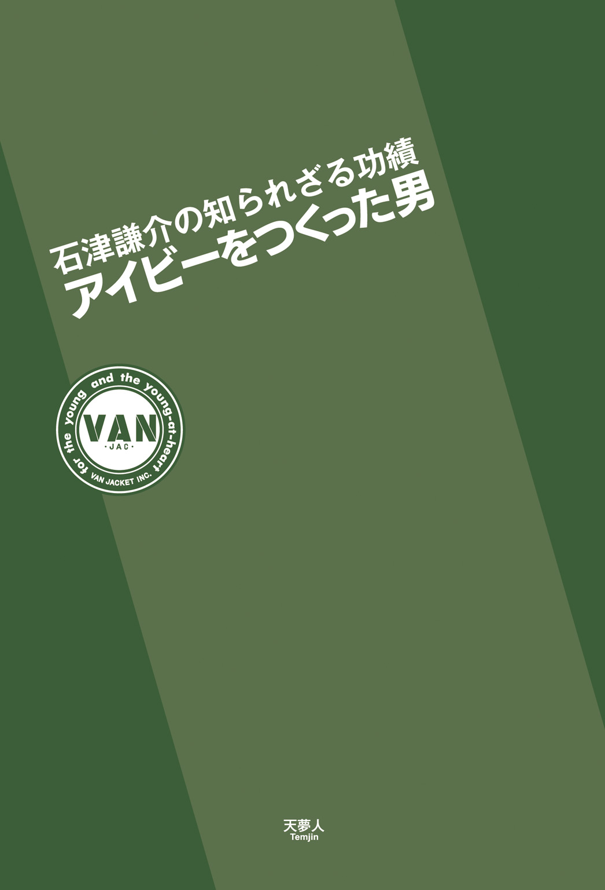
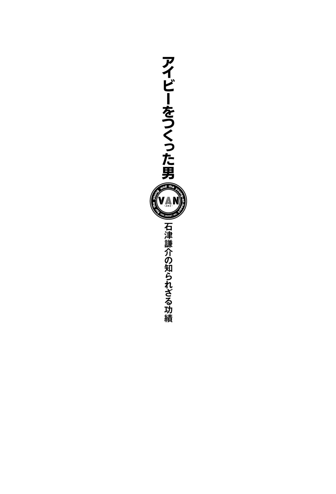
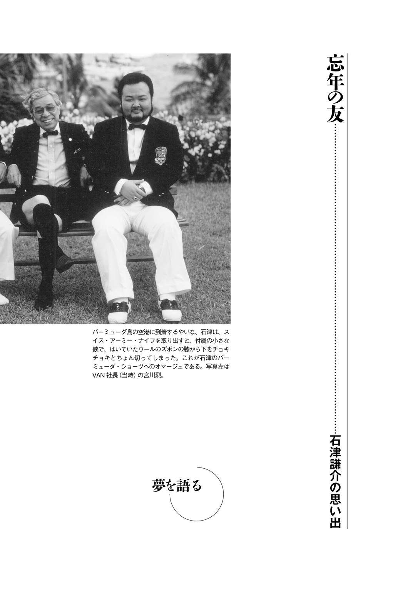
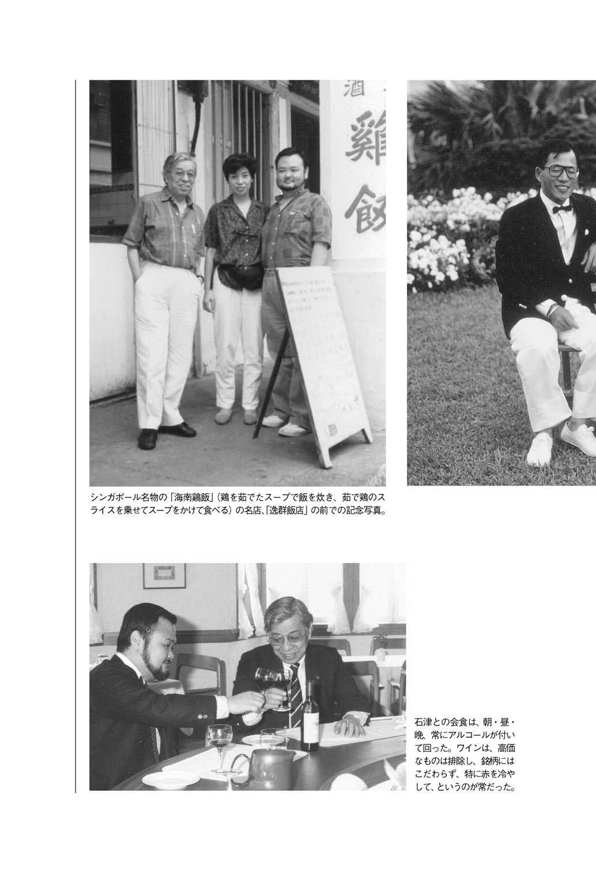
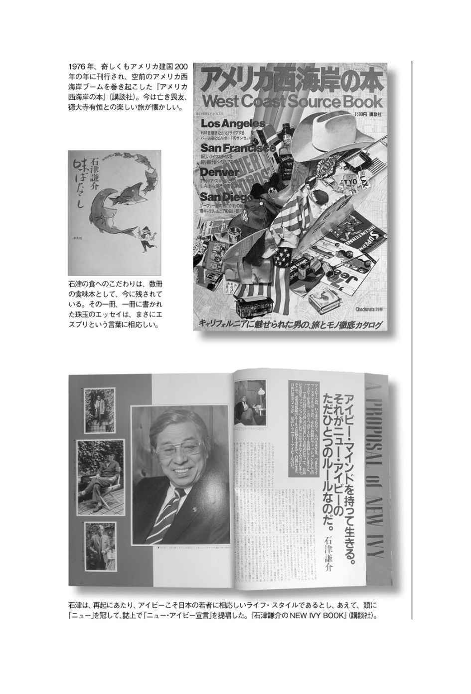
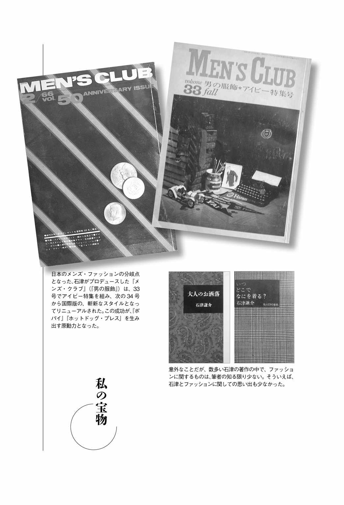
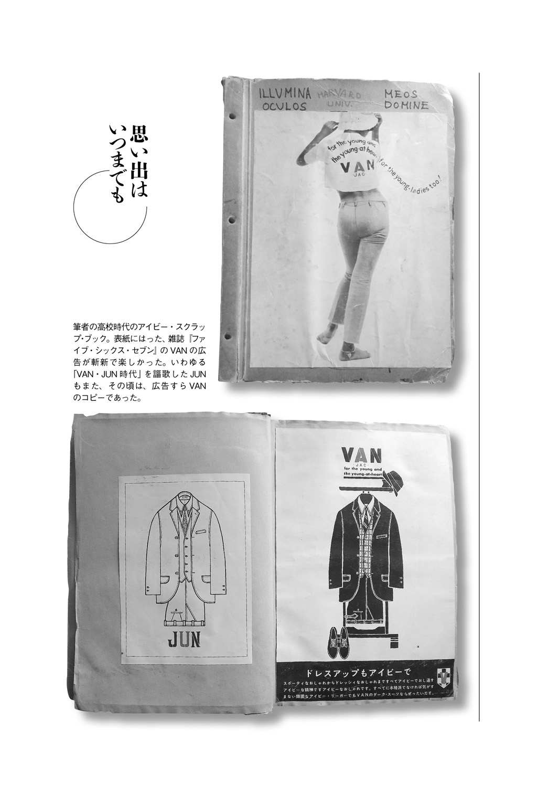
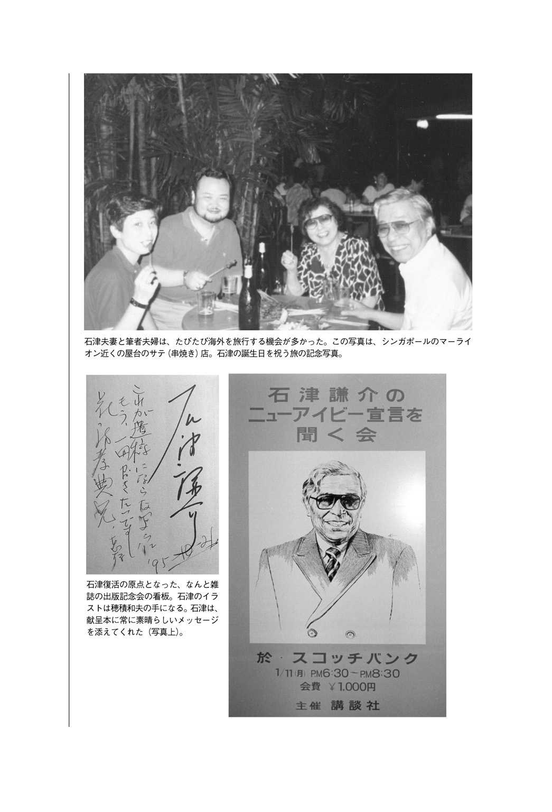
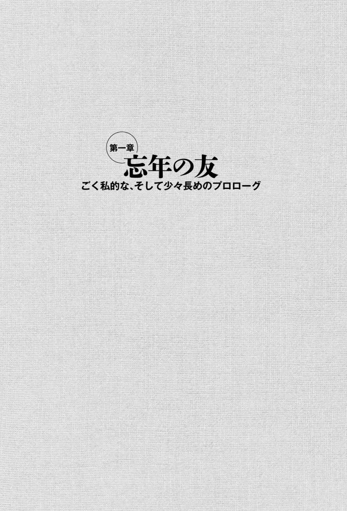
平成一七（二〇〇五）年五月二四日、ファッション界の巨星、石津謙介が世を去った（享年九三歳。直接の死因は肺炎）。
これは、単に日本のファッション界のみではなく、広く言えば、第二次大戦後に培われたさまざまな日本の文化にとって「一つの時代の終焉」を告げる、惜しむべくも悲しいエポックであり、それは、私にとっても同様であった。
長期の入院やさまざまな状況からかねて覚悟はしていたので、訃報を受けたときはそれほどのショックはなかった。
訃報を受けると、私は共に石津を知る友人・知人に電話をかけ続け、饒舌にしゃべり続けたことは覚えているが、何をしゃべったのかはまったく覚えていない。
石津は、かねてより、
「ボクはね、お葬式っていうのが大嫌いだから、絶対にやらない。だから、献体することを決めたんだ......」
と話していた。言葉どおり、遺体はその日のうちに献体にふされ、四谷の自宅には戻らなかった。
本来なら、すぐにでも石津家に駆けつけ、昌子夫人にお悔やみの言葉を述べるべきだろう。しかし、夫人もまた、体調を崩され広尾の病院に入院中だったので、それは遠慮し、夫人と親しくさせていただいている家内に病院に電話をかけさせ、心からの哀悼の意を表することにとどめた。家内によれば、夫人は意外に元気だったという。
しかし、それだけでは気がすまず、翌日、青山の石津事務所へ行き、長男祥介、次男祐介の両氏に弔意を表した。そして、石津のワーク・デスクに、生前、石津が好きだった白い百合の花束を捧げた。
石津事務所から帰宅し、デスクの前で呆然としていると、電話のベルが鳴った。
受話器をとると、嗚咽の声が聞こえる。しばらくして、聞きなれた声が聞こえてきた。
「宮川です......。親父さん、死んじゃったよ......」
それだけ言うと、また嗚咽の声、しばらくして男泣きに泣く声が聞こえ、ややあって、切れた。
電話の主は、復活した新生ヴァン・ヂャケット代表取締役（当時）の宮 川 烈 だった。宮川は幼時に父を亡くしており、その喪失の気持ちは痛いほどわかった。
宮川は社員としてＶＡＮで石津の薫陶を受け、倒産後も陰日向なく、誠心誠意、石津を支え続けた人物であり、私にとってはそういう意味で、まさに真の戦友であった。
それから数日、私は仕事が手につかなかった。正直に言えば、やはりショックを受けていたのだろう。
数日後、私は、石津のことを書き残しておかなければならないと、強く思うようになった。しかし、書くべきことはあまりにも多く、何をどう書けばよいのか、思い悩む日々が続き、いろいろな人にアドヴァイスを求めた。そして、私と石津の間柄を知る人の多くから、石津の正伝を書くべきだとサジェストされた。
しかし、私は、最初から正伝を書くつもりはさらさらなかった。
というのも、私は、人物の正伝とはその対象になる人物の評価がある程度定まった時点でその人物を実際に知らない人、つまり、あらゆる先入観を排除して事実だけを見据える目を持った人が書くべきだ、との考えを持っているからである。
石津に関していえば、石津は毀 誉 褒 貶 の多い人物であり、明確な評価は今なお定まっていない。また、少しでも石津と関わりのあった人は、石津への評価の内容は別にして、どうしても主観が入り込み、客観的な評価や描写ができないと思うからである。
私はといえば、石津とあまりにも深く関わりすぎた......。
正伝以外である人物のことを書くためには、逆に、明確な目的とレジティマシー（正当性）が必要になる。そして、私には、石津のことを書くレジティマシーがあると確信している。そのことを理解していただくために、まず、私自身のことから書き始めなければならない。
私の父は明治三五（一九〇二）年、石津と同じ岡山に生まれた。明治四四（一九一一）年生まれの石津にとって九年先輩にあたる。
父の父、つまり私の祖父は、政治的野心を持つ人物であった。父が十代の頃、当時、愛知県知事を務めていた友人の誘いで名古屋へ居を移し、官位を得て公務をする傍ら、岡山の名産麦 稈 真 田 で帽子を製造・卸売りをする事業を始めた。
政争に負け、公務を退いた祖父であったが、イタリアのボルサリーノ（トリノに本社を置く名門帽子メーカー）を日本に導入するなど、事業は少なからず成功し、父に受け継がれた。父もまた、祖父に似て政治的野心を持っていたが、むしろ政治のほうが忙しかった。そして戦争が始まったことも受け、事業は中断する。
戦後、父は再び帽子事業を興し、事業は順調に発展した。そして昭和二一（一九四六）年、長男として私が誕生する。
私の父は、着るものに大変うるさかった。好みは英国風で、朝起きてから寝るまでネクタイを外さないような人だった。それに影響されてか、私も幼時から着るものが好きだった。小学校一年のときには、父と同じストライプのダブルのスーツを着た写真が残っている。
今でも覚えているのは、小学校三年生のとき、突然、デニムのズボンが欲しくなり、それが今でいうジーンズなどとは知る由もなく、母にねだったことだ。
当時、子供用のジーンズなどどこにも売っていなかったので、デパートで誂 えてもらった。そのとき、「裏地は黄色がかったタータン・チェックにして、ステッチは黄色」と自分で指示したことを覚えている。そんな情報をどこから引き出したのかよくわからないが、おそらくよく遊びに行っていた隣家で見た、『タイム』や『ライフ』などのアメリカ雑誌の写真などに影響を受けたのだろう。
後に石津から、小学校の頃からファッションが好きだったと聞かされて、その符合に驚いたことがある。
このような私のファッション嗜好は中学生になっても続いた。学校以外ではほとんど大人と同じような格好をしていたこともあり、周りからは不良の烙印を押されていた。
高校二年のとき、私にとって衝撃的な出来事が起こった。不良仲間の一人が丸首の、白の木綿のスウェーターを着て現れたのである。背には、黒で「for the young and the young at heart」、真ん中には「ＶＡＮ」、そしてその下に小さく「J. A. C.」のロゴがフロッキー・プリントされていた。「Ａ」と「J. A. C.」は真紅だった。
友人に聞くと、
「これは、アイビーといって、今一番新しいファッションだぞ。メーカーはヴァンっていうんだ......」
と、自慢げに教えてくれた。
私にとって、その白の木綿のスウェーターとの遭遇は、まさに衝撃的だった。
翌日、教えてもらった店に出かけ、さっそく、トレーナー（これは石津の造語で、正しくはスウェット・シャツ）──友人と同じのは嫌だったので、白地に臙 脂 色で「HARVARD」の文字という大学のロゴが入ったのを選び、同じロゴの入ったタオルを購入した。
これが、私のＶＡＮとの最初の出合いであった。
ミステリー好きの私は、当時、『ヒッチコック・マガジン』（アメリカの「Alfred Hitchcock's Mystery Magazine」の日本版。ちなみに、同誌の編集長は中原弓彦、後の小林信彦。イラストは弟の小林泰彦）という雑誌を定期購読していた。いつもは小説のみを読み、コラム・ページは読み飛ばしていたが、あるときパラパラとページをめくっていると、「お洒落ルーム」というタイトルの、ファッションに関する連載が目に留まった。そこには、アイビーに関する情報が、熱意をこめて記されていたのである。
筆者は、イラストレーターの穂 積 和 夫 。
この連載から穂積がファッションに関する本を出版することがわかり、さっそく書店に頼んだ。
以来、『着るか着られるか』（三一新書）と題されたその本は、学生時代を通じて私のファッションのバイブルとなった。と同時に、父の会社へ行き、資料としてとっていた『メンズ・ウェア』誌などを読むようになった。そこで初めて、石津謙介の名と出合うことになる。当時の石津は、ファッション誌や業界誌に精力的に健筆をふるっていた。
昭和三八（一九六三）年の秋、書店で一冊の雑誌を見つけ、その表紙に目を奪われた。その名は『メンズ・クラブ』（三三号）。
表紙には、大英百科事典にかけられたネクタイ、クラシックなタイプライター、イェール大学のプラーク、アイビー大学のペナントなど小気味よく並べられ、まさにアイビー特集と銘打った号に相応しいものだった、私はただちにそれを購入し、むさぼり読んだ。
後に、共にさまざまな仕事をするようになる、伊 藤 紫 朗 （服飾評論家、ファッション・プロデューサー）、星 野 醍 醐 郎 （服飾評論家、ファッション・デザイナー）、穂積和夫（イラストレーター）、林 田 昭 慶 （写真家）、黒須敏之（現くろすとしゆき。服飾評論家）、石津祥介（石津謙介の長男）、浜 野 安 宏 （ライフスタイル・プロデューサー）という人たちの名前を知ることになる。ちなみに、この号で石津は、「流行が予想されるこれからのコート」という業界向けの、ごく真っ当な予測記事を書いている（もともと『メンズ・クラブ』は、『男子専科』と並んで、一般向けというよりはスタイル・ブックと呼ばれる、テーラーや紳士服小売店などプロ向けの季刊誌だった。しかし、このアイビー特集号で一般読者を意識し、次の号からは、一般読者対象の国際版ファッションを中心としたサブ・カルチャー誌へと大きく変身する）。
『メンズ・クラブ』との遭遇により、私のアイビー志向はますますエスカレートすることになる。
昭和三八（一九六三）年一二月、国際版となった新生『メンズ・クラブ』（三四号）が誕生し、次号より隔月刊で発行された。
体裁を一新し、より洗練された三四号の表紙は、ヴィンテージのコロナのタイプライターを打つ両手が主人公という斬新なデザインで、右手の小指にはカレッジ・リング（アメリカの高校、大学の卒業記念に作るリング。一般的にはグラデュエイト・リングと呼ばれる）が光っている。三五号の表紙は、チェス・ボードの上に手錠につながれた男女の手。女の手には白のビショップ、葉巻を持つ男の指にはカレッジ・リング。三六号の表紙は、真紅のライニングのアタッシェ・ケースに、さまざまなステイショナリー。その上にかざされた男の指にもカレッジ・リング......。そして、表４、つまり裏表紙は、決まって黒地（時には赤地）にくっきりとＶＡＮのロゴ。
私は、三六号の表紙に使われたＶＡＮ製のアタッシェ・ケースがどうしても欲しくなり、修学旅行用の鞄を買うと親に偽って手に入れた。そのとき、スロート・タブのついたチェンジ・ポケット付きのステン・カラー・コートも同時に購入した。これらの二点は、現在もなお現役で、私のワードローブ（衣装戸棚）の中にある。
敗戦で疲弊した戦後日本の若者ファッションは、ほぼ無から出発したといってよい。
その原風景は、手元に残った国民服であり、学生服であった。
その後、闇市が栄え、少し羽振りのいい連中は、特攻服にシルクの白のスカーフをステイタス・シンボルとした。
米軍が進駐してくると、瞬く間に若者たちの間で米軍スタイルが人気の的となる。
特に、彼ら米兵のオフ・デューティ（勤務時間外）のときに着る、Ｔシャツ、アロハ・シャツ、Ｇパン（ジーンズ。「ＧＩ＝Government Issue」、つまり米兵たちがよくはいていたので、ＧＩパンツが縮まった名称）、チノズ（チノ・パンツ）、ラバー・ソール（厚いスポンジ底）の靴、そしてレイ・バンのサングラス、さらには米軍の戦闘服などが彼らのステイタス・シンボルとなる。
ヘア・スタイルはポマードとチックで固めたリーゼントか、短く刈り上げたＧＩカット（後に一世を風靡した慎太郎刈のルーツである）。
これらの流行は、石原慎太郎のベストセラー小説『太陽の季節』の登場人物のファッションと符合し、それらのファッションをまとった若者は「太陽族」と呼ばれるようになる。
しかし、巷にそのようなアイテムを売る店は少なく、若者たちは米軍の放出品ショップ（サープラス・ショップ）に群がった。
戦後、芋飴を売る露天商で賑わい、「飴屋横丁」、通称「飴横」と呼ばれた上野と御徒町間の高架下には米軍の放出品の店が数軒でき、若者たちが集まるようになった。以後、飴横は、いつの間にかアメリカ製品を売る「アメ横」に大きく変貌し、現在もなお一部、その面影をとどめている。
このような状況の中で、中高年向きの英国式高級ファッションから若者向けのアイビーに転進したＶＡＮが登場する。
『メンズ・クラブ』との共同作戦で世に出た「石津のアイビー」は、それまでファッションに対してまったくレギュレーション（規範）を持たなかった日本の若者を瞬く間に虜にし、アイビーは日本の若者のユニフォームの観を呈するようになった。
ファッションのみならず、ある事象が一世を風靡すると、そこには必ず〝仇花〟が登場するものである。
昭和三九（一九六四）年、東京オリンピックの年の初夏、銀座のみゆき通りに突然、異装の男女の若者が大勢たむろするようになる。
男性は、細身のコットン・パンツにマドラス・チェックやバティック・プリントのボタンダウン・シャツ、アイビー・キャップと呼ばれる小ぶりのハンチング、それにどういうわけか細巻きの蝙蝠 傘。女性は頭にバンダナ様のスカーフを巻き、リボンベルトのついたマドラスやバティックのロング・スカートに、サンダル履き。
彼らは一様に必ず、ＶＡＮの大きな紙袋を手にしていた。ＶＡＮの紙袋が手に入らない連中は、裏返した米袋に自らＶＡＮのロゴを書き込んでバッグ代わりに持っていた。
マスコミは、彼らのことを「みゆき族」と名づけ、軽 佻 浮 薄 、不良の烙印を押し、批判の対象とした。
マスコミによるみゆき族批判キャンペーンや、東京オリンピックを間近に控え、不特定多数の若者たちがたむろすることを問題視する警視庁の厳しい補導や取締りで、みゆき族は夏以降、銀座から姿を消した。
しかし翌年、彼らは「アイビー族」として再び登場する。みゆき族は銀座という特定の場所のみに出没したが、アイビー族は全国津々浦々、ありとあらゆる繁華街に出現した。
彼らのファッションは、すでにアイビーを超越していた。極端に短いラッパズボンや裾を引きずるようなロング・スカートで町中を闊歩し、その姿は惨めで汚らしく、ファッションのアイビーとはもはや何の関係もなくなっていた。
それにもかかわらず、マスコミは、彼らに当時目の敵にしていたアイビーの名を冠したのである。このアイビー族もまた、厳しい補導と取締りの結果、いつの間にかその姿を消した。
この時代、若者がファッションに興味を持つこと自体が「不良」の始まりだと、当時の大人たちはごく普通に考えていた。そして批判の目は、マスコミが「アイビー教の教祖」と名付けた石津に向けられる。そして、それらの尻馬に乗って、識者といわれる人たちが、石津とＶＡＮに対してピンポイントで攻撃するようになる。
画家の長尾みのるは、
「あれは、典型的な亡国デザイン。石津氏のつくるカッコよさは、無思想な男性装飾だけ。青年を骨抜きにして、女性化するものだ」
作家の寺 内 大 吉 は、
「あの服装は、精神の貧しさからくる下僕の身なり。デザイナー諸氏に、主役の服装を流行させるように希望したい」
映画監督の恩知日出夫は、
「何も知らない少年たちを、思うままにＶＡＮで牛耳ったことは許せない。サギに相当する」（以上すべて『週刊現代』昭和四一〈一九六六〉年一〇月一三日号）
と厳しく批判しているが、それに対し石津は、
「ボクは、流行はつくらない。風俗をつくりたい。人間が自己を主張するとき、いちばん安直なのは、いいカッコをすることです。どこの台所にも味の素があるように、どこの家のタンスにもＶＡＮ製品をおきたい。男のおしゃれは、身につけるもので劣等感を少しでもカバーしようとするところから起こっている。ＶＡＮ製品の浸透は、すでに流行から風俗になったと信じている」（同誌）
と、一向、意に介していない。
また、みゆき族に関しては、漫画家・近 藤 日 出 造 との対談で、
石津 例のみゆき族、あれは、わたしがつくったなんていわれたんですが......。
近藤 若い男の悪傾向は、ぜんぶあなたが......。（笑い）
石津 ある週刊誌に『みゆき族でもうけてすみません』という見出しで書かれちゃったんですがね、わたしがあの連中を銀座のみゆき通りへ立たせたわけじゃないんです。とにかく連中、かつてはメチャクチャな服装でみゆき通りに立った。
近藤 いまも立ってるけれど、男の子はみんなきちんとしたエリート服ですね。
石津 でしょう。かつては、こわくてそばを歩けなかったけれども、いまは歩けるでしょう。
近藤 おかげさまで。（笑い）で、実際に連中、こわくないんですか。
石津 立つことが彼らの目的なんですから、ちっともこわくないし、服装が一見紳士風になったことによって、非常におとなしくなった。わたしが服装をそうさせたわけじゃありませんが、わたしのところのものを選んだ、ということはあったでしょうね......。（『週刊読売』昭和四〇〈一九六五〉年五月二三日号）
と、こちらも柳に風と軽く受け流している。
当時、名古屋在住の高校生であった私は、実際のみゆき族は目にしていない。しかし、そのニュースは当然知っていた。その年の高校の文化祭で、私はファッション好きの友人とともにみゆき族で仮装行列に参加した。
昭和四〇（一九六五）年、私は慶応義塾大学に入学し、東京での生活が始まった。
このキャンパスで私は、終生の友、今は亡き景山民夫と遭遇する。景山と私は音楽仲間として知り合ったのだが、それよりもファッションの好みで意気投合した。
当時、横浜の野毛山に住んでいた景山は、当然ファッションの上で私より一日の長があった。二人で講義をサボっては横浜の元町を歩き、そこで「フクゾー」や「信濃屋」、そして「ポピー」というＶＡＮ以外のトラッドの老舗を教えられ、私のアイビー好きはまさに筋金入りとなった。
景山は特にポピーがお気に入りで、
「ポピーへ行って、棚にあるボタンダウン・シャツを見せてほしいと頼むだろ。そうすると、店員のおじさんが貴重品でも扱うように両手でうやうやしく下ろして見せてくれる。そして、こちらがそれを見て返すと、また両手でうやうやしく捧げて元に戻すんだけど、ほら、棚のシャツの置いてあったところに、薄っすらと四角い埃の跡が残っているだろう。おじさんは、その跡を見極めて、そこへぴたっと置くんだよ」
その時代、ポピーはすでに伝説の店であった（信濃屋は馬車道に移ったが、フクゾーとポピーは今も元町で昔ながらの姿と品揃えで盛業中である）。私は、当時、景山からプレゼントされたフクゾー製の紺・赤・白のＣＰＯジャケットを今も秘蔵している。
過日、テレビで放映された加山雄三の「若大将」シリーズで、加山が同じジャケットを着ているのを見て、景山と過ごした懐かしい時代を思い出し、目頭が熱くなった（初期の若大将シリーズでは、ＶＡＮのペナントやポスターがさりげなく小道具として使われていた）。
ポピーやフクゾーの製品は、つまりそんなステイタスを持っていた。
当時、ラジオ関東にＶＡＮが提供する「アイビー・クラブ」という深夜番組があり、私は欠かさず聴いていた。この番組は視聴者を会員に組織しており、私も直ちに会員となった。
あるとき、石津のファッション指南本が発刊されたことを受け、その出版記念講演会があるとの番組内告知があった。会員の中から抽選で出席者を募るというので、さっそく応募してみたところ、運よく当選、私は勇んで講演会へ参加した。
講演後、著書のサイン会があった。そこで、私は生まれて初めて石津と言葉を交わしたのだが、何を話したのかはまったく覚えていない。しかし、一見優しそうな表情だが、眼鏡の奥の、刺すような鋭い眼光は、今でもはっきり覚えている。
この講演を聞き、著書を読んで、私はどうしても石津と仕事がしてみたいと思うようになった。昭和四〇（一九六五）年のことだった。
石津の著書のタイトルは、『男のおしゃれ実用学』（婦人画報社刊）。
この本に関しても、石津は、
「半年ほど前、彼は、アメリカのメンズ・ファッション・ガイドの海賊版を出した。ある婦人雑誌社から出版したこの本は、タイトルだけかえたもので、さし絵も写真もそっくり同じだった。おそらくＶＡＮ企画室員が書き、石津謙介著としたのだろうが、この本の正式な翻訳書は他の出版社から出ており、そこから婦人雑誌社へ厳重抗議、結局は示談になったが、このときはさすがの彼も、えらいことになったとしょげていた」
「以前、ＶＡＮのデザイナーだった人から聞いた話では、あのＶＡＮスタイルは、アメリカのカレッジの門から出てくる学生をパチパチ写真にとり、それをそのまま仕立てたものだそうです。海賊版を出したことに、罪の意識を感じるような人じゃありませんよ」
（いずれも『週刊現代』昭和四一〈一九六六〉年一〇月一三日号）
などと、非難中傷を浴びている。
同書は、新書版変形、本文は一〇級という細かい活字で、三一〇頁という、膨大な情報を擁する本であった。データ部分に関しては、何人かのスタッフが関わって当然であるが、そのことが「ＶＡＮ企画室員が書き」ということにはならない。
また、「さし絵も写真もそっくり同じだった」とあるが、写真はすべて『Take Ivy』、『メンズ・クラブ』の表紙を撮った名カメラマン、林田昭慶のオリジナルであり、挿絵、つまり、ファッション・イラストは、日本が世界に誇るファッション・イラストレーター、穂積和夫の作品、こちらもオリジナルである。
当時、メンズ・ファッションに関して先の記事にあるような翻訳本が出ていたとすれば、当然、ファッション好きの我々の間で話題になったはずだ。しかし、現在に至るまで、寡聞にして私はそのような本の存在を知らない。
石津の文体に関しては、石津本人以外では私が最もよく知ると自負している。それゆえ、スタッフによるデータ構成があったにせよ、同書全体に石津の手が入っていることは断言できる。
「あのＶＡＮスタイルは、アメリカのカレッジの門から出てくる学生をパチパチ写真にとり、それをそのまま仕立てたものだそうです......」という文言に関しては、おそらく昭和四〇（一九六五）年に婦人画報社から出版された、林田昭慶の写真集『Take Ivy』のことを言っているのだろう。同書は、当時のアイビー大学八校を巡って学生たちのライフ・スタイルを撮影したもので、今でもアイビー・ファンたちのバイブルとなっている。おそらくこの本を曲解したものだろう。
昭和四四（一九六九）年二月、私は世界一周の旅に出た。
その頃、私は、景山や高 平 哲 郎 たちとともにテレビ番組の構成や出演などに学業はそっちのけで熱中しており、その生活が楽しかった。それも当然で、当時も今も、テレビ局のギャラは破格だった。我々もまた例に漏れず、脚本料、資料収集費、出演料、さらには交通費などを合わせれば、週給が当時のサラリーマンの初任給を超えるほどだった。
私は、いつの間にか父の事業を継ぐ意欲を失いかけており、夏季休暇で帰郷した際、卒業後も東京に残り、テレビの仕事を続けたいと父に話した。父もまた、私の気持ちをうすうす気づいており、父の事業を継ぐことを前提に破格の提案をした。その提案が、世界一周旅行であった。
私は迷いに迷ったうえ、この提案を受け入れた。
このことも、石津が家業の紙問屋を継ぐことを条件に東京遊学を許されたことと、妙に符合し、自分でも不思議に思うことがある。
東京を出て、香港、マニラ、バンコク、ニューデリー、カラチ、テヘラン、イスタンブール、アテネ、ローマ、ミュンヘン、ベルリン、パリ、アムステルダム、コペンハーゲン、ロンドン、グラスゴー、ニューヨーク、ニュー・オルリンズ、ヒューストン、ロサンゼルス、サンフランシスコ、ホノルルを巡る、約二カ月の旅。最大の目的地はニューヨークだった。
ニューヨークに着き、カーネギー・ホールに隣接するホテルに荷を下ろすと、すぐにマディソン街三六五番地の「ブルックス・ブラザーズ」に向かった。そこでオックスフォードと、タッターサルのボタンダウン・シャツとレジメンタル・ストライプのボウ・タイを買い込んだ。私は、七階建てのクラシックなビルと重厚な店内、そして、かなりの年配の店員たちのジェントリーな応対に圧倒された。その足で、小路を挟んで向かい側にあった「Ｊ・プレス」へ行って、ストライプのボタンダウン・シャツと小紋のネクタイを買った。
他にも欲しいものは山ほどあったが、一ドル三六〇円、個人外貨持ち出し枠一人五〇〇ドルの時代ではそれだけでも贅沢な買い物だった。
翌日は、コロンビア大学のキャンパスで一日を過ごした。意外なことに、アイビー・スタイルの学生の姿が見られるどころか、ヒッピーまがいの長髪の学生が多く見られた。正直、少々がっかりしたが、それでも生協で大学のロゴの入ったＴシャツやエンブレム、デキャル、ペナント、文房具などを大量に買いこんだ。
世界一周といっても、この旅は私にとって、アイビーの聖地と原点を訪ねる巡礼の旅であった。
しかし、大学四年に入ると私のアイビー熱も徐々に冷めかけ、英国式のより伝統的なファッションに憧れるようになる。これは一つに、私の物事に対する徹底した原点回帰志向によるものだが、本当の理由は体型的な問題でＶＡＮの製品が着られなかったためでもある。
大学卒業後、いったん帰郷し、四月の初め、大阪に向かった。当時、地方の事業主の跡継ぎは、自社に入る前に〝他人の飯を食って苦労しろ〟、一年を限度に丁稚修行に出ることが慣例となっていた。私も例に漏れず、父の決めた大阪の洋品会社で修行することになった。大嫌いな算盤勘定の毎日だと覚悟を決めていた。
ところが、丁稚先の会社に行ってみると、事情は変わっていた。その会社は、ごくありふれた洋品問屋から男性用のニット専門会社、つまりファッション・メーカーに変身を遂げつつある段階にあった。多少なりともファッションの知識のある私は、いきなり企画室に回され、デザインとマーケティングを担当することになった。
棚から牡丹餅のように転がり込んできた、憧れのファッション・ビジネスの中枢に飛び込んだ私は、毎日が楽しくて仕方がなかった。その会社はＭＦＵ（日本メンズ・ファッション協会）の会員で、私がその担当として在阪のデザイナーたちとの交流を深めることになった。
同社で、私はいくつかのブランドを立ち上げた。「ティキ」「ブリティッシュ・パイパー」「ノーザン・カントリー」などと言えば、ご記憶のある方もおられるかもしれない。また、その会社はイタリアのレオナルド・ストラッシと提携しており、イタリアン・ニットの真髄に触れることで、私のファッションに対する視野は大きく広がった。
しかし、楽しい日々は続かなかった。一年間の年季奉公は夢のように過ぎ、私は父の会社に戻ることになった。
父の会社での仕事は、私にとって苦痛以外のなにものでもなく、休みのたびに東京へ遊びに出かけるのが習慣となっていた。そんなとき、旧知の新美容出版の編集者から、『みわく』という雑誌にファッション・エッセイを書いてみないかというオファーがあった。原稿を送ったところ、意外にも好評で連載が決まった。同じ時期、景山もまた同誌にエッセイを連載することなり、期せずして同誌は、私たち二人がものを書くことの原点となった。
父の会社でルーティンの仕事をしながら、私はものを書くことに喜びを感じ始めていた。そして、それはファッションの仕事をしたいという願望に変わり、その願望はいつしか、しばらくはあきらめていた「石津謙介と共に仕事をすること」への回帰、ついには、私にとって人生の究極の目的になっていった。
父の会社に戻って三年目の春、私は思い切ってそのことを父に話した。子を見る目、親にしかずで、父親も私の仕事に対する日常の態度を見ていたのだろう、意外とすんなり受け入れてくれた。私は、父の会社を辞めることにした。
しかし、特に先行きのあてがあったわけではなく、私はしばらく浪人と称してブラブラしていた。そんなある日のこと。この地方最大の繊維商社がデザイナーを募集しているとの新聞広告が目に入った。さっそく応募したところ、運よく入社することができた。この会社で、私はアメリカのボビー・ブルックス社のメンズ・ブランド「ドネガル」のデザインを担当した。当時アメリカで流行し始めた「ニュー・トラッド」と出合うことになり、いわゆるアイビー志向とは別の方向に向かうことになった。
運とは続くものである。入社まもなくして、学生時代の友人から一本の連絡が入ってきた。講談社で新しいメンズ・ファッション誌『チェックメイト』が発行される、ついては、創刊号のアメリカ取材を頼めないかというオファーだった。私は否応なく引き受けることにした。会社には休暇届を提出して、さっそく東京に出向いた。編集部で簡単な打ち合わせを済ませ、直ちにカメラマンとともにアメリカに向かった。
当時、編集部には杉 江 博 愛 がいた。後の自動車評論家・徳 大 寺 有 恒 である。
以後、私は、同誌にさまざまな原稿を書くことになる。その関係から、ファッションに関しては私の隠れた恩師とでも言うべき、イラストレーターの穂積和夫と知り合うことになる。
昭和五一（一九七六）年、同誌からアメリカ建国二〇〇年に合わせ、当時の若者に人気だったアメリカ西海岸をテーマにしたムックを作りたい、ついては企画を提出してくれないかとの依頼がきた。というのも、当時は、海外渡航はまだ一般的ではなく、多 士 済 々 の編集部にもアメリカへの渡航経験者は一人もいなかったからである。
私は、全力でムック一冊分の企画書をまとめて提出、それはほぼ原型のまま採用された。私は、再び会社に長期休暇届を提出し、取材のため、編集部の杉江たちとともにアメリカ西海岸に向かった。
『アメリカ西海岸の本』（West-Coast Source Book）と名付けられたこのムックが完成すると、私は再び会社に戻った。しかし、もはや名古屋の会社のデスクの前でルーティン仕事をする気にはならなかった。
東京へ行きたい、という気持ちが募る中、会社の常務から「独立して、東京でメンズ・ファッションの会社を始めるが、君、来ないか」と声をかけられた。渡りに船と、私はその話に乗り、再度の上京を果たすことになった。
その会社では、商品企画の仕事をする傍ら、『若い女性』『チェックメイト』などの原稿を書いた。ある程度生活基盤もできたこともあり、私は社長の娘と結婚した。仲人は杉江夫妻に依頼した。
ところが、「好事魔多し」のたとえどおり、順風満帆だと思えた成り行きに問題が起こった。社長、つまり義父が突然原因不明の難病にかかり、事業の継続が不可能になってしまったのである。私は、この難関をどう切り抜けようかと思案に明け暮れていた。
そんななか、私はＶＡＮ倒産のニュースを聞いた。昭和五三（一九七八）年四月六日のことだった。
一つの時代が終わった......。それが最初の感慨だった。しかし、次の瞬間、それは「石津謙介はどうしたのだろう」という思いに変わっていた。
翌昭和五四（一九七九）年の一月半は、突然、杉江から呼び出しがあった。
翌日、護国寺近くの喫茶店で杉江に会うと、杉江は私を講談社に連れて行き、当時、講談社の新雑誌開発室の室長であった内田勝に引き合わせてくれた。杉江は、前もって私のことを内田に話してくれていたらしく、話はすぐ核心に触れ、それから三時間ほど、私は内田と話しこんだ。
内田の話は、現在、若者向けの男性誌を企画しており、創刊は四カ月後と決まっている。しかし、現段階になっても、雑誌のタイトルすら決まっていない。また、創刊号の特集、さらにはそれに続く編集のバックボーンも、まだ決まっていない......という内容であった。
それを聞いた私は、二日間の猶予をいただければ、企画書を提出すると答えた。それから二日間考えに考えた末、雑誌のタイトルは『ホットドッグ・プレス』、創刊号の特集はライバル誌『ポパイ』がアメリカの大学生にスポットを当てているので、あえてアメリカの高校生を取り上げるという企画書を作り上げた。
二日後、私は企画書を携えて、内田に届けた。内田は私の話を聞き、企画書を読んで、その場で決断を下した。ここに、新雑誌『ホットドッグ・プレス』が誕生した。一週間後、私は、取材のため再びアメリカに出発した。以降、私は昭和六三（一九八八）年までの九年間にわたり、同誌のエディトリアル・ディレクター、ファッション・ディレクターを務めることになる。
その年の秋、私はＭＦＵの会合の席で、石津の姿を見た。長男の祥介に伴われて会場に現れた石津はやつれ、足元も少しおぼつかないように見えた。その瞬間、私は、私のすべきことを悟った。
〝石津謙介の復活！〟
そうだ、私の手で石津謙介を復活させよう──、今考えれば甚だ不遜な、しかし確信的な決意を持った。
会から帰ると、その思いを編集長の内田にぶつけ、石津謙介の特集を提案した。しかし、内田はなぜか即答を避けた。当時の講談社の上層部は、どういうわけか、石津に対して妙な反感を持っていたようだった。ある上層部の人間は、私に「あの人とは、関わらないほうがいいよ」とまで言い切った。
そのような反感に対し、反骨の内田は、「よし、やろう。どうせやるなら徹底してやろう」と決断、私に企画書の提出を求めた。
ＶＡＮの倒産は、ファッションを扱う媒体にとって超特大のニュースであり、ライバル誌の『ポパイ』はその年の六月一〇日号で、穂積和夫のイラストを表紙に「Thanks a lot VAN. VANが先生だった」という大特集を組んでいる。
当然ながら二番煎じはやりたくない。さらに、過ぎ去った過去を振り返りたくない。というわけで、あえてＶＡＮに関する話題は避け、石津本人にスポット・ライトを当てて、アイビーを未来志向で考えるという企画書を作り上げた私は、内田に提出した。
四日後、内田と私は、当時行きつけの赤坂の韓国料理店のテーブルを挟んで、石津と向かい合っていた。サイン会で会って以来、一三年ぶりの邂 逅 だった。
私は、石津に今回の企画趣旨を説明し、企画書のコピーを渡した。
石津は、私の説明をさえぎることなく黙って聞き続け、さらに、企画書に丹念に目を通した。
ややあって、企画書を読み終えた石津は、我々に、
「今頃、ボクのことを書いて、雑誌は売れるんですか？」
と尋ねた。その意外とも思える率直な問いに、我々はほぼ同時に、
「もちろんです」
と答えた。
それからは、杯を傾けながら石津の来し方に関して、談論風発、取材を兼ねた楽しい会話が続いた。ただ、時々、石津が私のほうに目を向けて、不審そうな顔をするのが少し気になった。
会話は途切れることなく深夜に及んだ。時間に気づいた内田はハイヤーを手配し、我々は店を出て、通りまで見送った。ハイヤーに乗り込むとき、石津は内田に何事かささやいた。
「いいなあ、あなたたち、ボクだけ先に帰してどこかいいとこへ行くんでしょう......」
それを聞いて、私はふと、この人は今、とても寂しい境遇にいるんだなと心に思ったのを覚えている。
私は、石津が内田に耳打ちをしたことが気になったので、内田に質した。
「いや、石津さんは、インタビューに馴れているから、あなたがメモを取らないことが気になって仕方がなかったらしい。だから、大丈夫です。あれがあの人のやり方ですから、といっておいたよ」
と教えてくれた。
私は、インタビューや取材は常に「一期一会」と心得、当時は取材の際、一切メモをとらないことにしていた。メモを取ると、どうしてもメモに頼ってしまうし、注意も散漫になる。そんな私のやり方が、取材されることに馴れた石津には理解しにくかったのかもしれない。
翌日、自宅に電話があった。取り次いだ家内が慌てて私のところへやってきて、
「石津謙介さんから『花房先生ご在宅ですか？』だって......」
家内もまた、ファッション業界で仕事をしてきた人間なので、石津謙介がいかなる人物かは充分承知している。その大先生が、自分の亭主を先生と呼んでいる。家内はわけもわからず、オロオロしている。
私は、恐縮しながら受話器をとった。話の内容は取材と撮影日程の再確認だった。石津は、会話の中で「先生」を連発し、私は大恐縮の挙句、先生と呼ばぬよう石津に懇願した。しかし、石津は、「昨夜、あなたも、ボクのことを先生と呼んだでしょ」と言って笑って取り合わなかった。
翌週から約一週間にわたって、石津の取材を敢行した。
とにかく「徹底的にやろう」という趣旨だから、私は石津家に出向き、ワードローブ、アクセサリー、コレクション、蔵書など、石津に関するものは逐一チェックし、撮影した。これは一大事業とでもいうべき大騒ぎだったが、石津も昌子夫人も、快く協力してくれた。そのおかげで私は、石津の持ち物に関してのほとんどを頭に入れることができた。
後には石津から電話で、
「花房さん、あれはどこにあったかねえ......」
などと訪ねられることさえあった。
取材三日目にして、石津は私のことを花房さんと呼ぶようになった。私はホッと胸を撫で下ろした。
昭和五七（一九八二）年、「石津謙介のニュー・アイビー教科書」を第一特集とする『ホットドッグ・プレス』が発売された。
同号は爆発的に売れ、ライバル誌『ポパイ』の実売部数を初めて超える結果となった。内田と私は、改めてファッションの世界での石津の影響力を目の当たりにした。
そのことに気をよくした内田は、私にある提案をした。
「この企画、最初から徹底的にやろうといったんだから、締めくくりも徹底的にやりたいと思う。そこで考えたんだが、一人の人物をこれだけのページを使って雑誌で取り上げたことはかつてない快挙だから、ここで一つ、石津さんの復活ということで、出版記念会をやったらどうだろう。雑誌の出版記念なんて聞いたことがないから、石津さんらしくていいじゃないか」
それは、まさに私も望むところであった。さっそく石津に連絡を取ったが、電話口の石津本人はどうもあまり気乗りしないようだった。
そこで事務所へ石津を訪ね、直接説得を始めた。
石津は、
「今のボクの会なんて、だれも来てくれませんよ......」
と気弱に答えたが、なんとか説得して、開催することが決定した。
続けて、どのくらいの人数で企画すればよいかを尋ねてみると、
「今のボクなら、せいぜい五〇人、多くても八〇人が限界だね......」
と、さらに気弱なことを言う。
そこで私は、もし人が集まらなければ最後は我々サイドで動員すればよいという考えを提案。結果、一応一二〇人くらいと見当をつけ、石津とともに企画の検討に入ることができた。
場所は石津が命名した銀座の「スコッチ・バンク」に決定した。しかし、ただ人が集まって飲み食いする場にはしたくなかった。問題は、いかに石津らしいパーティにするかにあった。が、それも石津からの、次のような提案で一気に決まった。
「どうせボクの悪口をつまみに飲みにくるんだから、食べ物はたくさんいらない。そうだ、雑誌の名前がホットドッグ・プレスだから、食べ物はホットドッグだけ。となると、飲み物はビールか......。それならアメリカのビールがいい。こちらは、ボクが佐治さんに頼んで手配しよう」
まさに、鶴の一声でパーティの趣向が決まった。ちなみに佐治さんとは、石津の終生の友であった、サントリー元社長・故佐 治 敬 三 のことである。また、石津は、我々だけでは手が回らないと考えて、石津サイドの世話人としてかつての労働組合員が再興した新生ＶＡＮの常務・宮川烈をスタッフに加えた。
これが、以降ことあるごとに共に石津を支えた、宮川との最初の出会いであった。
会は、石津の思惑を大きく上回り、四〇〇人を超える人々が集まった。到底、会場には入りきれず、急遽、近くの店を借り切るという大盛況となった。
最初は不安げに見えた石津の顔に見る見る生気がよみがえり、集まった人たちと熱く語り合っているのを見て、宮川は、
「昔の会長を見ているようだ......」
と言って涙ぐんだ。
翌日、お礼方々石津家を訪れると、石津はご満悦だった。そして、
「ありがとう。おかげで、ボクもまだ人に必要とされているということが実感できた」
と率直に謝意を述べられ、私はおおいに恐縮した。
そんなことを話しながらリビング・ルームでビールを飲んでいると、昌子夫人が、突然、
「花房さん、奥さんいらっしゃるの？ いらっしゃるなら、今度一緒に連れていらっしゃい」
と声をかけてくれた。
次の日曜日、我々夫婦は石津家を訪問することになった。
当日、我々は家内が焼いたダーク・チェリーのケーキを携えて、石津家を訪問した。
私と石津がビールを飲みながら取りとめのない話をしている横で、夫人と家内はときどき笑い声を上げながらなにやら話し合っている。どうやら意気投合したらしい。
ややあって、夫人は奥から洋服地を持ち出して、家内となにやら話し合っている。どうやら家内が夫人の服を作ることになったらしい。
後の話だが、家内の作った服は夫人の気に入り、以降、夫人の服は家内が作ることになった。
夕刻、我々は四人で赤坂の「海皇」で夕食を共にし、楽しい時を過ごした。
これが、石津夫妻と我々夫婦の長いお付き合いの始まりであった。以降、月に一、二度は四人で会食するのが習慣となった。
石津のニュー・アイビー特集は、第三次アイビー・ブームという、思わぬ効果を引き起こした。そのきっかけとなった『ホットドッグ・プレス』には、石津とアイビーに関連する記事が毎号掲載されるようになる。
石津の特集を契機とし、全国各地で続々とアイビー・クラブが結成された。私はその取材のために石津とともに全国を旅した。取材は、日本を飛び越えて海外にまで及ぶようになる。
石津と旅を共にし、さまざまな話を聞くにつけ、私は石津のことを単に『ホットドッグ・プレス』の読者、つまり、若者のためだけではなく、より多くの一般の人々にも知ってもらいたいと思うようになった。そこで石津のすべてを一冊にまとめる単行本を企画し、内田に提案した。
『ホットドッグ・プレス』の経緯もあり、今度は上層部からのクレームもなく話はすんなりと決まった。私は同書の構成を作成し、石津に話した。石津にしても否はなく、さっそく進行に移ることにした。
私はこの本を石津自身が語る小伝として、ファッションを含め、石津周辺のさまざまな事象を石津自身の言葉で語る形にしたかった。そこで当時、私の仕事を手伝ってくれていたインタビューの達人・笹川典子（現作家・桐生典子）に聞き書きをしてもらい、それを私が石津の語り言葉に書き改めることにした。
石津へのインタビューはおよそ一カ月に及び、私もできる限り参加した。笹川の聞き書き原稿があがってくると、私はそれを石津自身の言葉として仕上げ、最後に石津にチェックしてもらった。イラストと装幀は穂積和夫に依頼した。
こうしてまとめた一冊は、昭和五八（一九八三）年一〇月、『石津謙介オール・カタログ』として講談社から出版された。
手前味噌のようだが、石津謙介自身に関して書かれた本の中で、同書は最高の出来であり、いつか正伝が書かれるまではこの本にかなう本はないと、今現在まで自負している。また私は、この本を仕上げることによって石津の会話体の文体を体得することができた。
同書が完成すると、今度は石津謙介のすべてをヴィジュアル化したいと考えが浮かび、再び企画書を講談社に提出した。
ちょうどその頃、カメラマンの林田昭慶は、自身が写真版権を持つ『Take Ivy』が林田の承諾を得ずに復刻刊行されたことに関しおおいに不満を持っている、と常に私に漏らしていた。
そこで、私に一つのアイデアが浮かんだ。最新版の『Take Ivy』を作ればいい。それに石津謙介がかめば、最高のムックができる。さらに、林田の作品は写真集として出版ができる。
この一連の話をＶＡＮの宮川に相談すると、彼もちょうど販促用に林田のミニ写真集を考えていたところだということだった。そう、ＶＡＮからの資金援助が可能になったのである。
石津、林田、宮川、そして私の四人は取材の旅に出た。アイビー八大学すべてのキャンパスを回る強行取材であったが、石津は疲れも見せず日程をこなした。
ムックは講談社から『石津謙介のNEW IVY B00K』として、林田の写真集はIpecから『The Ivy』として刊行された。ＶＡＮからは、販促用のブックレット『Nantucket』とアイビー八大学の絵葉書セットとして配布された。
ここで、先の取材のスポンサーとなった新生ＶＡＮについて触れておきたい。その経緯に関しては、ＶＡＮ再興の当事者であり、取材にも参加した宮川烈が語るのがふさわしい。
「......ご存知かと思いますが、かつてのＶＡＮが倒産したのは、昭和五三（一九七八）年の四月六日。もうそのときは大混乱で、資料もスタッフも雲散霧消。ブランド名さえ某商社のものになっているという状態でした。ＶＡＮ再建のための会社更生法も認められず、破産整理という毎日。ただ常にボクの頭にあったのは、こんなことでＶＡＮを終わらせたくない。石津謙介の創った精神的財産を守り、もう一度発展させていきたいということでした。そのために約一年間会社の業務を離れ、ニット工場に研修に行ったりしてたわけですが、やがて、同じ志を抱く者が七名集まるに至りました。
まず石津のおやじさんのところへ行って、新しくやり出したいと言うと、
『ＶＡＮがあるものならあったほうがいい』
と言葉少なに答えが返ってきました。しかしＶＡＮのＯＢの間では、
『ジェイムズ・ディーンのようにこのままきれいに消えてしまったほうがいい』
『死んだものを甦らせ醜態をさらすべきではない』
というのが大多数の意見だったのです。
それでもボクたちは、自分たちの金のありたけを出して借金しながらもブランド名を買い戻し、あらたなＶＡＮをスタートさせたのです。これが昭和五五（一九八〇）年一一月頃のことです。
しかしとにかく資金力なんてありませんし、信用もありません。ただもう工場や全国の小売店を歩き回り、パートナーとして協力してほしいと頼み込んだわけです。当時三十五店のショップが、ＶＡＮが絶対に好きだから、もう一度ＶＡＮに夢をたくしたいからなど、一種無条件のような形でボクたちを支えてくれました。これはうれしかったですね。ボクたちとしては一マンション・メーカーに過ぎないけれど、おやじさんの創られたものを、素直な形で、かつ、プライドを持って、内容的にはメジャーなメーカーとして表現することに専心してきました」（『石津謙介のNEW IVY B00K』）
この頃、『ホットドッグ・プレス』の人気ブランド・ランキングで、ＶＡＮは堂々一位の座を得ている。同社は現在も躍進を続けていることを付記しておく。
昭和六〇（一九八五）年、私は初めての著書『シティ・ボーイのライブ・チャート』を上梓した。この本の扉に石津は推奨文を書いてくれ、さらに、出版記念会の発起人代表まで務めてくれた。
それに刺激されたのか、石津は自身も本を書き始めるようになった。
それは、昭和六一（一九八六）年、文化出版局から『食べて極楽、作って悦楽』として刊行された。私は同書の扉に書かれた献呈辞を見て驚いた。墨痕鮮やかに、「畏友花房大兄に捧ぐ」と記されていたのである。これは石津を師と仰ぎ、兄と崇める私にとっては、あまりに過分すぎる言葉であった。
私は、その場でそのことを伝えると、石津は、
「花房さん、忘年会という言葉があるでしょ。一般には、年の暮れにその一年の憂さを忘れて楽しむ会だと思われているけど、本当は、あれは〝忘年の友〟という言葉から出ている。忘年の友とは、それぞれの年齢を気にしないで真の友として付き合うことを言うんだよ。あなたは、ボクにとってまさに忘年の友だから......」
それを聞いて、私は思わず涙ぐんだ。石津謙介と仕事をすることが人生の究極の目的であった私にとって、それはまさに永年の思いを成就した一瞬であった。
以降、石津は精力的に健筆をふるい、多くの著作を遺している。私も『人間的な』（三五館刊）など何冊かをプロデュースさせていただいた。
昭和六三（一九八八）年七月、私は編集部のデスクに座ってふと周りを見渡すと、忙しそうに働いている若い人たちの半数の顔を知らないことに気づいた。その瞬間、「ああ、今が潮時だ」と思った。私は直ちに荷物をまとめ、そのまま帰宅し、翌日、講談社に仕事を辞める旨を通知した。もう若者雑誌をやる年齢でもなかった。
それからしばらくは気ままな浪人暮らし、雑誌という足かせが取れたので、石津との付き合いはより頻繁になった。そんなある日、私は石津家に呼び出された。
なんだろうと思い、石津家を訪問すると、石津はいつになくまじめな顔で、こう言った。
「ある人が、ボクにね、『先生、まだ花房なんかと付き合っているんですか？ あいつ、もうホットドッグ・プレス辞めちゃったみたいですよ。もうメリットなんかないでしょ。あいつね、石津謙介で蔵を建てたという評判ですよ』と言ったんだ。そんなことは絶対にないってことはボクが一番よく知ってるからいいけど、世間にはそういう見方をするヤツが多いということを知っておかなきゃね」
私は、ハタと気がつき、それ以降、石津から呼び出しがなければ、石津事務所には顔を出さないことにした。石津と会うのは、石津家か、事務所以外にしようと心に決めた。以降、その決めごとを守り通したのは言うまでもない。
会話のやりとりを横で聞いていた石津夫人は、
「最近、石津の周りに出没する人の中には、なんとかして石津を利用しようとする人が多くて、だから、あなたのこともやっかみ半分でそんなこと言うんでしょ」
と、フォローしてくれた。
浪人して半年経った頃、内田に情報センター出版局の星山佳須也を紹介され、突然、私は小説を書くこととなった。
翌春、小説は『東京湾岸玉取合戦#1 コードネームはかぐや姫』として情報センター出版局から出版され、私は文筆の道を生業とすることとなった。
雑誌編集という身を削るような職場から、文筆業という自身の予定を自身で決めることのできる生活となった。と同時に、石津との家族ぐるみの付き合いはより深く、より親密となり、石津夫妻、我々夫婦四人で、香港、台湾、シンガポールなど、海外旅行に出かける機会も多くなった。
その間、ファッション関係に若干未練のあった私は、二年ほどフランスの『ELLE』誌の男性版、『ELLE HOMME』の編集長を務めた。その雑誌でも石津に何度も登場してもらったのは言うまでもない。
平成一〇（一九九八）年の初め頃、家内と石津家を訪問すると、石津は手に包帯を巻いていた。どうしたのかと訪ねると、四谷三丁目の交差点近くで自転車で転び、救急車で運ばれてこの始末だと笑っていた。いつものようにビールを飲みながら雑談していると、再び救急車で運ばれた話を始めた。そして、また......。
私は、自身の父親に同じようなことが起こったことを思い出し、愕然とした。しかし、その後はいつものような楽しい会話に戻った。
その年の夏、私の母親が脳梗塞で入院し、長期の入院を余儀なくされるという事態となった。しばらくは名古屋在住の妹に介護を任せ、家内に週五日名古屋へ行ってもらうことにした。一カ月ほど経ったころ、今度はリハビリ中に転倒し、大腿骨を骨折してしまった。そのような状態になると、仕事を持つ妹一人では介護もかなわず、私は介護のために東京を引き払い、家内共々名古屋に引き移ることを決断した。
そのことを石津家に連絡すると、夫妻は我々のために送別会を開いてくださることとなった。場所は神田神保町の中華料理店。おりから旬の上海蟹に舌鼓を打った。食後、いつものようによく知った店へ飲みに行ったとき、私は石津の異変に気がついた。
石津はジン・トニックを飲みながら、落ち着きなさそうな目で辺りをキョロキョロ見回している。そして、「誰もボクのところに挨拶に来ない」といって突然怒り出した。
とにかくなだめ、タクシーを呼んで家まで送ったが、私は衰えが進行していることを知った。
名古屋へ帰ってからの最初の一年は馴れぬ介護に追われ、東京に行くことができなかったが、折に触れて、心ある友人たちが石津の消息を知らせてくれた。
一年を過ぎた頃、名古屋の地下鉄の駅で長男の祥介とばったり会った。石津のことを尋ねると、祥介は、
「進行していてね、もう、花房さんのこともわからないかもしれないよ」
と言って、少し寂しそうな顔をした。
それを聞いた私は妹に時間をやりくりしてもらい、家内とともに東京へ行き石津家を訪ねた。
定席のソファに座った石津はいつもより色艶もよく、元気そうだった。我々を見ると、
「おや、珍しい人が来たね」
と言って微笑んだ。夫人が、
「花房さんよ」
と言うと、
「わかってるよ。さ、ビールだ」
と言った。その応答に夫人はびっくりしたようだった。
私は妙に安心して、ビールに口をつけた。石津も一口飲んだが、妙な顔をしてグラスを置いた。
「最近、どうも飲めなくってね」
と言って、寂しそうな顔をした。夫人は、
「薬のせいらしいんだけど、アルコールをほとんど受け付けなくなったみたいで......。最近は甘いものばかり食べているの」
と言った。しばらくしゃべっていると、石津は、
「で、誰が来るの？」
を連発し始めた。
きっと、寂しいのだなと思いながら、
「もう、帰るの？」
という声を背に、石津家を辞した。
その頃には私も介護生活にも馴れ、仕事の関係で月に一度ほど上京するようになり、そのたびに石津家を訪ねた。
上京したある日、石津家に電話を入れると、
「今日は事務所に出てるのよ」
という夫人の答えが返ってきた。
もしや回復されたのかと事務所へ行くと、石津は元気そうで、いつものようにデスクを前にして座っていた。私を見ると、
「どうしたの、今日は？」
と尋ねる。その応対は昔のままだった。しばらく話し込んでいると、石津が突然、銀座へ行こうと言い出した。もちろんこちらに否やはなく、さっそくタクシーで銀座に向かった。
銀座へ着くと、石津はさまざまな店の名を言って探し始めた。それらの店の名はすべて初めて聞くものばかりだった。私は交番に行って尋ねたが、結局はわからずじまいで、資生堂パーラーでコーヒーを飲んだ後、石津を事務所まで送っていった。
これが、私にとって石津との最後の対面となった。
後に松 崎 天 民 の『銀座』を読んで、石津の名を挙げた店が昭和初期に銀座にあった店だと知れた。あのときの石津は、学生時代に戻っていたのかもしれない。
それからしばらくして、石津が入院したとの知らせを聞いた。
その後も、私は上京するたびに石津夫人を訪ね続けた。そんなとき、夫人から、
「花房さんが行っちゃったから、石津があんなになっちゃったのよ......」
と言われ、返す言葉もなかった。しかし、私は心の中で、「この言葉は、私にとっての勲章だ」と思っていた。
平成一六年、母親の三回忌を終え、私は名古屋を引き払い、横浜に居を移した。
転居に伴う雑用が落ち着いた頃、我々夫婦は石津夫人を訪ねた。夫人は、体調を崩されていたにもかかわらず、優しくもてなしてくれた。
我々が石津の入院先へお見舞いに行きたいと言うと、夫人から、
「行かないでほしい」
と意外な答えが返ってきた。
さらに、
「私でさえわからないんだから......」
と続く言葉で、我々は悟った。石津と会ってその状況に愕然とされるより、昔の思い出の中の石津を大切にして欲しいという優しいメッセージであるということを......。我々はお見舞いを断念することにした。
それから半年後、本章の冒頭のごとく、私は石津の訃報を聞くことになった。
ただ、ファッション界の巨星の死を伝える訃報記事はいずれも、石津の功績を見事に矮小化していると思わざるを得なかった。真の石津謙介像が伝わっていないことに対する、悔しさ、もどかしさ、そして〝忘年の友〟としての使命感──。
以上が、私が本書を書かなければならないと強く感じる理由であり、私がこの本を書くレジティマシーである。
本書は、このプロローグを第一章とし、第二章「石津謙介を知るための三つの考察」、第三章「再考・石津謙介とは何だったのか？」、第四章「石津謙介、かく語りき......」、そして、終章「少し悲しく、そして、少し短めのエピローグ」という五部で構成されている。ただし、本書には、ＶＡＮ時代の石津謙介、会社としてのＶＡＮ、そしてＶＡＮ倒産の経緯に関しては、構成上必要なもの以外は、あえて触れていない。というのも、これらに関しては私以上にレジティマシーを持つ筆者が存在すると信じているからである。
また、本書では、特別な場合を除いて一列に敬称を略させていただいた。その理由は、石津のことを書こうと思い立った私にとって、最初の難関が文中で石津のことをどう表記すべきかであったからである。
私は常々、石津のことを「先生」と呼んでいた。また、親しい間柄の中では「親父」あるいは「親父さん」と呼んでいた。
私の思いの中では、石津は決して呼び捨てにできる存在ではなく、そのことを考えるだけですら大きな抵抗感があった。しかし、石津のことを書くには、文中なんらかの表記をしなければならない。考えに考えを重ね、結局、「石津」と表記することで、自身に折り合いがつけられたのは、思い立って数カ月の後のことだった。
そんなわけで、石津を石津と表記する以上、他の方々も敬称を略させていただくことにした。ご寛恕を請いたい。
さらに、石津自身の言葉によるバイオグラフィ『石津謙介オール・カタログ』（講談社刊）と、晩年の石津の哲学である「人生四毛作」と「悠貧」を論じた『人間的な』（三五館刊）の二冊の併読をお勧めする。この二冊は私のプロデュースになるもので、本書と共にお読みいただくことによって、本書と石津謙介をより深く理解していただけると確信する。
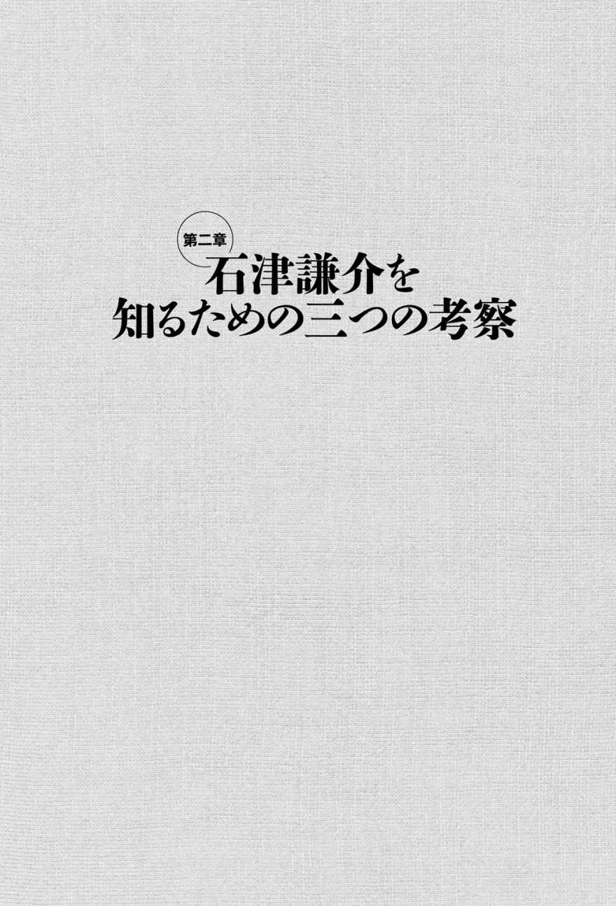
石津謙介が遺した最大の遺産は、ファッションとしての「アイビー」であり、その象徴である「ボタンダウン・シャツ」であった。本書では、この二つの言葉が、キーワードのように随時出現する。本節では、アイビーについて改めて総括し、「ボタンダウン・シャツ」に関しては、次節「考察その二」で詳説する。
言うまでもなく、アイビーとは植物の「蔦 」の英語名「ｉｖｙ」が語源である。本来は「アイヴィ」と表記すべきであろう。
ファッション用語としての「アイビー」は、植物の蔦とは直接の関係はなく、アメリカ東部の八つの私立大学、「ハーヴァード」（Harvard University一六三六年創立）、「イェール」（Yale University一七〇一年創立）、「ペンシルヴァニア」（University of Pennsylvania一七四〇年創立）、「プリンストン」（Princeton University一七四六年創立）、「コロンビア」（Columbia University一七五六年創立）、「ブラウン」（Brown University一七六四年創立）、「ダートマス」（Dartmouth College一七六九年創立）、「コーネル」（Cornel University一八六五年創立）を指す「アイヴィ・リーグ」（Ivy League）という言葉に由来する（このうちダートマスだけが単科大学であり、他の七校はすべて総合大学である）。
アイヴィ・リーグとは、第一義的に「アメリカ北東部にある、学術的、社会的に高いプレステージを持つ大学のグループ名」（大英百科事典）であり、このように、アイヴィ・リーグという言葉は、現在ではこれら八校の代名詞として使われることが多い。しかし、本来は、これらの八大学間のフットボール・リーグの呼称であった（現在のアイヴィ・リーグは、フットボールを含む三二種目のスポーツ・リーグに成長している）。
これらの大学は、その創立年を見てもわかるとおり、コーネルを除き、すべて一七七六年のアメリカ建国以前に開校した、歴史と伝統を誇る私立大学である。煉瓦造りの校舎やドミトリーには蔦が絡まり、アカデミックな佇まいとともに、その伝統を誇示している。
「アイヴィ・リーグ」という言葉が、いつ誰によって作られたかに関しては諸説がある。
一九三七年から一七年間、ダートマス・カレッジのスポーツ・ディレクターを務めたウイリアム・Ｈ・マッカーター（Wiliam. H. McCarter）が、一九五四年に著した『アイヴィ・リーグ・フットボール・ガイド』（Ivy League Football Guide）によると、「アイヴィ・リーグ」という言葉は、一九三七年、ニューヨーク・トリビューン紙の記者キャズウェル・アダムズ（Caswell Adams）のタイプライターから生まれたとしており、これがアイヴィ・リーグの公式見解とされている（ハーヴァード大学のスポーツ連盟などもこの説を採用している）。
ところが、二〇〇一年にペンシルヴァニア大学プレスから出版された、マーク・バーンスタイン（Mark Bernstein）著の『フットボール』（Football: The Ivy League of an American Obsession）によれば、「アイヴィ」という言葉は、一九三三年一〇月、ニューヨーク・ヘラルド・トリビューン紙のスポーツ・ライター、スタンレー・ウッドワード（Stanley Woodward）が、記事の中で、前述の東部八大学に、ウエスト・ポイントと呼ばれる「アメリカ陸軍士官学校」（United States Military Academy at West Point）と、アナポリスと呼ばれる「アメリカ海軍士官学校」（United States Naval Academy at Annapolis）を加えた計一〇校の大学を「アイヴィ・カレッジ」と総称したことを嚆 矢 とし、「アイヴィ・リーグ」という言葉は、一九三五年二月八日に、ＡＰ通信のスポーツ編集者、アラン・グールド（Alan Gould）が最初に使用したとしている。
アイヴィ・リーグの公式ホームページやハーヴァード大学のホームページでは、マッカーター説を採用しているが、最新の調査の成果であり、さらに日付の裏づけがある以上、バーンスタイン説が正しいとみて間違いないであろう。
また、こんな説もある。一九二〇年代、ハーヴァード、イェール、プリンストン、コロンビアの四大学で組織されたフットボール・リーグを「Ⅳ リーグ」と呼んでいた。ローマ数字「Ⅳ」の字面が、アルファベットの「Ｉ」と「Ｖ」に分解できるので、便宜的に「Ｉ Ｖ リーグ」と呼ばれるようになり、その呼称が、蔦の絡まる伝統ある校舎を連想させ、いつの間にか「Ｙ」が加えられて、「IVY」となったという説である。それが定着したという話もあるが、確証はない。
いずれにしても、これら東部八大学の伝統を、学舎に絡まる蔦になぞらえてシンボル化されたのは、一九三〇年代に入ってからのことである。以降、この言葉は、瞬く間に、あらゆる媒体で使用されるようになり、ついには、前記八大学を総称する代名詞として使用されるようになった。
また、同八大学の学生（アンダー・グラデュエイツ）ならびに卒業生（グラデュエイツ）は、「アイヴィ・リーガー」（Ivy Leaguer）と呼ばれるようになり、さらに、アイヴィ・リーガーは、アメリカの政界・財界に君臨する東部のエスタブリッシュメントたちの代名詞として使用されるようになった。ちなみに、前記八校の協議により、アイヴィ・リーグが八校間のスポーツ・リーグの公式名称とされたのは一九五四年のことである。
かつてのアイヴィ・リーグの学生たちは、ほとんどが東部のエスタブリッシュメント、つまり、社会的地位が高く、かつ裕福な家庭の子弟であった。彼らは、ヨーロッパの貴族の子弟たちが見聞を深めるため、欧州諸国を巡った「グランド・ツアー」に倣 って、休暇を海外で過ごすことが多く、その滞在先は多くが英国であった。また、彼らは、在学中にオックスフォード大学やケンブリッジ大学などに留学することが多々あったこともあり、彼らは英国の学生ファッションに大きく影響を受け、帰国時には英国のファッション・アイテムをアメリカに持ち帰った。
彼らがもたらしたイギリスの先端的ファッションは、他の大学の学生たちにも飛び火し、アイヴィ・リーグは、ファッションの世界でもリーダーとなった。『エスクァイア』や『メンズ・ウェア』など、当時の男性誌がアイヴィ・リーグの学生ファッションに関した記事を多く掲載していることからもわかる。
この「アイヴィ・リーグの学生ファッション」を、後に「アイビー」として、日本のファッション文化を築き上げた大先達が石津謙介であった。
本書では、前述の八大学とアメリカのファッション用語に関しては「アイヴィ」、日本におけるファッション用語は「アイビー」と表記する。
石津とアイヴィとの出合いは、終戦直後の中国・天津であった。
当時、石津は、戦時下物資統制のため家業の紙問屋の経営が立ち行かず、旧友・大川照雄（後のヴァン・ヂャケット専務取締役）の兄が天津で経営していた服飾商社の大川洋行に勤務していた。しかし、戦況不利を予見し、大川洋行はカネボウに売却される。そんななか、語学堪能の石津は志願して海軍武官府付となり、敵産管理および海軍付第一工場の総務部長となっていた。
終戦時、工場長代理でもあった石津は、中国側による海軍府に秘匿されていた膨大な真珠の接収の混乱に際し、何度も牢舎につながれる身となったが、海軍府の身代金提供で救出された。
その後、米軍が天津に進駐。英語のできる石津は、米軍憲兵隊「Ｇ２」という組織に所属することになるのだが、またもや真珠の一件で中国側に拘束されてしまう。そのことを石津は、
「とにかく工場にいろんなやつが入れ代わり立ち代わりやってきて（真珠を）持っていってしまう。共産軍も来れば国府軍も来る。ナントカ・ゲリラなんてヤツも来て、こちらはもう、誰が誰やらさっぱりわからない。接収、接収といって持ってっちゃうわけだから、こちらはもう誰でもいいやって心境でいい加減にあしらっていた。問題なのは、そういう連中がやってくるたびにボクは連行される......もう真珠はないっていってもわからない。こんなことでは、この後この後、新しい部隊が来るたびにとっつかまってきりがない」
と語っている（『石津謙介オール・カタログ』講談社刊）。
この状況を打開してくれたのが米軍憲兵隊のオブライエン中尉であった。
「（牢舎の）ドアを足で蹴破って、二丁拳銃で現れたその姿は、さながら西部劇を見るような感激的シーンだった。そしてこのオブライエン中尉との出会いが、実はボクのアイビーとの出会いだった」（前掲書）。
それ以降、石津は、オブライエンと親しくなり、プリンストン大学出身の彼から、大学生活など、アイヴィ・リーグに関してのさまざまなことを聞くことになる。が、石津は、オブライエンの正式な名は覚えていないという。そして、引揚げのドサクサの中、オブライエンのこともアイヴィ・リーグのことも、次第に記憶から遠ざかっていく。
引き揚げて焦土と化した故郷の岡山に戻った石津は、家業の復興を断念。一年ほどの浪人生活の後、誘われて大阪のレナウンに入社した。石津は、マーケット・リサーチのためのパイロット・ショップであるレナウン・サービス・ステーションを立ち上げ、営業部長となる。同社の副社長には、旧友の大川照雄がすでに就任していた。
その後、石津はレナウン研究室に転出するも、大会社に属するのを潔しとせず、同僚の高木一憲（後のヴァン・ヂャケット常務取締役）とともにレナウンを退職、石津商店を立ち上げて独立を果たす。
さらに、昭和二六（一九五一年）、石津商店を「ＶＡＮ」と改称し、ここに新しい伝説が誕生する。
当初のＶＡＮは、英国式の高級紳士服を製造販売していた。これは、石津の、国際都市天津で体得した「男の正しい服装は伝統的な英国式のものである」という強い観念が反映されていた。が、当時の日本は、既製品は「吊るし」と称されて軽蔑され、腰弁と揶揄された一般サラリーマンでさえ、年に一、二着はオーダーで背広を作るのが当然という時代であった。
そこで、石津は、販路を広げるために、奇策を用いた。終戦時、天津で偶然出会った俳優座の信 欣 三 と再び巡り会ったのを機に、石津は、彼をはじめ、俳優座のメンバーたちを大阪のＶＡＮに招待し、集まった俳優たちに商品を「出世払い」と称して提供した。私の親しい俳優座の長老女優、川上夏代は、当時のことを思い出して、
「当時のＶＡＮには千 田 是 也 先生をはじめ、そうそうたる俳優さんたちが集まって、一種独特のサロン的雰囲気をかもし出していたのよ。俳優たちは、それぞれに背広やジャンパーを勝手に持ち出して......。私も、モルちゃんと呼ばれて、小さなサイズの洋服をたくさんもらったの」
と語っている（川上夏代は平成一八年に他界。合掌）。
その後、俳優座のみではなく、文学座、民藝、青年座の俳優たちが集まるようになり、石津家は、「いつの間にか大阪の新劇クラブのようになってしまった」（前掲書）。
石津家に集まった俳優を少し挙げるだけでも、東野英治郎、小沢栄太郎、芦田伸介、滝沢修、宇野重吉など、当時の人気俳優の面々ばかりである。そう、彼らがＶＡＮの歩く宣伝塔となったのである。さらには、石津と婦人画報の熊井戸龍雄の手によって、『婦人画報』誌の増刊として誕生した『男の服飾讀本』（昭和二九〈一九五四〉年刊。後の『メンズ・クラブ』）の誌面によって、ＶＡＮの知名度は上がっていった（石津は、俳優たちとのつながりから、菅原文太、高倉健、仲代達矢など、当時の若手俳優をモデルに起用している）。
とはいえ、先にも述べたように、当時の日本では既製品は相変わらず「吊るし」であり、ＶＡＮの売り上げも自ら限度があったため、石津は、常日頃から新しいプロジェクトを模索していた。
石津は、レナウン時代に培った研究心で、さまざまな分野から資料を集め、研究を始めた。当時の日本は、何ごともアメリカ式が主流だった。若者のファッションも、アメリカの影響を強く受けていた。しかし、それらは、ファッションといえるものではなく、米兵たちの非番の服装が手本になっていた。アロハ・シャツにジーンズ、ラバー・ソールの靴にサングラスという異様ないでたちの若者たちが街にあふれ、世の顰 蹙 を買っていた。
石津は、そこに目をつけ、マーケット・リサーチを試みた。結果、若者のための真っ当なファッションが市場に存在していないことに気づいたのである。石津は、新生ＶＡＮのターゲットを若者にしぼった。そして、あらゆるファッション関係の資料を漁った。
第二次大戦後のアメリカは、戦勝ムードで景気も好調、誰もがアメリカン・ドリームの実現を確信していた。そのため、メンズ・ファッションも、何もかも大振りで、生地も多用されたボールド・ルックやハリウッド・ルックが流行の中心となった。
しかし、一九五〇年代を迎え、社会が落ち着きを見せるとともに、ファッションもまた、伝統回帰に向かった。「（アメリカ国民が）グレイのフラノの新しい制服を着始めたのもその反映のひとつだった」と『エスクァイア』誌が指摘したのは一九五三年であった。
アメリカで、ステイタスのある男性を表す言葉に、「グレイ・フランネルのスーツを着た男」（Man in the gray flannel suits）という言葉がある。育ちがよく、高い教育を受けた「社会の実力者」という意味を持つ。グレイのフランネル、つまりフラノ地で仕立てた三つ揃いのスーツが、アメリカでは成功者のシンボルとされていた。一九五〇年に出版された、スローン・ウィルソンの小説『グレイ・フランネルのスーツを着た男』は一躍ベストセラーとなり、一九五六年には、グレゴリー・ペック主演で映画化されている。
このグレイ・フランネルのスーツに代表されるファッションこそが「アイヴィ・リーグ・ルック」であった（『エスクァイア』）。
ファッションとしての「アイヴィ・リーグ・ルック」は、瞬くうちに全米を席巻した。『エスクァイア』、『ジェントルメンズ・クォータリー』（ＧＱ）、『メンズ・ウェア』などの雑誌はアイヴィ・リーグ・ルックの記事で埋め尽くされた。
これらの資料を眺めていた石津は、天津時代に会ったオブライエン中尉と、彼が語ったプリンストン大学でのキャンパス・ライフの細々を明瞭に思い出し、新生ＶＡＮの進むべき道はアイヴィ・リーグ・ルックだと確信した。
当時のアメリカのアイヴィ・リーグ・ルックは、後に石津が〝アイビーの総本山〟と称した「ブルックス・ブラザーズ」のナンバー・ワン・サック・スーツのようにきわめてステイタスの高いものであり、若者のための新しいファッションを模索する石津の考えとの間には大きなギャップがあった。
石津は、改めて古い資料からキャンパス・ファッションの研究を始めた。あるとき、一九三〇年代のメンズ・ウェア誌の中に、プリンストン大学で生まれ、東部の大学で人気者となった「ビア・ジャケット」（Beer Jacket）という記事が目に留まった。
石津の目は、掲載写真に釘付けとなった。肩幅が狭く寸胴で、とても着易そうなジャケット。
石津は、自身の目指すファッションはこれ、つまり、アメリカのキャンパス・ウェアだと確信した。
時代が石津を追いかけたのだろうか、本家アメリカのアイヴィ・リーグ・ルックにも変化が見られるようになった。ブルックス・ブラザーズに代表される、いわゆる大人の伝統的なトラディショナル・ルックから、よりライトなキャンパス・ウェアに近いものに進化していったのである。
一九五八年には、ＩＡＣＤ（国際紳士服デザイナーズ協会）がトラディショナル・アイビー・モデルを発表、パターンが確定する。デザインはナチュラル・ショルダー（パッドを入れない狭い肩）、ストレート・ハンギング（ウエストに絞りを入れない寸胴型）。まさに、石津が考えていたビア・ジャケットの再来であった。
石津に躊躇はなかった。翌年の一九五九年、ついにＶＡＮ製の「アイビー・スーツ」が誕生する。
石津が新生ＶＡＮのターゲットを若者に絞った理由は、先にも述べたとおり、若者のための真っ当なファッションが市場に存在していないことに加え、彼らには、「吊るしは安物」という既成概念が存在しないことにあった。
石津は、「私は流行を作らない」という言葉を、おりに触れて述べている。
昭和四〇（一九六五）年五月二三日刊の『週刊読売』では、
「......いまのわたしのキャッチフレーズは『流行を作らない』ということなんです。ひょいひょいと、つぎからつぎへと流行を出して、前のものは古いと思わせるのが商売の手なんですが、そこを反省しまして......日本の繊維メーカーの設備はご承知のとおりたいへんなもので、黙ってもいま一日に、そうですね、三〇〇トンの糸ができてしまう、糸ができればしょうがないから......きれをつくって、服つくらなきゃならない。ところが、どっこい、買うほうにすれば、これだけ衣料事情がよくなると、買うものがないんですよ。ほしいものがない。ですから、これが流行だと言いたてて、前のものを着せないようにする。これが流行づくりなんですね」（近藤日出造対談「やァこんにちは」）
石津の頭の中には、ひとつの構想があった。若者をターゲットとする場合、第一に安価であることが絶対条件となる。これは大量生産することで可能となるが、同じ商品を大量に生産すれば、当然のごとく在庫リスクが増える。これを回避するには、同じ商品が何シーズンでも同じように売れなければならないということになる。つまり、流行を追えば、商品開発に膨大な時間や費用がかかり、これは直ちに商品の値段に影響を与える。
そこで石津はひとつの結論を出した。
「顧客のターゲットが学生ならば、生産者、つまりＶＡＮが学校になればいいじゃないか......」
学校には、毎年新入生が入ってくる。つまり、ＶＡＮが学校である以上、顧客も毎年リニューアルされる。その顧客、つまり新入生は、新しい制服を調えることになる。さらに、学生には教科書が必要だ。それならばＶＡＮ学校も教科書を作ればいい。「流行を作らない」という言葉も、逆説的で面白いかもしれない......ただし、アイヴィは字面も悪く発音しにくい。そうだ、ＶＡＮが作るのはアイヴィではなく、アイビーにしよう。
石津はさらに、もうひとつ大胆な構想を持っていた。それは、メンズ・ファッションのすべてのアイテムをひとつのブランド、つまりＶＡＮブランドで商品をすべて体系的に網羅するＶＡＮショップで販売することであった。
当時の服飾流通のシステムのほとんどは一社一アイテム、つまり背広メーカーは背広を、シャツ・メーカーはシャツを、ネクタイ・メーカーはネクタイを作って、それらを、問屋を通して小売店に卸し、消費者に販売するというものだった。つまり、互いに横の連絡はほとんどないに等しい状態だった。また当時は、メーカーが直接消費者に販売することも他の分野の商品を扱うことも、タブー視されていた。今でこそ、ひとつのブランドで関連商品を扱うことは当然視されているが、当時の石津の考え方は、既存の服飾流通システムから問屋（卸売り業）を排除するという、既存のシステムを根本的に破壊する、まさに横紙破りの構想であった。
石津は、衣料品関係はＶＡＮブランドで、自社にノウハウのないものはダブル・チョップ（今でいうＯＥＭ、他社との共同開発ブランド）で商品を構成することにした。たとえば、革靴は日本製靴と組んで「ヴァン・リーガル」を、スニーカーは月星化成と、サングラスは山本防塵眼鏡という具合である。
石津の思いは的中した。
「ＶＡＮのアイビー」は、瞬く間に若者の間で評判となり、ＶＡＮショップの店員はＶＡＮ学校の教員となった。そして先輩顧客は新入顧客の教師となった。こうして、石津の思惑どおり、ＶＡＮは、まさに学校となった。
次は教科書の作成だ。
石津は、自身で発刊を手がけた、初期ＶＡＮの頃からなじみの『男の服飾』誌で、本名の石津謙介の他、江須快也（エスクァイアのもじり）、四谷海男（四谷怪談のもじり）などのペンネームを駆使し、アイビーをおおいに語ることになる。同誌昭和二九（一九五四）年の創刊号では、
「アイヴィー・リーグ・モデル（Ivy League Model）......英語。ブルックス・ブラザース・モデルともいう。アメリカの尖端的な流行型の一つで、東部の大学生や卒業生に支持者が多いので、俗にユニヴァーシティー・モデル（大学型）とも呼ばれる。ストレート・ハンギングで肩は狭めでパッドなしかきわめて少量という極端な自然肩、上衣は三つボタンか四つで、二つボタンはない。ズボンはかすかにテーパーして細め、プリートなしが普通。尖端的ではあるが狙いは濃厚な保守趣味で、この点で同様に尖端的なハリウッド・モデルとは対照的。現在のアメリカ流行型の両極を形造っている。アメリカでもマディスン・アヴェニュの服装などといわれるほど都会的なもの」
と、いち早くアイビー・ルックを紹介、アメリカの大学生活を特集している。さらに、昭和三一（一九五六）年の第九号では、アイビー・ルックを特集している。
いつしか、『男の服飾』は、サブタイトルだった「メンズ・クラブ」がメインタイトルとなり、石津子飼いの林田昭慶（名著『TAKE IVY』の撮影者）が表紙写真を飾った。かつて同誌で写真の人着（モノクロの写真を手で着色すること）のアルバイトをしていた穂積和夫と小林泰彦はイラストレーションを、石津の長男祥介、黒 須 敏 之 などが記事をそれぞれ担当した。第一四号（昭和三四〈一九五九〉年）では、第一回目のアイビー座談会を掲載（「アイビー・リーガースおおいに語る」）、第三三号（昭和三八〈一九六三〉年）のアイビー特集号を最後に国際版に移行（昭和四〇〈一九六五〉年）、以降、表四（裏表紙）のシンプルなＶＡＮのロゴとともに、名実ともにアイビーの教科書、バイブルとなっていった。
こうして石津が作り上げた「アイビー」は、途中、「みゆき族」や「アイビー族」などの仇花を生み出しつつ、若者の制服の地位を保っていたが、情報の多様化、ヒッピー・ブームやウエスト・コースト・ブームなどの影響で、その影響力は徐々に低下していった。そして、昭和五三（一九七八）年四月六日、青天の霹靂のごとくＶＡＮの倒産......。
アイビー人気の凋落の理由はさまざま考えられるが、そのひとつは、先にも述べたように「時代の変化」であった。ヒッピー文化やフラワー・ムーヴメントは根本的にアイビーの考え方とは異質のものであった。次に迎えた西海岸ブームは、東部のエスタブリッシュメントに対するカウンター・カルチャーであった。そこで批判の対象になった東部のエスタブリッシュメント文化こそが、まさにアイヴィであった。
しかし、最大の理由は、実は教科書にあった。
ＶＡＮがアイビーを立ち上げた昭和三〇年代の若者たちにとって、ファッションは一種のおもちゃであった。若者たちは、それらの新しいおもちゃを思うがままに弄び、まさにファッション無法地帯とでもいえる状況にあった。つまり、何をどう着ればよいのか、誰も教えてくれる人が存在しなかった。そこで、石津は教科書を作った。『メンズ・クラブ』である。石津をはじめ、執筆者は、初心者には頭ごなしに「これしかない」という教え方が必要だと考えた。あの有名な「でなければならぬ」や「であらねばならぬ」式の記事が登場した背景がここにある。
このスーツにはこのシャツ、このシャツにはこのタイ、靴下はこれ、靴はこれでなければならぬ......といった記事は、読者にすんなりと受け入れられていく。
しかし、これらの規定は、単なる教科書からバイブルと化し、教条主義を生み出す結果となった。それらの教条主義は、いつしか、アイビーの変化を一切認めない、思考停止型「アイビー教原理主義者」を大量に生産することになってしまったのである。
アメリカでのアイヴィ・リーグ・ルックは、基本的に流行であった。一九五〇年代初頭に起こったブームは、五〇年代とともに消滅してしまった。もちろん、伝統的かつ保守的なファッションは、現在もなお健在であるが、それらは長い伝統に培われた上に立脚した文化であり、流行はいつまでも継続することはない。
一九七〇年代に入ると、アイヴィ・リーグのキャンパスは、ロング・ヘア、ベルボトムのヒッピーまがいの学生が闊歩するようになる。それに呼応するように、日本の若者も同様のファッションでキャンパスを闊歩する。そのような社会背景の中、硬直した日本のアイビーが、一部原理主義者を除いて凋落するのは目に見えていた。いずれは消滅するようにも思えた。
一九七五年、ベトナム戦争が終結すると、アメリカは再び落ち着きを取り戻し、翌一九七六年のアメリカ建国二〇〇年を迎え、再び伝統回帰に向かう。そして、一九八〇年、一冊の本がアメリカの伝統回帰を決定づけることになる。本の名は『オフィシャル・プレッピー・ハンドブック』（Official Preppie Handbook）。
プレッピーとは、プレパラトリー・スクール、有名大学への入学を目指すための私立のボーディング・スクールの生徒のことで、アイヴィ・リーガーの予備軍を指す。
日本では、ジョーク・ブックの一種として顧みられなかったが、アメリカでは数百万部のベスト・セラーとなった。単なるジョーク・ブックがそのように売れるわけがない。アメリカの人々は、同書を通じて、第二次大戦で中断してしまった、衣食住における古きよき時代のアメリカ文化の伝統を再認識したのである。
この本によって、ファッションの伝統回帰も確定的になった。
アメリカのファッションは、それ以降、アイヴィ・リーグ・ルックの衣鉢を受け継ぐトラディショナル（伝統的な）・ルックがひとつのバックボーンとなった。アイヴィ・リーグ・ルックの源流ともいえる英国式ファッションからニュー・トラディショナルと呼ばれる折衷スタイルも貪欲に飲み込み、ラルフ・ローレン、アラン・フラッサー、ジェフリー・バンクスなど、新しいデザイナーも誕生し、現在に至っている。
そのような状況の中、消滅するかに見えた日本のアイビーが再び立ち上がった。
昭和三〇年代にアイビーを知り、啓蒙したアイビー第一世代に触発され、『メンズ・クラブ』などでアイビー・スピリットを叩き込まれたアイビー第二世代（私もこの世代に属している）が、いよいよ社会で中核の地位を占める時代になっていた。
前章でも触れたが、奇しくもＶＡＮ倒産の翌年、昭和五四（一九七九）年、私は講談社の若者向け新雑誌の創刊に立ち会うこととなった。『ホットドッグ・プレス』と命名、同誌ファッション部門を担当することになった。
当時のファッションの中心はアメリカ西海岸スタイルであり、アウトドア・ファッションもまた主流のひとつとなっていた。しかし、西海岸ブームも二年ほどで下火になり、次に何をやるかを模索していた私は、漠然とアイビーのことを考えていた。アイビー第二世代の私にとって、アイビーはファッションの代名詞であり、正直に言ってそれ以外にはないとの確信を持っていた。『ホットドッグ・プレス』の読者層は高校生から大学生、彼らは六〇年代のアイビー・ブームは知らないはずだ。
『ホットドッグ・プレス』のファッションはアイビー路線と決定した。が、かつての『メンズ・クラブ』のような教条主義には陥りたくなかった。しかし、なんらかのコアというか、柱になるものがほしかった。
当然というべきか、そこで私が白羽の矢を立てたのが石津だった。当時、同誌の編集長であった内田勝とともに石津と会い、新しいスタイルのアイビーを新雑誌『ホットドッグ・プレス』が提唱するファッションのコアとしたい、ついては、すべての面で監修をしていただきたいと依頼した。その場で快諾を得、新しいスタイルのアイビーを「ニュー・アイビー」とすることが決まった。その成果は、「石津謙介のニュー・アイビー教科書」のタイトルで、昭和五七（一九八二）年一月二五日号の特集として発売され、同誌発刊以来最大の発行売部数を数えた。
同特集で、石津は、ニュー・アイビーについて次のように定義している。
「アイビーとは、いうまでもなくライフ・スタイルのことだ。しかし、それとは別にファッションとしてのアイビーがある。この２つのアイビーは、まったく別の次元で考えるもので、両方イコールと考えてしまうと、〝......であらねばならぬ〟式の堅苦しい方程式になって、ファッションを自由に楽しめなくなる。必要最低限のルールと伝統を尊重した上で、自分のポリシーを生かす、というのが私のいう〝ニュー・アイビー〟なのだ」
このように、石津は明確に教条主義の排除を宣言したのであった。
以降、ニュー・アイビー路線は『ホットドッグ・プレス』のファッション記事のコアとなり、多くの読者の賛同を得、続々と、各地にアイビー・クラブが結成された。
私の思惑は当たり、アイビーは見事に復活した。
アイビー復活にはもうひとつの理由があった。それは、倒産以後の、ＶＡＮの遺した四〇〇億とも、五〇〇億円ともいわれる大きな市場の争奪戦にあった。既存のトラッド・メーカーにとっても、また他分野のメーカーにとっても、ＶＡＮが遺した巨大マーケットは垂涎の的であった。同時に、雑誌媒体がアイビー復活をほのめかすとなれば、既存のメーカーに加えて、多くのメーカーがアイビー市場に参入することは必然的であった。そして、それらの動きは、アイビー、トラッドの分野の多様化を促す効果を与えることとなった。
しかし、この第三次アイビー・ブームは長く続かなかった。
理由は、第二次のときと同じく、情報の多様化によるファッションの多様化にあった。しかし、最大の理由は、婦人服メーカーのアイビー・トラッド市場への参入にあった。
以前から女性用のアイビー・トラッド市場は存在した。しかし、市場といっても、ごく少数の愛好者に向けられた小さな市場であった。ところが、ポストＶＡＮとして市場に参入したメーカーの中には婦人服メーカーや婦人服部門を持つ大手繊維商社もあった。本来は、男性に限られていたアイビー・トラッド・アイテムを女性用に広げ、大々的にキャンペーンを繰り広げた。女性用のアイビー商品を体系的に展開したのである。
当初この企画は、女性にとってまったく新しいアイテムとして成功したが、あっという間にブームは去ってしまった。
その理由は、男性と女性とのファッションの受け止め方にある。男性は、いわゆる「能書き」を好む。日本におけるアイビーは、男性にとって「であらねばならぬ」というこだわりや能書きの連続で、そこに流行という概念の入る余地は存在しなかった。ところが、女性にとって、ファッションは単なる流行に過ぎず、アイビーもまた一瞬の流行として、次の流行へ移行してしまったのである。つまり、女性が男性にかける言葉は、「あなた、まだアイビーなんか着てるの！ 遅れてるわねえ」ということになる。
受け手側の男性にとって、アイビーはいつの間にかファッション史の一部分となってしまったのである。
これが、第三次アイビー・ブーム終焉の真相である。
平成一八（二〇〇六）年七月、創刊五〇年を迎えた『メンズ・クラブ』のリニューアルされた誌面には、「すべての原点はTAKE IVY」「ボタンダウン・シャツ着まくりガイド」「街のアイビーリーガース」「カバーモデルが行く名門アイビーリーグ校」という言葉が踊っている。そういえば、第三次アイビー・ブームの申し子たちが、そろそろ社会の中核を占めるようになっている......。
また、本家アメリカでもひとつの動きが見えている。二〇〇六年八月、米誌『ニューズウィーク』（News Week）のインターネット版は、同誌が評価した「世界一〇〇大グローバル大学リスト」（The Complete List: The Top 100 Global Universities）を発表した。一位には米ハーヴァード大、二位はスタンフォード大、三位はイェール大がそれぞれ占め、ダートマス大学以外のアイヴィ大学もすべてランク入りしている（ダートマスは単科大学なのでこの範疇から除外されている）。また、同誌八月二一日～二八日号は、アメリカの入試競争が過熱化し、伝統的なアイヴィ八校以外に学生たちが入学を希望する新しい名門大学が増えたと伝えた。同誌は、UCLA、ノース・キャロライナ大学、ボストン・カレッジ、ワシントン大学など、新興エリート養成大学を二五校選出し、「ニュー・アイヴィ」（New Ivies）と名付けており、アメリカでの、アイヴィという名の重さとともに、再びアイビー・ファッションの浮上する予感を与えている......。
さて、泉下の石津は、この状況をどのように眺めているのだろうか？
「ハーヴァード大学の板坂元先生の研究室で面白い話を聞いてね」
各地のアイビー・クラブに招かれて、若者たちにアイビーに関する話をするとき、石津は冒頭にこの話を持ち出すことが多かった。
「アイビーってのは、言うまでもないけど蔦のこと。ボクの家も垣根から家の壁まで、見事に蔦に覆われていて、門扉の上には、ボクの手作りの『IVY HOUSE』というプレートがぶら下がっている。
アメリカ東部の八つの私立大学をアイビー・リーグと呼ぶことはご存知だと思うが、これは、卒業生が記念に植えた蔦が校舎やドミトリーを覆って、いかにも歴史を語るように見えることから、そう呼ばれるという説もある。
ところで、ハーヴァード大学で、この蔦に関する問題が起こっているとの板坂先生の話に興味をそそられて質してみると次のような答えが返ってきた。
『蔦というのは、非常に丈夫というか、強い植物なんですね。で、その気根が建物の隙間に深く入り込んでしまう。ご覧いただいてもおわかりになるでしょうけれど、キャンパスの中には、三〇〇年以上の歴史を持つ建築物も多く、それらの煉瓦の外壁を覆う蔦の気根がその間に入りこんで建物をひどく傷めるわけです。特にアメリカ原産の蔦はその精すこぶる強く、建物の傷みが激しくなってきた。そこで、大学の理事たちが会合を開いてその対策を考えたのですが、いっそうのこと、蔦をすべて取り払ってしまえなんて過激な発言も出る始末で、なかなかまとまらない。
そこで蔦の専門家を呼んで話を聞いてみると、日本産の〝ジャパニーズ・アイビー〟というのが、その精も穏やかで建物を傷めないとわかったので、順次、ジャパニーズ・アイビーに植え替えたのです。ところが、気候風土のせいなのか、穏やかなはずのジャパニーズ・アイビーが、それまでのアイビー同様、気根が発達して、建物を傷めるようになってしまったのですね。
そこで、また理事会が開かれて、新たな対策が練られたのです。そこで、卒業生がアイビーを植える習慣を調べたところ、その発祥はハーヴァードではなく、実はプリンストンだということがわかった。歴史にしろ、学問にしろ、全米一、いや世界一と自負しているハーヴァードの理事たちは、それを聞いて鼻白み、一瞬にして蔦に対する情熱を失ってしまった。まさに竜頭蛇尾の結末で、それ以降、蔦に関する理事会は開かれることもなく、また、蔦も切られることもなく、現在に至っているのです。いずれにせよ、全米最古を誇るハーヴァードの歴史を物語るアイビー、つまり蔦がジャパニーズ・アイビーだというのは、実に面白い話じゃありませんか』」
私は、対談する二人の横でノートを取り、撮影していたので、この話ははっきり覚えている。この話で対談は活気づき、話題はファッションからポルノまで縦横に飛び交い、実に楽しい対談であった。
その後、学生たちに混じって臨時の聴講生となり、板坂先生の「日本の家元制度」に関する講義を聞いた。続けて、板坂先生ご愛用のメンズ・ショップ「クリムゾン」を覗き、ハーヴァードの学生紙『ハーバード・クリムゾン』の編集部を訪ねた後、生協に寄り、「燕京」で北京料理の夕食をとるという、楽しく充実した一日であった。
後日、石津とアイヴィ・リーグ八校を巡ったとき、プリンストン大学のドミトリーのレンガ造りの外壁に、「19XX IVY」と記されたプレートが嵌められているのを見つけ、二人で顔を見合わせ、「あ、これか！」と互いにうなずいたことを昨日のことのように鮮明に覚えている。
昭和五四（一九七九）年の春、オイル・ショック直後の省エネルギー対策として、「冷房温度は二八度に保ちましょう」という政策が打ち出された。当時の総理大臣、大平正芳が陣頭に立ち、「省エネ」という言葉を生み出し、さらには「省エネ・ルック」なる珍奇なファッションを提唱、ノー・ネクタイ、半袖の背広という、なんとも不思議な服が登場した。
このような単なる思いつきから誕生した、政府主導の陳腐なキャンペーンが定着する道理はなく、鐘と太鼓の鳴り物入りで登場した「省エネ・スーツ」が売れたのはたった五着（伊勢丹調べ）。翌年には早くも消滅してしまった。
時は移り、平成一七（二〇〇五）年の夏、日本の男性は再び、「クールビズ」というわけのわからない騒動に巻き込まれることになった。地球温暖化防止、省エネルギー対策のため、再度お上から、日本の男はすべからく上着を廃し、ネクタイを外せ、とのお触れが出たのである。
そして、今回のクールビズもまた、とりあえずは政界からスタートした。しかし、今回は少々様相が違った。というのは、「省エネ・ルック」の頃の提唱者は、ファッションの何たるかを心得ぬ年配者であり、ファッションのセオリーもルールも無視した妙なウェアのキャンペーンに対して、その対象者たる一般男性は拒否感を示したのだが、今回は、主導者も対象者も世代交代し、自身が何を着るべきかを理解できる時代となっていたからである。
そのクールビズ・キャンペーンで脚光を浴びたのがボタンダウン・シャツであり、一時は襟先を留めるための直径九ミリのボタンが不足するという事態となり、生産が間に合わないというような騒ぎとなった。そして、その主導者こそ、〝ボタンダウン宰相〟小泉純一郎であった。
史上初めてボタンダウン・シャツを着て国会に登院した首相は橋本龍太郎である。そして、二代目が小泉純一郎ということになる。
小泉が初めてボタンダウン姿を披露したのは、訪米して、ブッシュ大統領とキャッチボールをしたときに見せた、ブルーのものであった。ブランドは「ポロ・ラルフ・ローレン」。
しかし、これはあくまでもオフの写真であり、実際にボタンダウン姿で登院したのは、クールビズ発表以降のことである。いずれにしても、かつて不良の制服とまでいわれたボタンダウン・シャツを着た宰相が日本に誕生するとは、誰も考えることができなかった時代が、確実にあった。
石津謙介がファッションの世界に遺した最大の遺産は、先に示したアイビーの導入と、その象徴である「ボタンダウン・シャツ」の、日本のメンズ・ファッションの世界への浸透と普遍化であった。
一九五〇年代にアメリカを席巻した〝流行〟としてのアイヴィ・リーグ・ルックは、一九六〇年代初頭にはすでに下火になっていた。
しかし、アイヴィの聖地・東部のエスタブリッシュメントたちは、当時の流行とは無関係に、ブルックス・ブラザーズに代表される、伝統的かつ保守的なファッションを身につけており、それらのファッションは「トラディショナル・クロージング」と呼ばれていた。
では、日本で往々にアイビーの別称として使用される「トラディショナル」や「トラッド」という概念はいかなるものなのか？
アメリカは一七七六年に建国された非常に若い国である。その歴史の浅さゆえに、アメリカ人たちは「伝統」（tradition）という言葉を非常に重く受け止め、さまざまな分野で「伝統的な」（traditional）あるいは「正統的な」（Authentic）という言葉を多用する。彼らにとっての伝統とは、アメリカ建国に携わった人々の子孫であるアメリカ東部のエスタブリッシュメントたちの属性が「ＷＡＳＰ」（White Anglo-Saxon Protestantアングロ・サクソン、つまり英国系の白人であり、プロテスタント、つまり新教徒である人々）という言葉で表されていることでもわかるように、「祖国英国の伝統」であった。ファッションもまた、それに倣 い、英国の伝統を重んじる風潮があった。
「ザッコー」（Sakkos）と呼ばれた現在の背広の原型が誕生したのは、一八三〇年代のドイツであった。このザッコーが一八五〇年代に英国に移入されて「ラウンジ・スーツ」（Lounge suits）として洗練された。さらに一八七〇年代に、このラウンジ・スーツがアメリカに移入され、アメリカ式に合理的な「サック・スーツ」（Sack suits）としてアメリカのビジネス・ウェアのスタンダードとして定着した。このサック・スーツがアメリカの男性ファッションの伝統として、いわゆるアメリカン・トラッドの原型となった。
石津が〝トラッドの総本山〟と呼んだブルックス・ブラザーズのもっともベーシックなモデルが「ナンバー・ワン・サック・スーツ」と呼ばれるのもそのためである。
つまり、流行としての「アイヴィ・リーグ・ルック」が出現しようと、それに対抗する「コンチネンタル・モデル」が台頭しようと、それらのファッションの流れとは別に、アメリカのメンズ・ファッション界には、伝統に裏打ちされた「トラディショナル」というバックボーンが厳然と存在した。その象徴が「ボタンダウン・シャツ」であり、前節で述べたように、「グレイ・フランネルのスーツを着た男」（Man in the gray flannel suits）とともに、「ボタンダウン・マン」（Button-downed man）という言葉が、育ちがよく、高い教育を受けた「社会の実力者」という意味を持つようになったのである。
そもそも、ボタンダウン・シャツとはいかなるものか？
日本人の常識を支える『広辞苑』には、「シャツ・カラーの一種。折り返した襟先を、身頃にボタンで留めるもの」とある。しかし、これでは何だかよくわからない。それならば、と、他の国語辞典をあたってみたが、該当項目はない。しからば御本家のアメリカでは、と、「AHD」（American Heritage Dictionary of English Language）をひも解いてみると、「Having the ends of the collar fastened down by buttons」、つまり、「先端に（身頃に）留めるためのボタンを持ったカラー」とあり、他の辞書も概ね大体は同じような表記である。
要するに、ボタンダウン・シャツとは、襟先を小さなボタンで、身頃、つまりシャツのボディの部分に留めるスタイルのシャツであり、このボタンダウン・シャツを第二の皮膚のように常に身につけている男性が、すなわち「ボタンダウン・マン」なのである。
このボタンダウン・シャツが、アメリカでなぜ特別の意味を持つかを語る前に、まず、「ブルックス・ブラザーズ」について触れておくべきだろう。
一八一八年（日本では文化一五年が文政元年と改元され、いわゆる化政文化が花開いた頃）四月七日、ヘンリー・サンズ・ブルックス（Henry Sands Brooks）は、ニューヨークのキャサリーンとチェリー・ストリートの北東角に、男性服飾商「Ｈ・アンド・Ｄ・Ｈ・ブルックス商会」（H. & D. H. Brooks & Co.）を開業した。彼の、開業当時からのモットーは「最高の品質の商品のみを製造し、そのような商品を求め、受け入れてくれる顧客に対して販売すること」であった。
一八三三年、創業者ヘンリーの死に伴い、会社は長男のヘンリー二世に引き継がれ、さらに一八五〇年、その息子、ダニエル、ジョン、エリシャの三人に受け継がれ、ここに新生「ブルックス兄弟商会」（Brooks Brothers）が誕生した。
ヘンリーの孫、ジョン・ブルックスは、商用で渡った英国でポロ競技を観戦した際、競技中の選手がシャツのカラーがはためいて顔を打つのを防ぐために、カラーの先をボタンで身頃に留めているのを見て、その商品化を思い立った。
ニューヨークへ帰ったジョンは、さっそくデザインを起こし、商品化を図った。
できあがったシャツの襟型は、その発想の基を記念して「ポロ・カラー」と名づけられた。一八九九年のことである（ブルックス・ブラザーズでは、現在もなお、ボタンダウン・シャツをポロ・カラーと呼んでいる）。
これが、ボタンダウン・シャツ誕生秘話である。つまり、巷間伝えられているように、ジョン・ブルックスは、ボタンダウン・カラーの発明者ではなく、アメリカで初めて商品化した人物である。
「アメリカで」とあえて述べたのは、ジョン・ブルックスが見たポロの選手のシャツがその選手の工夫になるものか、あるいは、そのようなシャツが英国ではすでに市販されていたのか、今となっては知る術がないからである。
ここで確認しておきたいのは、ジョン・ブルックスの手になるボタンダウン・シャツは現在、我々が認識しているボタンダウン・シャツとはイメージが相当異なったものであった点である。
現在、我々が持つボタンダウン・シャツのイメージは、基本的にドレス・シャツ（スーツと合わせ、ネクタイを締めて着るシャツ）だが、初期のボタンダウン・シャツはドレス・シャツではなく、ネグリジェ・シャツと呼ばれるくつろぎ用のシャツであった。
というのは、スティッフド・フロントと呼ばれる当時のドレス・シャツは、単体のシャツではなく、ボディ（立ち襟のシャツ本体）、カラー（付け襟）、カフ（付け袖口）、さらに烏賊 胸と呼ばれるプザム（胸当て）という四つのパートから成立しており、ドレス・シャツのカラーとカフがデタッチャブル（着脱式）で、シャツ本体からは独立した存在であった。つまり、当時のドレス・シャツは、現在のように見頃の襟のついた一枚仕立てのシャツではなかったのである。ちなみに、現在でも、男性の正装であるテイル・コート（燕尾服）にはこのドレス・シャツを着用する。
ジョン・ブルックスの作った最初期のボタンダウン・シャツは、ゆったりした身頃に襟先をボタンで留めた大き目の襟のついたプルオーヴァー（前をボタンで留めるのではなく、頭から被って着るシャツ）であったといわれている。
ドレス・シャツが、現在のように身頃、カラー、カフが一体化した、いわゆる「ソフト・カラー」シャツとして受け入れられるようになったのは、おおよそ一九二〇年代の初頭と考えられている。新しもの好きのアイヴィ・リーグの学生たちは、こぞってソフト・カラー・シャツを着るようになったが、その襟型は「タブ・カラー」（左右の襟に、タブと呼ばれる小さな持ち出しを付け、それをボタンやスナップで留めてタイを持ち上げるスタイル）、もしくは「ピン・ホール・カラー」（襟に小さな穴を開け、そこへ安全ピンに似たピンを差し込んで、タブ・カラーと同じようにタイを持ち上げるスタイル）であり、「ボタンダウン・カラーは、ほとんど見当たらなかった」（『メンズ・ウェア』一九二八年一一月二一日号）。
ところが、翌一九二九年にはボタンダウン・シャツの台頭が報告され、一九三〇年代に突入すると、ボタンダウン・シャツはアイヴィ・リーグの学生たちの制服といわれるような人気を集めるようになった。
ところで、これとは別のボタンダウン・シャツがすでに存在していた。一九〇〇年版の、当時アメリカの最大手通販会社であった「シアーズ・ローバック」のカタログに「ファイアーマンズ・シャツ」（消防士用シャツ）として、襟先をボタンで留めた折り襟のシャツが掲載されている。さらに、ワーク・シャツの一部にも、同様に襟先をボタンで留めたシャツが掲載されているが、どちらにも「ボタンダウン・シャツ」という表示はない。これらのシャツの襟がボタンで留められているのは、なんらかの機能的な要因があったのだろう。しかし、これらのシャツが、ジョン・ブルックスの手になるボタンダウン・シャツとどのような関係にあるのかは不明である。
また、ファッションの世界では、アメリカと両極とされるフランスでもボタンダウン・シャツは好まれている。パリの、たとえばサンジェルマンやレアール辺りのメンズ・ブティックを覗いてみると、いかにもフランスらしい色使いのさまざまなボタンダウン・シャツを目にすることがある。
しかし、これはアメリカの影響ではなく、フランス独自の発展を遂げたものである。フランス映画の巨匠、ルネ・クレールがパリの下町を生きる人々を見事に描いた、一九三〇年の名作『巴里の屋根の下』で、名優アルベール・プレジャン扮する辻音楽士や、周りを取り巻く男たちもボタンダウン・シャツを着ている。この年は、アメリカでボタンダウン・シャツが一躍人気を博した時期と合致するが、映画で着用されていたボタンダウン・シャツは、フランス式の襟の開きの広いウール製で、明らかにアメリカのボタンダウン・シャツとは別物であることがわかる。
このように、ボタンダウン・シャツにはさまざまな流れがあるが、現在我々がボタンダウン・シャツとして認識しているシャツは、一九二〇年中期以降にアメリカで誕生したと考えて間違いはないだろう。そして、最初のボタンダウン・シャツを世に送り出したブルックス・ブラザーズは、以降、現在に至るまでボタンダウン・シャツのスタンダードの座を守り続けている（英国のファッションを基本に、アメリカ独特のアレンジを施したブルックス・ブラザーズの衣服は、創業時からアメリカ有力者たちの支持を得て、アメリカを代表するメンズ・ファッション・メーカーに成長し、歴代の大統領の衣服を調達するようになった。ちなみに、アブラハム・リンカーンが暗殺されたときに着ていたのは、ブルックス・ブラザーズ製のフロック・コートであった）。
当時も今も、アメリカの政治家やトップ・エグゼクティヴたちの多くはアイヴィ・リーグの卒業生である。つまり、ブルックス・ブラザーズの服は、それら有力者の子弟たちのファッションのお手本となっている。そして、ボタンダウン・シャツは一躍、アメリカのメンズ・ファッションのステイタス・シンボルとなり、ついには「パワー・シャツ」（権力者のシャツ）とまで呼ばれるようになったのである。
映画『風とともに去りぬ』で知られる名優クラーク・ゲイブルは、名声を得た後は下着に至るまですべてオーダー・メイドの衣服以外は身につけなかった。その彼が、唯一既製品でなければ身につけなかったのが、まさにブルックス・ブラザーズの「ポロ・カラー」シャツ、つまりボタンダウン・シャツである。
このような伝説はあまり書きたくないのだが、もう一人、ブルックス・ブラザーズのオックスフォード地のボタンダウン・シャツを愛した人物に、『オン・ザ・ロード』や『サブタレイニアンズ』の作品で知られるビート（ビートニック）作家のジャック・ケルーアックがいる。反体制の権化のような彼が、彼がもっとも嫌ったスクウェア（画一的な人物）のユニフォームとでもいうべきボタンダウン・シャツ、それもブルックス・ブラザーズ製のものを愛したというのは、まさにアイロニーである。
とはいえ、アイヴィ・リーガーのすべてがボタンダウン・シャツの愛用者だったわけではない。たとえば、〝アイビーの権化〟〝アイビーの鑑〟として日本のアイビー・フリークから絶大な人気をもつ第三五代大統領ジョン・フィッツジェラルド・ケネディは、意外にもボタンダウン・シャツを着なかった。ケネディはプリンストンとハーヴァード二校に在籍し、ハーヴァードを卒業した、生粋のアイヴィ・リーガーであるにもかかわらず、である。その理由は、彼の出自に求めることができる。ケネディはアイルランド移民の子孫でカソリック信者であり、東部のエスタブリッシュメントの必須のＷＡＳＰという条件を満たしていない。そんなＷＡＳＰへの反発から、彼はＷＡＳＰの制服であるボタンダウン・シャツも三つボタンのスーツも、着用することを潔しとしなかったのである。しかし、同じハーヴァード出身の、弟のロバート・ケネディは、逆に見事なまでのトラッド派であった。
しかし、大半のアイヴィ・リーガーたちは愛校心が強く、その精神はファッション面にも表れ、それぞれの大学の学生や卒業生たちが贔屓にするショップも異なってくる。たとえば、ハーヴァード大学の学生（アンダー・グラデュエイツ）や卒業生（グラデュエイツ）が支持するのはブルックス・ブラザーズ、ハーヴァードと並び称されるイェール大学の学生が支持するのは一九〇二年創業の「Ｊ・プレス」（J Press）であった。
現在でも、ブルックス・ブラザーズとＪ・プレスの製品はボタンダウン・シャツのスタンダードとされており、「アイビーは不変」と考える、日本のアイビー原理主義者の中にはこの神話を後生大事に奉持している人も少なくない。
しかし、不変といわれたブルックス・ブラザーズのボタンダウン・シャツも時代によって少しずつ変化している。たとえば、一九六〇年代の半ば、私が最初に手に入れたブルックス・ブラザーズのボタンダウン・シャツには胸ポケットがなかった。これは、シャツ自体が下着という概念によるものである。その後、胸ポケットが加えられ、また襟の長さも時代によって微妙に変化している。また、同じ頃手に入れたＪ・プレスのボタンダウン・シャツは、襟がブルックス・ブラザーズのものより長く、ネクタイを締めたときの襟のロール（Ｓ・ロールと呼ばれる）がよりはっきりしている。しかし、なによりの違いは、胸にフラップつきのポケットがつき、フラップはボタン留めされていた。
このように、ボタンダウン・シャツに関しては、いわゆるトラッドの双璧といわれるブルックス・ブラザーズとＪ・プレスにしても、目に見えた相違がある。
また、一九三〇年代、ボタンダウン・シャツがファッション・シーンに登場すると、あらゆるシャツ・メーカーがボタンダウン・シャツを作り始めた。そのデザインの基礎となったのはブルックス・ブラザーズのポロ・カラー・シャツではあったが、各メーカーがそれぞれ自社の特長を出すために、ディテイルにこだわり、実にさまざまなボタンダウン・シャツが世に流通した。
しかし、『ＧＱ』や『エスクァイア』誌などで先端の流行として取り上げられたボタンダウン・シャツも、東部のエリートや学生、さらには地方に分散するアイヴィ・リーグ卒業生などには絶大な人気を誇ったが、一般的には一部エリートの制服と見られ、流行の主流とはならなかった。
ボタンダウン・シャツがアメリカで「全国区」として認知されるのは、一九五〇年代に入ってからの「アイヴィ・リーグ・ルック」の人気によるものであった。つまり、今でこそアメリカのメンズ・ファッションの象徴とされるボタンダウン・シャツも、一般男性のドレス・シャツのスタンダードとして市民権を得たのは、実は一九五〇年代初頭以降のことであった。
このあたりで、話は日本に移行する。
ボタンダウン・シャツを初めて日本に紹介したのは、「ヴァン・ヂャケット」（VAN JACKET）の創始者、石津謙介であるという一種の神話がある。多くのメンズ・ファッション誌やＶＡＮ関係の書物にも、そのような記述が多い。私は、そのことを直接石津に質したことがある。
「......昭和二七、八（一九五二、三）年頃だったか、アメリカの男性誌『エスクァイア』や『メンズ・ウェア』などは、おしなべてアイビー・リーグ・ルックで、シャツといえばボタンダウン。ところが、襟先をボタンで留めるのはわかっていても写真ばかりで、だいたい本物のサンプルがないから実体はよくわからない。これに最初に目をつけたのは、考えてみれば当然のことだけど、シャツ屋さんでね。とにかく襟先にボタンをつければいいんだろってんで、襟にボタン・ホールを開けずに、ボタンごと身頃に縫いつけたものや、なかには開襟シャツの襟先にボタンをつけたヤツなんかもあって、ひどいもんだった......」
つまり、ボタンダウン・シャツ石津謙介日本導入説は、やはり神話の一種であった。
前述のとおり、石津がアイビーをＶＡＮに導入する際、ジャケット、パンツ、シャツにいたるまでオウン・ブランドで展開すると決めており、ボタンダウン・シャツもまた「ＶＡＮのボタンダウン・シャツ」でなければならないと考えていた。ＶＡＮのボタンダウン・シャツであるためには、どうしても他のものとの差別化が必要になる。さらに、消費者をひきつける付加価値も必要となる。石津は、差別化と付加価値付与に関して、媒体作戦を敢行した。つまり、自身で立ち上げた『メンズ・クラブ』を筆頭に、さまざまな媒体を利用して徹底的にＶＡＮのボタンダウン・シャツを、アイビーのスタンダードとする作戦をとったのである。
『メンズ・クラブ』に掲載された、正しいボタンダウン・シャツのディテイルとは、ブラケット・フロント（表前立て）、カラーの後正面もボタンで留める。そのボタン・ホールは必ず横に切ってあること。背中のプリーツはセンター・ボックス・プリーツで、その上端には必ずアイビー・ループ（ハンガー・ループ）をつける。ボタンは四つ穴で、糸はクロスがけなどなど。それは、そのままＶＡＮ製のボタンダウン・シャツのディテイルであった。さらに、生地は綿一〇〇パーセントのオックスフォード（縦糸、横糸ともに複数本で織り上げたざっくりとした風合いを持つ生地）、包装はフラット包装（それまでのドレス・シャツの包装は、襟型を崩さないために襟に芯を入れた立体包装で、通常ドレス・シャツは箱に入れて売られていた。石津は襟をプレスしてフラットな状態で、ロゴ入りの透明な袋に入れて販売した。これも、当時としては衝撃的な演出であった）。また、洗濯後に糊をつけない（クリーニングに出すときは「ノー・スターチ」とひと言言おう）など、若者が喜びそうな「こだわり」を随所に含めた。
ここで気になるのは、これらのディテイルがどこからきたのかということである。このようなディテイルは、ブルックス・ブラザーズのボタンダウン・シャツにはない仕様である。もちろんＪ・プレスのものとも明らかに違う。しかし、どこかにそのお手本があるに違いないと、私のワードローブから一九六〇年代初頭のボタンダウン・シャツを探し出し、チェックしてみた。すると、ＶＡＮのボタンダウン・シャツとまさに同じディテイルのものを見つけ出すことができたのである。
そのブランドは「ＧＡＮＴ」（ガント。ガントは一九四一年、イェール大学のあるコネティカット州ニュー・ヘヴンに創業したシャツ・メーカーで、一九六〇年代までは、純粋なトラッド・シャツ・メーカーとして知られている）。
石津がＶＡＮのボタンダウン・シャツをガントのものを手本にしたかどうかは、石津亡き今、確認する手立てはない。しかし、ＶＡＮは後にガント社と提携し、自社ブランドとして「ＧＡＮＴ」のシャツを販売しており、やはり、そこにはなんらかの石津の思いがこめられていた可能性はある。
要するに、石津は、日本でのボタンダウン・シャツの導入者ではなく、ＶＡＮのボタンダウン・シャツを製作、定着させた人物であり、以降、ＶＡＮのボタンダウン・シャツは、アイビーの隆盛とともに日本のボタンダウン・シャツのスタンダードとなったのである。
ＶＡＮのボタンダウン・シャツの出現は、当時の若者のファッション・シーンを一変させた。アイビー・スーツやブレザーは高くて手が出せない年代層でも、シャツくらいなら、というわけで、瞬く間にファン層が広がった。それはやがてみゆき族やアイビー族の出現につながり、「服装の乱れは心の乱れ」といった古臭い教条を信奉する日本の教育界は、こぞって若者のファッション化をとどめようと躍起になった。その象徴として槍玉に挙げられたのがボタンダウン・シャツであり、ＶＡＮ教の教祖、石津謙介であった。
やがて、「襟先に飾りのついたシャツ（ボタンダウン・シャツのこと）は、学生の服装として相応しくない」というお達しが各地の教育委員会から発令されることになる。
いつの世でも、若者はお上のお達しに反発する。このような教育委員会のお達しは、火に油を注ぐ結果となり、ボタンダウン・シャツの人気は衰えるどころか爆発的ブームとなり、あらゆるファッション・メーカーが追随することになる。
現在、多くの高校が制服にブレザー・スタイルを取り入れ（そのほとんどがアイビー全盛期のデザインやディテイルを踏襲している）、それに合わせるシャツもまたボタンダウン・シャツが多いのを目にすると、私のように当時を知る者にとって、まさに隔世の感がある。
このように、ボタンダウン・シャツは、アメリカとは別の流れの中で、日本のボタンダウン・シャツとして定着し、ついには、ボタンダウン・シャツを着た総理大臣を登場させることになる。
本節の冒頭でも述べたが、日本で最初にボタンダウン・シャツを着て国会答弁に臨んだ総理大臣は故橋本龍太郎である。私は、ボタンダウン・シャツを着た橋本の姿をテレビで見て、〝不良のユニフォーム〟とまでいわれたボタンダウン・シャツがついにここまできたかと、感慨を新たにした（ただし、橋本は、ソフト・カラーであるべきカラーを糊で硬く固めていたが......）。
橋本に次いで、ボタンダウン・シャツを着てマスコミの前に現れたのは小泉純一郎である。橋本と小泉の共通点は、二人とも慶応義塾大学の卒業生ということである。慶応は、第一次、第二次アイビー・ブームの牙城であった。第一次アイビー・ブームの中心的人物のイラストレーター、穂積和夫は、昭和三四（一九五九）年刊行の『メンズ・クラブ』第一四号の特集「アイビー・リーガースおおいに語る」の中で、
「......グループでは慶応在学中の人が多いです」
と述べている。
ということは、橋本も小泉も慶応在学中にアイビーの洗礼を受けたと思われる。となれば、橋本も小泉も、石津チルドレンの一人といってよかろう。
このような経緯を経て、ボタンダウン・シャツはついに、日本でも「パワー・シャツ」の地位を獲得したのである。
さて、話は、冒頭に戻る。
クールビズの隆盛に乗って、現在、市場にあふれているボタンダウン・シャツの中には、正統的なものに混じって、ずいぶん不思議なデザインのものが存在する。これは、環境省の肝いりで、女性を含むデザイナーや評論家、さらには学者などをかき集めて、急遽クールビズのお手本を作って国民に示したことによる。メンバーの顔ぶれはいずれもきびしいビジネスの場に立ったことのないような人物ばかりだ。果たして彼らの提案したクールビズ・アイテムはまさに噴飯物で、当然ながら彼らが提唱したクールビズ・ファッションなる珍奇なアイテムは見向きもされなかった。ボタンダウン・シャツに関しては、他のメーカーとの差別化を考えた一部のメーカーがメンバーの意見を取り入れ、まさに「襟先にボタンがついていればなんでもいいだろう」という発想ででっち上げたものが市場に混入したためである。
まさに、「流行は繰り返す」──。
石津が述べたボタンダウン草創期に逆戻りした感があり、さぞかし、泉下の石津も苦笑していることだろう。
石津謙介の死去に伴い、新聞各紙は訃報を掲載したが、その内容はいずれも判で押したように略歴と日本にアイビーを紹介し、若者ファッションを定着させたこと、ＶＡＮの創業、そして倒産、さらに、みゆき族など異端の若者文化を生み出したこと、「ＴＰＯ」などの言葉を生み出したことを挙げていた。その扱いは、石津の遺した日本の文化への貢献を顧みないばかりか、それをあえて矮小するような内容がほとんどであった......。
大東亜戦争終結直後の大混乱の中、疲弊した人々は知に飢え、娯楽に飢えていた。
そのような状況の中で、それらの飢えを満たすようにしてさまざまな雑誌が誕生する。その流れは、『眞相』『旋風』『白と黒』『政界ジープ』などの時事誌（時事誌と称しても、その実は真相暴露といった内容が多かった）、『デモクラート』『民衆の旗』『明日』『新人』などの思想誌やイデオロギー・プロパガンダ誌、『探偵通信』『Ｇメン』などの猟奇・探偵物、『性文化』『あまとりあ』『人間探求』などの〝性〟に関わるものであった。このような雑誌の中で特に多かったのは「性」に関わるものであった。その後も『夫婦生活』『デカメロン』など、タイトルは変われど中身は同じという、いわゆるエロ雑誌が昭和三〇年代半ばまで出版され続ける。
これらの雑誌は、一般的に「カストリ雑誌」と呼ばれていた。
〝カストリ〟とは、「カストリ焼酎」と呼ばれた粗製の強い焼酎が語源となっている。この焼酎を飲むと一合、二合まではなんとかもつが、三合になると酔いつぶれる。当時の雑誌も、創刊号、第二号まではもっても三号目でつぶれるという、なんともお粗末な呼称であった。
石津もまた、「他に読むものもなかったからね......」という理由で、左翼系のものや風刺物を主に、カストリ雑誌をよく読んでいた。そして、その中に、綜合風刺雑誌と銘打った『ＶＡＮ』（昭和二一〈一九四六〉年五月創刊。イブニングスター社刊）があった。石津は、赤く彩られ、立体的なデザインの、太い英語の大文字のＶＡＮのロゴに強い印象を受けた。
天津から八年ぶりに引き揚げて、焦土と化した故郷の岡山に戻った石津は、家業の復興を断念。倉敷での一年ほどの浪人生活の後、旧友の大川照雄に誘われて大阪のレナウンに入社することとなる。同社では、マーケット・リサーチのためのパイロット・ショップで「レナウン・サービス・ステーション」を立ち上げ、営業部長となる。その後、レナウン研究室に転出、さらにマーケティングに精を出す。そこで体得したのが、宣伝媒体として雑誌を利用するというテクニックであった。
当時、アメリカのメンズ・ファッションは、『エスクァイア』と『ジェントルメンズ・クォータリー』（ＧＱ）の二誌が一つのレギュレーションとなっていた。石津は、その二誌がファッション誌ではなく、一般誌であることに注目し、いつしか自身もそのような媒体を持ちたいと強く思うようになっていた。
昭和二六（一九五一）年、石津は、盟友、高木一憲（後のヴァン・ヂャケット常務取締役）とともにレナウンを退職、石津商店を立ち上げて独立を果たす。が、そこで石津は、はたと考えた。新しい事業を起こすには、「なんとか商店」という商号はいかにも古臭い。何か、もっと目新しく、印象的な名前はないものかと......。
そこで石津の頭に浮かんだのは、かつて読んだカストリ雑誌『ＶＡＮ』の強烈な印象であった。
さっそく英語の辞書を引いてみると、ＶＡＮには、いわゆる自動車のヴァン以外に、（軍隊・艦隊の）前衛、先頭、先陣、または、先導者、先達、前衛という意味が書かれていた。石津は特に先導者、前衛という意味合いが気に入り、新しい会社の名はＶＡＮ以外にはない、と強く思うようになった。
このことでもわかるように、石津の思想の根底には多分に左翼的傾向がある。大学時代、石津は兄の影響で左翼プロレタリア運動に傾倒したと述べたことがある。
そこで石津は、雑誌『ＶＡＮ』の主宰者、伊藤逸平が兄良介の写真家仲間であり、友人であったことを思い出した。そんなある日、石津は、兄の家で、遊びに来ていた伊藤と偶然遭遇し、伊藤にＶＡＮの名前を譲ってくれるように懇願した。
石津の言葉を聞き終わると、伊藤はその場で名前の使用を快諾し、ここにヴァン・ヂャケットが誕生する。ファッションとは関係ないが、これが石津と媒体との最初の接触であった。
昭和二六（一九五一）年、石津は「石津商店」を改称し、大阪市南区北炭屋町一四番地に、「有限会社ヴァン・ヂャケット」を創業する。資本金は五〇万円であった。この場所は現在、アメリカ村と呼ばれている。ＶＡＮ創業の地がそのように呼ばれるのもなにやら因縁めく。
高級紳士服メーカーとして、ＶＡＮは業績を積み上げ、翌昭和二七（一九五二）年には大阪の阪急百貨店にコーナーを持つようになる。
業績が上昇するにつれて、石津は、自身の創りだす商品をより広範に世に示すための媒体が欲しくなった。
そんな中、昭和二五（一九五〇）年にスタイル社から日本初の男性服飾専門誌『男子専科』（後の「dansen」）が創刊される。が、読者対象はテーラーや紳士服小売店店主や従業員で、いわば、注文服のためのスタイル・ブックであり、それは、石津が考える媒体とは次元の違うものであった。
それならば、なんとか納得のいく媒体を自身で作り出したいと考えていた矢先、婦人画報社の熊井戸龍雄から「男性ファッション誌を出してみたい」との相談があった。この試みは、昭和二九（一九五四）年に『婦人画報』の増刊号『男の服飾讀本』として結実する。そう、これが後の『メンズ・クラブ』に発展する。
後に石津は、『男の服飾讀本』誕生の経緯について次のように回想している。
「昭和二九（一九五四）年の三月だったと記憶している。現在（当時※編集部注）の婦人画報編集局長である熊井戸さんが私の部屋をコツコツとノックした時から想い出ははじまる。男のおしゃれ雑誌を出したいが協力してくれないか。何しろ好きなことは今すぐから始めたいのが私の性分なので、さっそく企画に参加する。
熊井戸さんという人は、一見やさしそうだがとても気むずかし屋で、せっかちである。私をどの程度知っての話か、当人の私は知るよしもないが、私も熊井戸さんも初対面。そのくせ、四、五時間も話しているうちに、お互いの胸の内が手に取るように解って来て、なんだか今日のメンズ・クラブに通じる途が自然にひらけたような気になってしまった......」（『メンズ・クラブ』昭和四一〈一九六六〉年二月号「メンズ・クラブ創刊第五〇号を祝って」）
石津は、なぜ自身の影響力の及ぶ媒体に執着したのだろうか？ それを解明する前に、日本のメンズ・ファッションに関する媒体の流れをみておきたい。
日本最初のメンズ・ファッション解説本、というよりも洋服指南書は、明治維新前年の慶応三（一八六七）年に出された『西洋衣食住』の中の「衣」の部分である。著者は、片山淳之助、後の福沢諭吉その人であった。
当時、軍装が順次洋式に切り替えられ、明治五（一八七二）年の太政官布告によって宮中の儀礼服が洋式となった。諸官庁もまたそれに倣うことになり、日本の洋服の歴史が始まる。とはいえ、それは上流階級に限られ、一般庶民は和服であった。
男の一般的な外装が洋式、つまり洋服となったのは大正中期以降である。しかし当時は、背広は背広の形、シャツはシャツの形、ネクタイはネクタイの形をしてさえおればよいというくらいの認識で、ことさらファッションや流行という意識はなかった。あるものをあるがまま着ることで、当然のことながら男のファッションを取り上げる媒体もまた、存在しなかった。この時代は、男が「着るもの」のことを語るのは女々しいと考えられており、この考え方は昭和三〇年代後半まで維持され続けている。
しかし、その時代、ファッションを文化として考えようとする動きがまったくなかったわけではない。
大正九（一九二〇）年創刊の雑誌『新青年』は、江戸川乱歩や甲賀三郎などの作家を輩出し、日本の推理小説（当時は「探偵小説」と呼ばれていた）を世界レベルまで引き上げることに大きく貢献したことで知られる。同誌はまた、推理小説のみではなく、牧 逸 馬 （長谷川海太郎のペンネーム）などの海外生活を題材とした作品も多く掲載され、当時の若者たちの海外への憧憬を満たしてくれる数少ない雑誌でもあった。さらに同誌が若者の心を捉えた理由のひとつに、エスプリのきいたコラム群があった。そんなコラム群の中に、海外のファッション情報をまとめた「ヴォガンヴォグ」（Vogue en Vogue）という一本のコラムがあった。『文藝春秋』のコラム「ファッション流行欄」とともに、当時のファッション好きな若者たちの数少ない情報源となっていたのである。
石津は、このコラムに関し、
「ファッション情報を得るべく、ボクが一番熱中して読んでいた本は『新青年』だった。中村進二郎という人が書いていた『ヴォーグ・アンド・ヴォーグ』というファッション・コラムがあって、大変面白かった」
と、『石津謙介オール・カタログ』の中で述べている。
これらのコラムは格調が高く、いわゆるハイ・ブロウの人々のファッション教科書として重宝がられていたが、大正の後期から、昭和の初期にかけて思わぬ仇花が咲くことになる。いわゆるモボ・モガ、つまり、モダン・ボーイ、モダン・ガールと呼ばれる異装の連中が街を闊歩することになる。
彼らのお手本は、雑誌ではなく映画であった。ハロルド・ロイドの喜劇が流行れば、若者は一様にロイド眼鏡をかけ、チャップリンが受ければ、皆がスネーク・ウッドのステッキを持って歩く......。昭和四（一九二九）年に大流行した、二 村 定 一 の歌った「洒落男」は、
「そもそもそのときのスタイル、青シャツに真っ赤なネクタイ、山高シャッポにロイド眼鏡、だぶだぶなセーラーのズボン......」
と、当時のモボの異様な姿を活写している。
これは、さまざまな映画スターの着たものをとにかくゴッタ混ぜにしたもので、コーディネートなど端から無視した、およそファッションと呼べる代物ではなかった。そのため、ファッションに凝ったり、話したりするのは遊び人、不良のレッテルを貼られることになり、グラフ誌などで取り上げる男性ファッションは、ほとんどが揶揄の対象となった。
が、このような仇花も、戦争のためにいつしか消滅してしまった。
戦争が終わっても、男性のファッションに関しては、戦前の考え方が受け継がれ、雑誌が取り上げても、たとえば、カストリ雑誌『ＭＥＮ』昭和二二（一九四七）年一〇月号の「花の銀座・男だてばやり」と題した街頭ルポのように、最初から揶揄することを目的に構成されていた。
前にも述べたが、戦後日本の男性ファッションは、大人たちは戦前と同じく、ごく当たり前の背広を、ごく当たり前に着るだけであり、若者たちといえば、ＧＩたちのファッションを真似るのに忙しかった。
戦後の混乱が少し落ち着き、人々の暮らしに余裕が出始めた昭和二五（一九五〇）年、日本初の男性服飾専門誌『男子専科』が創刊される。しかし、この雑誌は、テーラーのためのスタイル見本帳であり、一般読者はまったく想定されていなかった。また、若者向けには、『平凡』や『明星』のような芸能娯楽の雑誌が創刊され、若者たちは男女とも、映画スターや歌手たちのファッションに憧れを抱くようになる。
昭和二九（一九五四）年、石津の手によって、婦人画報の増刊として『男の服飾讀本』が創刊される。そして、この雑誌が、後にファッションのみならず、日本のサブ・カルチャーに大きな影響を与えることになる。
『男の服飾讀本』は第二号から『男の服飾』と改題され、第八号で「MEN'S CLUB」というサブ・タイトルが小さく付加される。さらに、第一一号から「男の服飾」と「MEN'S CLUB」の表記が同格となり、三三号では「MEN'S CLUB」がメイン・タイトル、「男の服飾」は小さなサブ・タイトルとなる。国際版に移行した三四号からは『MEN'S CLUB』となって、「男の服飾」はついに消滅してしまう。ちなみに、「MEN'S CIUB」は、ＶＡＮの保有するブランドの一つであった。
『男の服飾讀本』は、創刊号でアメリカの学生生活を特集し、早々にアイビーを取り上げてはいるものの、基本的には「男子専科」と同様の機軸を取るほかなかった。というのも、当時の日本のファッション状況は、一般読者がファッション誌を読むという時代ではなかったからである。
石津にとって、それが大きな不満であり、どうしてもそのような状況を打破するための啓蒙誌が必要だと強く感じていた。
石津が心に描いていた雑誌は、『エスクァイア』や『ＧＱ』のような、文化の薫り高い、エスプリを備えた〝ファッション誌〟であった。
石津は、なんとか一般読者をひきつけようと懸命に努力を重ねた。
スタッフに文化人を招聘したのもその一つである。石津は、表紙の写真家に中 村 立 行 を起用した。他にも、秋山庄太郎、早 田 雄 二 、そして、土 門 拳 までもがスタッフ・カメラマンとして参加している。また、挿絵画家には、東 郷 青 児 、佐 野 繁 次 郎 、河 野 鷹 思 、猪 熊 弦 一 郎 という錚々たるメンバーが名を連ね、モデルには、新劇役者たちとの交流から菅原文太、高倉健、仲代達矢など、後のスターをモデルに起用し、なんらかの特色を打ち出そうと懸命の努力を続けていた。
さらに、『男性服飾』誌イコール高級既製服のカタログ、オーダー・メイドのためのスタイル・ブックという、既成のイメージから脱却することを模索していた石津は、読者対象もそのような高級品志向の年齢層から若者層に引き下げることを目標にした。
そして、その引き金になったのが「アイビー」であった。『男の服飾讀本』創刊号で、アメリカの大学生活を特集し、「アイビー」という言葉を紹介した時点で、石津はその可能性を見いだしていた。
石津は、第六号（昭和三一〈一九五六〉年）でアイビーの特集を試みた。
これら、文化の香りと、アメリカのエリートたちのファッションを紹介するという石津の試みは、ＧＩたちの崩れたアメリカン・スタイルに飽きのきていた一部の若者たちから強烈な支持を受けた。特にアイビー特集は、大学生の間で大きな反響を呼び、大学の中にアイビー同好会が組織されることになる。
この反響に、石津は自身の考えが間違いないことを確信。ＶＡＮをアイビー・メーカーとして確立させることを決意した。この年、『男の服飾』一四号には、「アイビー・リーガースおおいに語る」という、三年前のアイビー特集に触発されて結成されたアイビー愛好グループの座談会が掲載されている。その中には、後の『メンズ・クラブ』をリードする穂積和夫（穂積は、当時すでに『男の服飾』の挿絵を描いている）、黒須敏之（当時、黒須は穂積が講師を勤める「長沢節モード・セミナー」の生徒であった）がいた。その座談会の冒頭で、リーダー格の穂積はグループ結成の経緯を、
「アイビールックというのは二、三年前におおいに宣伝された流行なんですが、なんとなくあの野郎がアイビー着だしたからおれもつくってやろうということで、我々もアイビー・スーツを着てくるようになった。そんなら面白いからいっそのことクラブにまとめようじゃないかということになっちゃった。アイビー・リーガースといっても、服飾のアイビーを専門に研究するグループと受けとられるとまずいんですよ。それよりも、ここにいる野郎だけで、アイビーの雰囲気を楽しもうという集いなんです......」
と説明している。穂積の「おれもつくってやろうと」いう言葉は、当時、既成のアイビー・スーツは、市場にまだ存在しなかったことを証明している。
機は熟した。
石津はこの年、ＶＡＮブランド最初の「アイビー・スーツ」を世に出した。
ここから、ＶＡＮと『メンズ・クラブ』の長い連帯がスタートする。
『男の服飾讀本』の創刊は、もう一つの副産物、服飾評論家・石津謙介を生み出すことになった。自身で自由に構成できる媒体を得た石津は、精力的にファッション評論を書き、その媒体を使って自身の意図を大きくアピールする場を得たのである。
「男の服飾」を冠した『メンズ・クラブ』は、昭和三八（一九六三）年九月二〇日発行の第三三号で一つの歴史を終えることとなる。同年一二月二〇日発行の三四号から誌面を一新して国際版となり、ファッションをメインとした新しいサブ・カルチャー・マガジンとして第二のスタートを切る。
同号から、石津は自ら生み出した『メンズ・クラブ』から静かに退場し、リーダーシップは石津の長男祥介、くろすとしゆき、穂積和夫、林田昭慶、そして編集長の西 田 豊 穂 に移行する。さらに同人としてミッキー・カーティス、永六輔、野坂昭如、中島弘子、由 良 玲 吉 、星野醍醐郎が名を連ねている。カメラには林田をはじめ、大 倉 舜 二 、横 須 賀 功 夫 たちが起用され、イラストは穂積と小林泰彦、レイアウトは芦 沢 一 洋 が担当している。後に、石津に「なぜ、『メンズ・クラブ』から手を引いたのか」と尋ねると、
「ボクはね、本質的にプランナーなんだよ。だから、あれこれ考えているときが一番面白い。だけど、それが実現の方向に向かうと、もう仕事は終わったと思ってしまう。で、新しいことを考え始めるんだよ」
という答えが返ってきた。
新創刊ともいえる『メンズ・クラブ』は、あくまでファッション（アイビー）が主役ではあるが、音楽、映画、グルメ、タウン情報、車、海外情報などを網羅し、ほぼ現在の主力男性雑誌と同じ構成であった。内容も充実し、デザイン等ヴィジュアルもかつてない斬新さで、かつての『男の服飾』の読者たちのみならず、当時の雑誌関係者たちを驚かせた。
この年、ＶＡＮは、上級ブランド「ＫＥＮＴ」を発表する。「選ばれた人たちのための服」（for the exclusive man）と銘打ったケントのイメージ・キャラクターには、歌手であり、俳優でもあるジェリー伊藤が選ばれ、『メンズ・クラブ』の誌面を飾っている。ジェリーは、英米で活躍した伝説的な日本人ダンサー・振付師、伊 藤 道 郎 の次男で、俳優座の千田是也の甥にあたる。千田は、ジェリーの来日にあたり、石津にその後見を依頼しており、そのための抜擢であった（ジェリー伊藤は平成一九年他界。合掌）。
『メンズ・クラブ』は、あらゆる意味で、その後の日本のサブ・カルチャーに強い影響を与えている。たとえば、三四号からは、それまで挿絵、カット、スタイル画と呼ばれていたものを、新たに「イラスト」と呼ぶようになった。
『メンズ・クラブ』の初期から全盛期にかけてイラストを担当したのは穂積和夫である。彼のファッションと車のイラストは、当時でも世界的レベルと称されていた。
ところが、三五号で、新しいイラストレーターが登場する。「アイビー集合！」のタイトルで、アイビーを着た若者たちの群像がパステルで描かれた三ページにわたるグラビア。その顔は焦げ茶で彩られ、一種異様な雰囲気だが、それがアイビーのイメージを少しも壊していない。
イラストレーターはまだ画学生の大橋くみ子、後の大 橋 歩 である。大橋のイラストを採り上げた経緯を、石津祥介は編集後記の中で次のように述べている。
「ある日突然、自分の背丈ほどもある大きなカルトンを抱えてＭＣ編集部にあらわれた、多摩美術大の女子学生。彼女の描いたのが五一～五三ページ『アイビー集合！』のクレパス画です。『あたし、専門は女のスタイル画なんですけど、男の子を描くほうが上手で......』という大橋くみ子さん。アイビー野郎のカッコ良さを見事にとらえていませんか？ ニー・ソックスがよく似合うお嬢さんです」
繰り返しになるが、『メンズ・クラブ』は、挿絵、カット、スタイル画という呼称を、イラストという新鮮な言葉に置き換えた。そして、穂積和夫、小林泰彦、大橋歩などの作品を見て、イラストを描くことに憧れる若者が増え、画家ではなく、イラストレーターとして生きる若者たちが多く誕生した。
この時期、もうひとつの面白い雑誌が出版されている。『ファイブ・６・セブン』（通称エフ・ロク・セブン）という、ファッショナブルで、ウィットとユーモアに富んだ大人向けの面白い雑誌だった。この雑誌、パロディ画の水野良太郎や、石津祥介、くろすとしゆき、穂積和夫、杉江博愛（後の徳大寺有恒）など、多くが『メンズ・クラブ』のスタッフと同じ、広告もメインはＶＡＮという構成となっており、根強いファンが多かった。特に同誌のためだけに作られたＶＡＮの広告を毎号楽しみにしている読者が多かった。
このような劇的なリノベーションにもかかわらず、『メンズ・クラブ』はまだまだ一部のファッション好き、アイビー好きのためのクラス・マガジンの域から脱することはできなかった。
その間、日本の雑誌の世界にも大きな変化があった。
それまでの文芸誌、総合誌、娯楽誌など、季刊、月刊の定期刊行物に加えて、よりニュース性の高い週刊誌が誕生し、高度成長期のライフ・スタイルに合わせ、売り上げを伸ばしていく。
昭和三一（一九五六）年、『週刊新潮』の創刊に続き、同三四年の『週刊文春』の創刊により、雑誌の世界はいわゆる「週刊誌ブーム」といわれる様相を呈し、雨後の筍のごとく続々と週刊誌が発行されるようになる。
そして、昭和四〇（一九六五）年四月二八日、新幹線が開通し、東京オリンピックが開催され、みゆき族が跋扈したこの年、まったく新しい週刊誌が誕生する。
その名は『平凡パンチ』。
それまでの週刊誌は『週刊新潮』にしても『週刊文春』にしても、ニュース志向の強い、言ってみれば、中年サラリーマンの通勤の友という性格を持っていたが、『平凡パンチ』はまったくその性格を異にしていた。
当時の若者たちは、顔を焦げ茶色のパステルで彩られたアイビー・ボーイの表紙に衝撃を受けた。それは、それまで日本にまったくなかった、強いインパクトで若者の心を捉えた。またその内容もニュース性を追うものではなく、ファッション、風俗、車、タウン情報など、当時の若者が渇望していた記事を網羅していた。さらに、毎号綴じ込みのヌード写真があり、その裏のコレクション・シリーズも人気を博し、創刊二年後には発行部数一〇〇万部を突破する勢いとなった。
パンチの表紙を担当したのは、言うまでもなく『メンズ・クラブ』でデビューを果たした大橋くみ子であった。つまり、『平凡パンチ』は創刊当初から、ある意味で『メンズ・クラブ』の大衆版を狙っていた節がある。そして、ファッション・ページもまた、表紙のアイビー・ボーイに象徴されるようにまさにアイビーのオンパレードであった。
『平凡パンチ』の創刊は、若者たちに大きな意識変革を起こさせるきっかけとなった。それまでは、ファッションとは一部の妙な連中が、妙な服を着ているだけで、だれもが共通に認識するテーマではなかった。『メンズ・クラブ』もまた、そのような連中の読む道楽雑誌だと考えられていたのである。
しかし、パンチの登場によって、ファッションは若者たちにとって普遍的な意味を持つようになり、ファッションを語ることは、若者たちの日常生活にとって、まったく違和感のないものとなっていった。そして、そのファッション情報の頂点として、『メンズ・クラブ』が大きくクローズ・アップされることになる。
『メンズ・クラブ』とＶＡＮは、日本の若者たちにさまざまな影響を与えるようになった。
三四号では、初めて「アイビー・カット」の名の下に、新しいヘア・スタイルを紹介している。これは、今考えれば何の不思議もないことだが、実は男性ファッション史の革命ともいうべき大きなエポックであった。それまでの日本人は、理容室へ行って理容師に長めか短めかを告げ、後は居眠りしているうちにごく当たり前のヘア・スタイルができあがる、というシステムになんの違和感も持っていなかった。仕上げはポマードを塗りたくり、櫛目も鮮やかに一丁上がり。
ところが、『メンズ・クラブ』で紹介したアイビー・カットは、レザー・カットでナチュラルに仕上げるというものだった。従来の理容師の技術にはなかったものである。『メンズ・クラブ』を持って理容室に行き、ページを示して「このとおりにして欲しい」という若者が増え、事態は、理容師の組合が急遽勉強会を開くまでに発展した。しかし、これがきっかけとなり、日本人男性はテカテカ・ポマードの長い呪縛から解放されることになる。
この〝ヘア騒動〟は、やがて次の段階に発展する。
アイビー・カットをキープするための、ポマード以外の整髪料が求められ、ヘア・クリームや、リキッド・タイプの「ヴァイタリス」が人気を博す。また、スタイルをきちんとまとめるためのドライヤーが若者たちの三種の神器の一つとなった。ナショナルの「パル」など、家電メーカーは男性用の小型ドライヤーを競って生産するようになる。さらに、ヴァイタリス人気は整髪料にとどまらず、資生堂の「ＭＧ５」など、男性用化粧品の誕生を促すなどの大きな複合作用を生み出した。ちなみにＶＡＮはすでにカネボウと提携し、男性用のコスメティックを販売していた。
『メンズ・クラブ』は、単にファッションのみならず、車、旅、海外情報、映画、音楽と、カルチャー面でも当時の若者たちをリードした。
特に音楽面では、ジャズに大きなスペースを割き、一般読者がジャズに親しみを持つきっかけを作った。
特筆すべきは、当時アメリカで大流行していたフォーク・ソングをいち早く紹介したことであろう。昭和四〇（一九六五）年の第四〇号で「フーテナニー」（アメリカのフォーク集会）を紹介し、第四五号ではメインでフォーク・ソングを特集している。以降、キングストン・トリオ、ブラザーズ・フォー、ピーター・ポール・アンド・マリー、ジョーン・バエズなど、多くのフォーク・アーティストを紹介し、さらに毎号、各地のフォーク集会やフォーク・グループを紹介している。
第四六号では、眞木壮一郎率いる「モダン・フォーク・カルテットの生活と意見」を特集。歌手マイク眞木の誕生に一役買っている。
また、『メンズ・クラブ』の巻末には「メガフォン」という読者の交流欄があり、あるとき、ここにフォーク・バンドのメンバー募集の告知が出た。それに呼応した読者同士で結成されたのが、「帰ってきたヨッパライ」で知られる〝フォークル〟という名で親しまれたフォーク・クルセダーズである。そして、そのスタッフに、後に『ポパイ』などマガジンハウスの雑誌に多く関わる松山猛がいた。
プロデビューを果たしたフォークルの影響下、関西に爆発的なフォーク・ブームが起こることになる。
アメリカのモダン・フォークのコピーから始まった日本のフォークは、日本語で歌うフォーク・クルセダーズの登場以降は、「カレッジ・フォーク」と呼ばれるようになった。大学生の間にバンド・ブームが起こり、学生出身のバンドが数多く登場する。それにつれて音楽のジャンルも拡大。やがてそれらは「カレッジ・ポップス」と呼ばれるようになり、さらに変遷を重ね、洗練されて「ニュー・ミュージック」というジャンルが確立した。そして現在の「Ｊポップス」として開花するのである。
さほどにカリスマ的人気を誇った『メンズ・クラブ』も、アイビーの凋落とともに人気は衰えていった。昭和四八（一九七三）年から四九（一九七四）年頃、石津の目指した啓蒙的役割を終え、一般誌の中に埋没していく。あまりにカリスマ性が高く、強力な対抗誌が誕生しなかったことも衰退の一つの要因であった。昭和四九（一九七四）年、〝ニュー・トラッド〟を標榜する講談社初めての男性ファッション誌『チェックメイト』が創刊されるが、時すでに遅かった。
ところが、昭和五〇（一九七五）年、雑誌界の一つのエポックともいうべき一冊のムック（雑誌のマガジンと本のブックを合体させたスタイル）が、読売新聞社から発行される。
『Made in U. S. A.』という赤字英文のタイトル・ロゴと、ボタン・フライのリーヴァイス５０１のイラストをフィーチャーした表紙は、メンズ・クラブ世代の読者をひきつける充分なインパクトがあった。ページを開けば、丸ごと一冊アメリカン・ファッションとグッズのオンパレード。まさに、タイトルに偽りなしの画期的な内容のムックであった。
アメリカもまた、大きく変化していた。
一九五〇年後半から六〇年代にかけて、いわゆる東部のエスタブリッシュメントに対抗する人々が現れた。文学や音楽を主張の媒体にした彼らは、〝ビート・ジェネレーション〟と呼ばれる。彼らは全米をさまようが、ローレンス・ファーリンゲティがサンフランシスコに彼らのための出版社兼書店を作ったことで、映画産業以外に特に文化的基礎を持たない、農業地帯の西海岸は、東海岸のエスタブリッシュメントに対抗する人々の拠点となっていく。
ベトナム戦争が起こると、西海岸は反戦運動の基地となった。この反戦平和運動からフラワー・ムーヴメントが興り、フラワー・チルドレンの誕生、ヒッピー・ブームへとつながる。そして、それらの西海岸でのムーヴメントは、東海岸に対するカウンター・カルチャーのうねりとなり、全米に波及する。
そして、カウンター・カルチャーの象徴がジーンズであり、その意味で、『Made in U. S. A.』が表紙にジーンズを描いたのは、時代の背景をまさに反映していたのである。
ところが、そのような時代背景にあっても、このムックを手にした読者は、同書の中に巻頭のブルックス・ブラザーズの商品とともに、アメリカの香りと、〝よき時代〟の『メンズ・クラブ』の匂いもかぎつけていた。
このムックは、『メンズ・クラブ』の編集者であった寺 崎 央 が構成、小林泰彦がイラストとマップをそれぞれ担当している。スタッフの中にはフォークル仲間の松山猛の名も見える。そう、『Made in U. S. A.』は明らかに『メンズ・クラブ』の系譜に連なる新しいタイプの出版物であった。
その翌年、奇しくもアメリカ建国二〇〇年の年、まったく新しいタイプの情報誌『ポパイ』がマガジンハウスから発刊される。「Magazine for City Boys」のサブ・タイトルでもわかるとおり、都会的センスの若者たちにターゲットを絞った編集方針は、衣は変われど、まさに往時の『メンズ・クラブ』を彷彿とさせるものがあった。同誌は、「モノにこだわる」ことをシティ・ボーイの本領と定義し、毎号、数々のアイテムを誌面に紹介、いつしか「カタログ雑誌」と呼ばれるようになる。
ポパイを世に出したのは、マガジンハウスの木 滑 良 久 と石川次郎である。この二人、実は『Made in U. S. A.』の企画、製作者であり、レイアウトの新 谷 雅 弘 など、多くのスタッフが『ポパイ』の立ち上げに携わっている。
この年、講談社は『チェックメイト』別冊として『アメリカ画海岸の本』というムックを刊行し、『ポパイ』とともに〝アメリカ西海岸ブーム〟に火をつけることになる。それからの二年間で、『ポパイ』は日本の若者のバイブルとまで呼ばれるようになる。そして、昭和五四（一九七九）年、ポパイの対抗誌として講談社が『ホットドッグ・プレス』を刊行する。このあたりの経緯は第一章で述べたので、そちらを参照されたい。
時は過ぎ去り、メンズ・クラブ世代の読者は団塊の世代と呼ばれるようになり、『ポパイ』創刊時、二十歳だった若者も、いまや七〇代に突入する。それらの読者を対象に、『レオン』『ブリオ』『ウオモ』などの中年狙いの男性ファッション誌が乱立し、「ちょい不良 オヤジ」や「ちょいモテ親父」たちを再生産している......。
石津謙介が興したヴァン・ヂャケットの興亡は、各方面に大きな影響を与えた。そのもっとも大きなものは、メンズ・ファッション・ビジネスが大手商社をも介入させるほど魅力のある企業として成立するという事実であった。
それまでの衣料品を扱う企業は、婦人服を扱う、ごく一部を除いて中小企業規模であり、製造業には零細企業も相当数あった。
ヴァンの成功は、そうしたメーカーに希望を与え、以後、それらの企業はヴァンに学び、企業体質を改善し「オンワード樫山」のような大企業が誕生する礎となった。
また、ヴァンの成功によりファッション産業が一流企業として社会に認知されるようになると、男一生の仕事としてファッション産業を選択する若者たちも増え始めた。このような書き方は適切ではないかもしれないが、以降、ファッション・アパレル産業は大学卒業者の就職希望企業の選択肢の一つとなった。このように、大卒のエリートたちがファッション産業に参入することによって、企業はより発展し、ファッション産業の基盤をより強固なものにするに寄与することになった。そして、日本のファッション産業は一五兆円規模（現在はやや縮小し一〇兆円ともいわれている）に、ファッション市場は世界第二位とまで発展する。
ユニクロ誕生の頃、石津とともに見に行ったことがある。そのとき私の受けた印象は、「これはＶＡＮだ」というものであった。というのも、並んでいる商品の種類コンセプトが、私にはまるで全盛期のＶＡＮの再来に見えたからである。しばらく店の中を眺めていた石津は、
「ほら、あそこにいる家族。おじいちゃんがいて、お父さんがいて、お母さんがいて、そして子供たち......。その人たちが、それぞれに好きな服を買っているんだけど、その服のコンセプトが一本、ピシッと通っている。ボクはね、ＶＡＮをこんな店にしたかったんだよ......」
と、ポツリと言った。
ユニクロもまた、ＶＡＮが存在しなければこの世に存在することはなかった。
デザイナーとしての石津謙介の成功は、デザイナー志向の若者を増加させることになった。石津の成功は、ヴァンが企業に与えたインパクトを、それらの若者にも同様に与えた。つまり、デザイナー石津の成功によって、ファッション・デザイナーは、それまでの一部の特殊技術者というレベルから、これもまた男一生の仕事として社会から認知されるようになったのである。
昭和四五（一九七〇）年、大阪万博の年、平凡出版（現マガジンハウス）からまったく新しいコンセプトの女性誌が刊行される。
フランスの女性誌『ＥＬＬＥ』の日本版（ELLE japon）として誕生した『アンアン』である。同誌は、『ドレス・メーキング』や『装苑』など、従来の、自分で作ることを主とした若い女性向けのファッション誌とはまったく趣を異にしていた。
ヴィジュアルを重視し、立 木 義 浩 など新進気鋭のカメラマンを起用し、山 口 小 夜 子 、立川マリ、立川ユリ、秋川リサ、甲 田 益 也 子 などの人気モデルを配し、後にカリスマ・スタイリストと呼ばれる原由美子がコーディネートを担当した。
『アンアン』は当初、『平凡パンチ』の女性版として企画されたと聞いているが、人気カメラマン、有名モデルを起用など、『平凡パンチ』がそうであったように、随所に『メンズ・クラブ』の手法が見受けられる。
『アンアン』はまた、新進気鋭のデザイナーたちに作品の場を提供した。高 田 賢 三 、菊 池 武 夫 、金 子 功 、山 本 寛 斎 など、後に世界的なデザイナーと呼ばれる若手デザイナーたちに作品発表の場を提供し、それらのデザイナーの作品が商品化されれば、積極的に取り上げた。そんな意味で、『アンアン』は日本のデザイナーの揺 籃 となったのである。そして、それらデザイナーの頂点に三宅一生がいる。
本節冒頭で述べたように、おざなりの訃報記事の多いなか、スポーツ紙の「スポニチ」が石津の人となりを示す記事を載せて、我々の目をひいた。スポニチの石津の訃報記事は、形態は他紙とほとんど同じだが、次のようなエピソードを載せている。
「ファッションをリードした石津さんらしく入院中、寝たきりになってもパジャマを着ることを拒絶。白地にグレーの細かいストライプの入った三宅一生さんデザインのシャツに、薄い茶色のズボンで旅立った。長男で石津事務所社長の祥介さん（70 ）は『三宅一生さんのシャツが大好きで最期まで脱ごうとしなかった。毎日、看護師さんに〝きょうはあの色のシャツが着たい〟とお願いしていたようだ』と話す。最期のコーディネートは、好みをすっかり理解した看護師らが決めたようだ」
石津は、かねてより三宅の才能を買っていた。石津は晩年、いつも手から離さなかった小ぶりのブリーフ・ケースの中に、ニューヨークの新聞の石津の紹介記事のコピーを忍ばせていた。
その記事は、
「石津は、あのイッセイ・ミヤケが、唯一『先生』と呼ぶ人物である」
と、石津を紹介している。
この言葉一つで、アメリカ人にも、石津がどのような人物かが瞬時に理解できる。
「才ある者は、才ある者を知る」のたとえどおり、三宅もまた石津に私淑していた。石津がかつて憧れていた宇野千代女史を女雛に、石津を男雛に見立てた雛祭りの宴を雑誌『アンアン』でプロデュースしたとき、石津はこの企画を心から喜んでいた。
そんな三宅が、頭を抱える事件が出来した。
一九九二年、スペインのバルセロナで開催された第二五回オリンピックに、その前年、ソ連から独立したリトアニアが出場することになった。しかし、独立直後の経済難で、なにしろ予算が足りず、ユニフォームなどさまざまなバジェット協力を海外に求めることになった。そして、同じユニフォームを頼むなら、世界最高のデザイナーに依頼しようということで、三宅に白羽の矢が立った。
苦節五〇年ぶりに自身の国旗を国際舞台に翻す快挙に感動した三宅は、その依頼を快諾したが、さすがの三宅もオリンピックのユニフォームのデザインとなると、どうすればよいのか見当もつかなかった。そこでとりあえず、かつて中国のオリンピック・チームのユニフォームのデザインを手がけた先輩の石津に相談した。
相談を受けた石津はかつての経験をアドヴァイスし、スポンサー企業の選定と交渉を引き受け、三宅にはデザインに専念するように伝えた。
三宅と石津のコラボレーションともいえる、動きが楽でどんなサイズにも対応できるプリーツを多用したリトアニアのユニフォームは、開会式、開会式で喝采を浴びた。石津と三宅は共にその光景を、開会式場で感動をもって眺めていた。
このことに関して石津は、後に、
「そう、イッセイ・ミヤケの一代傑作として、のちに世界中から高い評価を受けたプリーツ・シリーズの原点は、リトアニアのオリンピック・ユニフォームにあったのである。ボクは素晴らしい感動とともに、リトアニアの史上初のオリンピック・ユニフォームの誕生と、三宅一生の傑作、プリーツ・シリーズの誕生という二つの歴史の現場に立ち会うことができたのである」（『人間的な』三五館刊）
と述べている。
そして、その裏には石津の
「ユニフォームのデザインにあたって、一着で全員にフィットするものができればよい。このサイズの問題をクリアすべきだ」
というアドヴァイスがあったのである。
三宅は、石津の生徒として特別の薫陶を受けたわけではないが、石津を師と慕い、「先生」と呼んだ。三宅だけではなく、さらに多くのデザイナーたちが石津を「先生」と呼んでいた。石津自身は意識しなくとも、彼らは間違いなく、間接的にではあっても〝石津チルドレン〟であった。
このような、現代に開花した、日本のサブ・カルチャーのルーツは『メンズ・クラブ』、そして「ＶＡＮ」という、石津が蒔いた二粒の種の開花・結実である。
歴史に「もし......」はない。
が、あえて言わせていただきたい。
もし、この世に、石津謙介という傑出した人物が存在しなかったら、日本の文化は間違いなく、二、三〇年は遅れていたであろう。
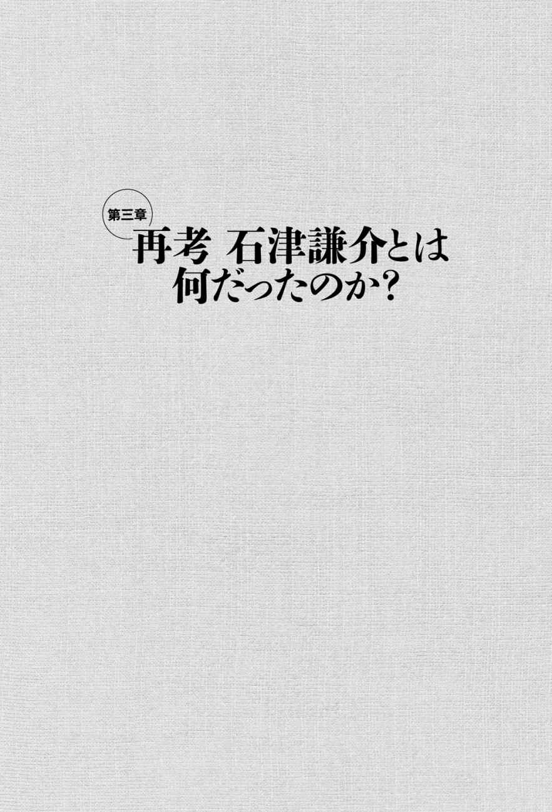
石津謙介──ファッション・デザイナー、ファッション・プロデューサー、ファッション・ディレクター、ファッション評論家、経営者、そして日本エッセイスト・クラブ、日本ペン・クラブ所属の文筆家、といくつもの顔を持つ。明治、大正、昭和、平成という四つの時代を、あるときは真摯に、あるときは大胆に、あるときは疾風のごとく、そして、またあるときはしたたかに生き抜いてきた、まさに多くの顔を持つ多面体のような人物であった。
あるとき、私は、石津に、
「先生、本当の顔は、いったいどれなんですか？」
と尋ねたことがある。
それに対して、石津は、
「ただ、一つだけ挙げろと言われれば、やはりデザイナーだろうね。というのは、ボクの生涯の中でデザインをしているときが一番楽しかったから」
という答えが返ってきた。
デザイナーとしての石津の出発点は天津の大川洋行時代に始まる。
とはいえ、その時代は英国租界であった天津に在留する英国人の服装をこまめにチェックし、それを模倣し、製品に作り上げることがメインであった。正確に言えば、それはデザイナーと呼ぶべき仕事ではなかった。
日本に帰ると、石津は大阪で親友、大川照雄とともにレナウン・サービス・ステーションを立ち上げ、そこでメンズ・ウェアを担当した。レディス・ウェアの担当は田中千代であった。
二年後にサーヴィス・ステーションを神戸に移してから、本格的なデザイナーとしての能力を発揮することとなる。ＰＸ（Post Exchangeの略。米軍の専用購買所）から素材を仕入れ、天津時代に培った英国風のテイストを加味した、当時としては日本最高と賞されたメンズ・ウェアを作り上げ、デザイナーとしての石津の名は世間に知れ渡るようになる。
そして昭和二六（一九五一）年、ヴァン・ヂャケットが誕生する。
初期のヴァン・ヂャケットの商品は、サーヴィス・ステーションと同様、英国式のクオリティの高い商品であったが、大量生産には不向きで、あまり利益は生まなかった。そこで起死回生策として考え出されたのが、若者向けのファッションであった。
当時は若者向けのブランドもなく、大人も若者も一様に同じような格好をしていた時代であった。そこへ若者向きの商品を投入すれば絶対に売れるという石津の読みがあった。
石津が白羽の矢を立てたのは、当時アメリカで大流行していた「アイビー」であった。アメリカの雑誌は、なじみのＰＸへ行けば簡単に手に入ったし、サンプルとしてのアイビー商品も手に入った。
石津の目論見は見事に当たり、アイビーは日本の若者のユニフォームといわれるようになった。
しかし、皮肉なことに、アイビー導入、ＶＡＮの隆盛は、デザイナーとしての石津の終焉を意味していた。というのも、アイビーには本家アメリカというお手本があり、情報はそこからすべて移入できるので、デザイナーとしての仕事はなくなってしまったのである。もちろん細々としたディテイルやカラー・チェックなどの仕事はあった。しかし、ＶＡＮが大きくなるにつれ、それらはデザイン室の仕事となってしまい、デザイナーとしての石津の出番はなくなってしまった。元々それ自体に特別に愛着があったわけではなく、ビジネスとして戦略的に移入したアイビーのデザインなど、石津にとってやりたい仕事ではなかったというほうが現実的であった。
そんな中、石津は経営者として、さらにプロデューサーとしての仕事に没頭するようになる。
頭の回転が早い石津は、アイビーの一人勝ちは決してＶＡＮのプラスにはならないと考え、「ミスターＶＡＮ」を立ち上げた。当時、世界中で流行していたモッズ・ルックを導入し、ヨーロピアン・ファッションを立ち上げたのである。さらに、アイビーの対抗馬としてのコンチネンタル・ルックを拡大させるために、小林秀夫の「エドワーズ」立ち上げを裏から手助けするなど、後に日本のメンズ・ファッションを隆盛に導く基礎を築き上げている。ここに、石津のファッション・プロデューサーとしての顔が見える。
しかし、そのような仕事も、石津にとっては決して楽しいものではなかった。
そこで石津は、デザイナー復活を目指し、ユニフォームの世界に飛び込んだ。ＮＵＣ（財団法人日本ユニフォーム・センター）の設立に関わることとなり、このユニフォームのデザインではデザイナーとしての石津は再びよみがえることになる。
石津の手になるユニフォームは、東京オリンピック、札幌オリンピックの開会式の制服、大阪万博、沖縄海洋博の制服などの国家的なイベントから、日航のパイロット、パーサー、ディスパッチャー、グランド・サービスの制服、サンケイ・アトムズなどのプロ野球のユニフォームや東京メトロの制服、さらには警察庁、警視庁、皇宮警察、裁判所などのオフィシャルなものまで、実に多岐にわたる。
ユニフォームのデザインに関して、石津は、かつて私にこんなことを話した。
「ユニフォームっていうのは、着る条件と環境が、それぞれに違っていてね、先方からの要求がものすごく多い。つまり、あらゆる部分にやたら制約が多い。その制約の中で、それならば、こうしてやろうといろいろと考える。これが、ユニフォームのデザインをやっていて、一番面白いこと」
ただ、面白いというユニフォーム・デザインの仕事の中で、石津には一つだけ悔しい思いをした経験がある。それを石津は、作家・江國滋との対談で次のように語っている。
石津 最近自分でつくって納得してるのは、中国のオリンピックの制服ですね。
江國 モスクワの？ 中国は不参加でしょ？
石津 ええ、はからずもこういう形になりましたから、私のデザインしたユニフォームが世界の人の目にふれる機会はなくなったんですけど、私としては、自分で納得がいき、相手が賛意を表してくれた、それで満足してるんです。
江國 見たかったですねえ。向こうからいろいろ条件が出されたんでしょう。
石津 極端にいうと、向こうは何を着ていいかわからないんですよ。とにかく二八年ぶりにオリンピックに出るんだから。日本の選手団が着ているブレザーがうらやましくてしょうがないんですね。だけどブレザーというのは色なんです。形はそう変わらない。色は何かというと、みんな、国旗の色からきてるんです。日本は日の丸ですから、上が赤で下が白。
江國 そうですね。
石津 中国の国旗は五星紅旗。赤ですね、そうすると日本と同じブレザーとなってしまう。
江國 あっ、そうか。
石津 だから私いったんです。
『あなたたちがブレザーを着たいという気持ちはよくわかるけど、あれは、西洋の服ですよ。中国と関係ないじゃないですか。国旗と関係なくてもいいから、国民服、民族服でいきなさい。とはいうものの、あの人民服はいかにも襟元が苦しいし、スポーティーじゃない。毎日着ている工作服がいいじゃないですか。私が開会式に相応しいのを作ってあげます』......。
江國 それで、どんなユニフォームになりました。
石津 工作服となるとジャンパーかシャツだ、と考えましてね。三種類つくりました。一つはジャンパー・ルックというやつです。ジャンパーの上下で、赤いネクタイを結ばせる。シャツからスカーフから靴から、ぜんぶデザインしたんです。もう一つはシャツ・ルックです。コカ・コーラの配達人みたいな、ああいう感じです。あとはジャンプ・スーツっていうんですけと、つなぎ服ですね。自動車の修理工なんかが着ている上下続いた服。その三体をデザインしまして、向こうに送ったんです。生地とか色なんかも指定して。そうして、そのあとから私が北京に出掛けたら、そのときすでに中国は、オリンピック不参加を決定してたんです......。
一九七九年、ソ連は突如アフガニスタンに侵攻し、アメリカはそれを理由に翌年のモスクワ・オリンピックをボイコット、日本も中国もまた、参加をボイコットし、幻のモスクワ・オリンピックと呼ばれている。
このときの石津の悔しさは、一二年後の一九九二年のバルセロナ・オリンピックで癒されることになる。前述した、三宅一生とのコラボレーションとなったリトアニアのオリンピックのユニフォームに関する感動的な美談である。この経緯については、私がプロデュースした『人間的な』（三五館刊）に詳しい。ぜひ、ご一読いただきたい。
ファッション評論家という肩書きに関して、石津はこんなことを話したことがある。
「ボクの人生の中で最大の失敗は、ＶＡＮ時代から、ファッション評論家を名乗ってしまったことだ。評論家とは、常に中立を守って物事を評論することが本来の仕事。だから、絶対に特定のブランドや製品に偏ってはいけない。ボクの場合、経営者であり、デザイナーでもあったわけで、本人は中立のつもりでも、周りはそう見てくれない。ボクが評論家として何か書いたりしゃべったりすると、それは、他のメーカーをけなしたり、ＶＡＮ製品の手前味噌の宣伝だととられてしまう。つまり、ボクは業界のタブーを破ってしまったことになり、これは、ＶＡＮの倒産より大きな失敗だった......」
昭和四二（一九六七）年五月の『サンデー毎日』に、「評論家と企業家の板バサミ」という、この言葉を裏付けるような記事がある。この中で、対談者の羽間乙彦の、
「企業家であり評論家として活動しているが、そこに矛盾はないか」
との問いに、石津は、
「非常に一致している面と、矛盾している面とがあるんですね。私は服飾評論家として批判する場合は、いいものはいい、悪いものは悪いとはっきりいう。評論家としての私がよくないといったものを、企業家の私がやるはずがない......」
と答えている。さらに、
「よくなくてもそれが売れるということになれば？」
という問いには、
「（しばらく考えて）やります。消費者が買うということは絶対ですからね、だから嘆きはしない。よくないと思ったら自分を批判する。最近の例では、私がちっともいいと思っていないカルダン・ルックが、たいへんにはやっている。そして得意先から、ああいうのを作ってくれという要求がどんどんくる。そうなると評論家として賛成できなくても、企業家としては作らざるを得ない。とすると、『なぜあれが売れるか』ということを評論家としてもう一度考えてみる必要がある......」
と返している。
当時から石津は、自分のしていることがまさに多くの矛盾を抱合していることを充分理解していた。
ＶＡＮを辞めた後の石津は、いわゆるトレンドに対するファッション評論は一切しなくなった。それ以降の石津のファッション評論は、次に示すように精神的な方向に昇華していった。
「アイビーとは、言うまでもなく人の生きざま、つまりライフ・スタイルのことだ。それとは別にファッションとしてのアイビーがある。このふたつのアイビーを混同してしまうと、〝......であらねばならぬ〟式の堅苦しい方程式になって、自由に生活を、ファッションを楽しむことができなくなってしまう。そこで必要最低限のルールと伝統をふまえて、自由に生き、自由に装うことが、私のいうニュー・アイビーだ」
石津の訃報を聞いた翌日、私は、新聞各紙の訃報欄を丹念にチェックした。そして、そのほとんどが、石津はＶＡＮを倒産させ、また、みゆき族を引いてファッションの仇花を咲かせた人物として紹介されており、扱いも驚くほど地味であった。
確かに、石津謙介は過去の人物となっていた。訃報を書いた記者たちも、石津の本当の姿を知らない年代なのだろう。しかし、どう読んでも石津の功績は見事に矮小化されていると思わざるを得なかった。それを読んで、私はこの本の稿を起こすことを決心した。
確かに、ＶＡＮ倒産に関し、石津には創業者、当事者としての責任があることは間違いない。その責任の一端を果たすために、石津はすべてを投げ出して、まさに無一文となった。
ＶＡＮ倒産に関しては詳しく述べない。というのは、それに関わった人物が今も多く存在し、それぞれに思いの差はあっても、その件に関して私よりレジティマシーの高い、つまり、それを書くべき人が存在することを知っているからである。
汚いたとえで恐縮だが、「ファッション業界は〝おでき〟である」という言葉がある。大きくなればつぶれるという意味である。そして、石津はそのことをよく知っていた。
「ＶＡＮが曲がり角にきたのは、だれよりも早く私が気づいておりますよ。昭和三九（一九六四）年、コンチネンタルを売り出したとき、すでに予想していました」（『週刊文春』昭和四二〈一九六七〉年五月）
昭和三九（一九六四）年といえば、東京オリンピック開催、東海道新幹線開通、そして平凡パンチ創刊など、国民にとって日本の再興がまさに実感できた年である。この年、石津はオリンピック開会式のユニフォームをデザインし、日本ファッション・エディター賞を受賞している。ＶＡＮにとっては、青山の本社ビル完成の一年前にあたり、これから本格的に隆盛を図る時期である。そんなときに、石津はすでにＶＡＮの先行きに不安を感じ始めていたことは、まさに驚きである。
当時、日本の商社は、新しい路線としてファッション流通に興味を持ち始め、隆盛するＶＡＮに目をつけたのが総合商社の丸紅（当時は丸紅飯田）であった。そして、この丸紅との提携でＶＡＮは超拡大路線に邁進することになる。ただ、それは石津の目指す路線とはまったく違う方向だった。
その間も、石津は、常に会社の先行きを憂いていた。
昭和四三（一九六八）年、当時アメリカ一のファッション・メーカー「ハートシャフナー・アンド・マークス」社が世界制覇をかけて、その先鞭として日本市場に目標を定め、提携先を模索していた。そして、丸紅を通じてＶＡＮに打診があった。
その提携に関する会議の席で、石津は爆弾発言をする。
「提携なんてけち臭い。御社のような大きな規模なら、いっそのことＶＡＮをそのまま買い取りませんか」
この発言に相手は驚いたものの、まんざらでもないようだった。しかし、丸紅の社員は真っ青になったことは言うまでもない。
結局、この提案は丸紅の強硬な反対で実現しなかった。
後に私は、この一連の騒動について真偽を石津に尋ねたことがある。
「あのときは本気だったんだよ。もしあれがうまくいっていれば、ＶＡＮはあそこまで醜態をさらすことはなかったと、今でも思っている......」
と、少し淋しそうに答えた。
ＶＡＮ倒産の直後、マスコミは、石津に対し「石津の放漫経営」「同族企業の甘さ」など誹謗中傷を浴びせかけたが、石津は一向に動じなかった。しかし、石津の周辺では石津が自殺するかもしれないという噂が流れた。
石津は、自身の死生感に関して次のように語ったことがある。
「ボクはね、五〇歳くらいまでは、老人になるのが怖かった。だからもしヨイヨイにでもなったら、すぐに自殺しようと本気で考えていたし、周りにもよく話していた。ところが、ＶＡＮがああいうことになってしまう少し前に、ボクは三男の啓介を白血病で亡くしている。そのとき、ボクは、ボクの生が続く限り、彼の分も生き続けてやろうと決心した。ＶＡＮが倒産したとき、だれかが石津は自殺の恐れがあるといって、警視庁から見張りが付いた。しかし、そういうことだから、ボクは自殺なんてするわけない。でもしばらくたってＶＡＮ倒産をテーマにした小説が三つ出て、面白いことに三冊が三冊とも、ボクが青山のビルの屋上から飛び降りるところで終わるんだ......」
石津がもたらした「アイビー」という文化は、さらにさまざまなサブ・カルチャーを生み出していく。
洋服がファッションとなり、若者に文化として受け入れられると、第二の石津謙介、第二の森英恵を目指す若者が続出。その中から、山本寛斎、高田賢三、三宅一生という国際的なデザイナーが誕生する。
『ヒッチコック・マガジン』と『メンズ・クラブ』に端を発したメディアの世界では、『ファイブ・６・セブン』『平凡パンチ』『週刊プレイボーイ』を生み出し、日本における現在のアメリカン・カルチャーの礎となり、『Made in U. S. A.』や『アメリカ西海岸の本』を経て、『チェックメイト』『ポパイ』『ホットドッグ・プレス』という、新しい若者文化を生み出した。
アイビー・ファッションをまとった音楽として『メンズ・クラブ』で紹介されたアメリカン・フォーク・ミュージックは、さらにカレッジ・フォーク、カレッジ・ポップスと変化。それらは統合されてニュー・ミュージックとなり、さらにＪポップスとして世界市場に進出するまでになる。
また『メンズ・クラブ』は、ジャズの発展にも貢献した。
ＶＡＮが提供したテレビ番組「ＶＡＮミュージック・ブレイク」は、その後のテレビ音楽番組のプロト・タイプとなった。
そして、橋本龍太郎、小泉純一郎といった、かつては不良の代名詞といわれたボタンダウン・シャツを身につけた宰相が登場し、石津が提唱した「カジュアル・フライデー」を端緒とする「クールビズ」、「ウォームビズ」など、政府がファッションに介入することになる......。
再度言う。歴史に「もし......」はない。
しかし、もし、日本に石津謙介が存在しなかったら、日本のサブ・カルチャーは、明らかに、少なくとも二、三〇年は遅れていたにちがいない。
日本にとって、石津謙介とは、まさにそのような人物であった。
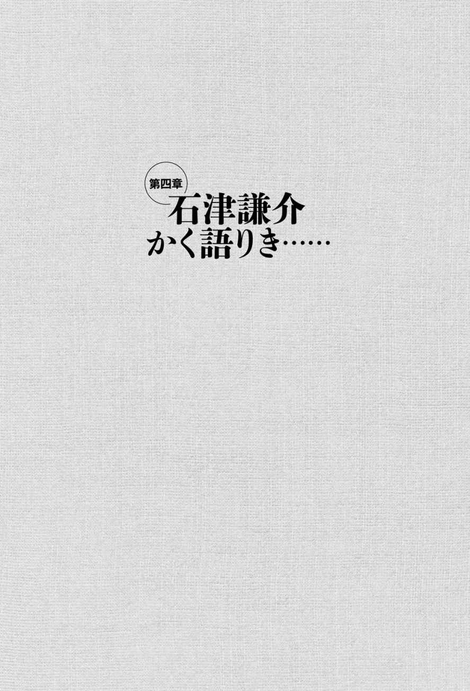
石津との付き合いが始まった一九八一年から石津が入院するまでの約二〇年の間、ご家族を除いて、プライベートの場では、おそらく私が石津と最も多くの時間を共にした人間であろうと思う。
その間、取材はもちろん、食事の合間、飲みながら、車中や飛行機の中、旅先の旅館やホテルなどで、さまざまな話を聞くことができた。時には感心し、時には笑い、時には議論もしたが、常に教えられることが多かった。
本章は、そのような私の心に残るさまざまな石津の言葉を元に、石津の隋談風に再構築したものである。そのため、石津の語る言葉は、時には断片的であり、また、時系列もある程度無視せざるを得なかった。が、このようなまとめ方が、逆に読者の皆様に理解しやすいのではないかと思っている。当然ながら、文責は私にある。
◆「先生」という呼び名
「ボクはわがままだから、人に物を教えるのも、人から物を教えられるのも好きじゃない。長い人生の中で人からちゃんと物を教わったのは、謡と狂言だけかもしれない。
正直に言って、ファッションに関しても、正式に学んだことはない。デザインというのは感性そのものだから、人に教えられてできるものではないし、実技は現場で体得すればいい。
しかし、そんなボクが、誰にも物を教えた覚えもないのに、いつの間にか〝先生〟と呼ばれるようになった。
最初、ボクは先生と呼ばれるのが好きじゃなかった。
銀座のバーへ行くと、なんだかよくわからない連中が〝先生、先生〟と呼ばれて嬉々としているのを見ると腹が立つ。
もっと嫌なのが、公僕であるべき代議士連中が仲間内で、〝先生、先生〟と呼び合っているのを聞くと、汚い話だが、ヘドが出そうになる。
だから、ＶＡＮを辞めて、それまでの会長ではなく先生と呼ばれ始めた頃は、それが嫌で嫌でたまらなかった。
しかし、あるときテレビで柳家小さん師匠の落語を見ていて、師匠が、
『居候、殿でなし、様でなし、そこで、どうだ大将、どうだ先生......』
というのを聴いて、なるほど、この程度の先生なら先生でもいいか、と思うようになった。
また、これも落語で聴いたのだが、
『先生とは先に生まれると読むし、先 ず生きているとも読む』
という言葉もある。
ボクのように年齢を重ねると、大抵の相手よりは先に生まれているし、身体はどこも悪くないから、確かに先ず生きている。それならば、先生でも結構じゃないかと思うようになった」
◆「衣食住」の順番の真意
「あるとき若い人から、
『先生、衣食住という言葉がありますが、どうして衣・食・住の順番なんですか？』
と聞かれ、返事ができずに困ったことがある。
ボクも衣食住という言葉をときどき使うが、その並び順なんて考えたこともなかった。で、そう聞かれれば、確かにこの並び方は不思議だ。もしボクが順序をつけるならば、食・住・衣の順となる。また、物理的に考えても、食・住・衣の順は変わらない。そこで、手元の「広辞苑」で『衣食住』をひいてみると、〈衣服と食物と住居。生活の最も基礎となる条件。生活のもとい。くらしむき〉とはあるが、なぜ、この並び方なのかについての説明はない。
そこで、周りにはファッションに詳しい連中が山ほどいるから、彼らに尋ねてみようと、片端から聞いてみたが、驚くことに、ほとんどの連中が答えられない。そこでボクは、自分の本（『人間的な』三五館刊）に、誰か知っている人がいたら教えてくださいと書いたのだが、返事は来なかった。
その後もいろいろ調べたんだが、皆目わからない。
そんな中、ようやく、ある友人から、
『あれはね、食住は禽獣もなすが、衣を享受することは人間のみに与えられた尊厳である。しかして、衣こそが食住の先となる。平たく言えば、あらゆる生物において、食は命の糧であり、住は平安を得る場である。人間は当然として、あらゆる動物もまた餌を食べ、平安を得るために巣作りし、子を産み育む。ただ人間のみが、自身の意思で衣服を身にまとう。それが人間の尊厳をあらわすため、形態こそ違え、他の動物もする行為より上に位置するといった意味となる。はしょって言えば、衣、つまり、着ることこそが人間の人間たる証明だということになる』
という答えが返ってきた。
それを聞いて、ボクは、なるほどと言って横手を打った。まさに、目から鱗である」
◆ズボンの語源を探る
「また、あるとき、
『先生、ズボンのことを、英語ではトラウザーズやスラックス、フランス語ではパンタロンと言いますよね。で、そのトラウザーズやパンタロンが、日本ではなぜズボンとなってしまうんですか？』
と聞かれた。
これはボクも知っている。で、
『あれはね、フランス語のジュポンという言葉が訛った言葉だよ』
と教えた。
翌日、その人から、
『先生、家に帰ってフランス語の辞書を引いてみましたら、ジュポンは、女性用の下着だと出ていました。女性用の下着が、どうしてズボンになったんですか？』
と聞かれ、ボクもそこまではわからないので、博識な星野醍醐郎さんに電話で聞いてみた。
『あれはですね、幕末の頃、徳川家の支援のためにフランスから顧問が来ていまして、彼らは、武士の穿く袴が珍しくて仕方がない。あれは、どうみてもジュポンにしか見えない、というわけで、袴のことをジュポンと呼んだんです。ジュポンというのは、フランスの女性用の下着で、スカートの下にはいて、スカートを拡げる、今で言えば、ペチコートやパニエの類なんですね。彼らには、裾広がりの袴がちょうどジュポンをつけたように見えたんでしょうね。それを聞いて、逆に、武士たちは袴、つまり、男の穿くものはジュポンと呼ぶと思ったんです。そのフランス人たちは武士たちに西洋式の調練を教えていまして、そのときは武士たちも、いわゆる西洋式の軍服を着る。それで、彼らは自分の穿いているものをジュポンと呼ぶようになり、それが訛ってズボンとなったんです』
と、明快な答えが返ってきた。
聞くは一時の恥、聞かぬは一生の恥という言葉があるけれど、ボクにもまだまだ知らないことがたくさんある。勉強は、まさに一生の業と心得、今さらながら、死ぬまで切磋琢磨しようと思っている」
ファッション用語には、日欧米で違う言葉がたくさんある。たとえば、ズボン吊り。英国では「ブレーシズ」、アメリカでは「サスペンダーズ」。チョッキは、英国で「ウエイスト・コート」、アメリカでは「ヴェスト」。ネクタイは、英国では「クラヴァット」、アメリカでは単に「タイ」。この他にも、アメリカでは「エレベーター」だが、英国では「リフト」、ビルの階の数え方でも、一階を、アメリカでは「ファースト・フロア」と呼び、英国では「グラウンド・フロア」と呼ぶ。原稿を書いていても、ときどき混乱することがある。
このように、言葉とは難しいもので、文筆を業とする私にとっても、石津の「勉強は、一生の業、死ぬまで切磋琢磨」という言葉は、身にしみて心に刻んでいる。
ちなみに、石津に衣食住を教えた友人とは、手前味噌だが、実はこの私である。
星野醍醐郎は、アメリカのコティ賞を二度受賞した、日本が生んだ世界的デザイナーであり、そのファッションに関する該博な知識は他に譲ることがない。
星野は私にとって大学の先輩であり、また、よき師でもあったが、二人で「世界のクリスマス」を取材しようと楽しみにしていた矢先、突然、鬼籍に入られてしまった。
◆ゲートルとエナメルの短靴姿の小学生
「金ボタンの制服が着たいがために小学校を転校したという話は、いろいろなところで書いた。確かにそのとおりで、ボクの生家の学区の小学校・清輝小学校は、岡山でも名門と呼ばれてはいたけど制服がない。みんな着物や、着物に袴という姿で登校した。履くものといえば、少し裕福な家の子は下駄で、普通はみな、麻裏草履。
ところが、師範学校の付属の小学校には制服があって、靴を履いている。実は、ボクは制服よりも靴に執着していたみたいで、革靴で通学する連中がうらやましくて仕方がなかった。そこで、駄目は承知の上でお袋に頼んだら、これがすんなりＯＫで、少々驚いた。それで、二年生になるときに岡山師範学校付属小学校に転校した。ことが決まれば、さっそく制服と靴。どちらもオーダー・メイド──というと贅沢のように聞こえるけど、当時は、というよりも昭和の三〇年代くらいまでは、既製服は『吊るし』といって蔑まれ、ほとんどが注文服で、一般のサラリーマンも、月賦にもせよ、年に二回は背広を新調していた。靴もまた然り。ちなみに、吊るし、すなわち既製服が市民権を得たのはＶＡＮの影響だと思っている。
靴を注文する際、お袋はついでにゲートルも頼んでくれた。ゲートルといっても、兵隊がすねに巻くのとは違って、今で言うスパッツだった。グレイのフェルト製で靴の上部に被せて履く。横に同色の小さなくるみボタンが五つか六つ付いていて、それをＴ字型のボタン留めフックではめて装着する。そういえば、テレビでやっていた『名探偵ポワロ』の中で主人公がスパッツを着けているのを見て懐かしく思った。
ボクはこのスパッツが大好きで、明治の専科に入っても愛用していた。ところが、当時愛読していた雑誌『文藝春秋』に、『ファッション流行欄』というコラムを読んで一考することを迫られる。同コラムは、ファッションからブランド・ストーリーなど、実に細かな説明があった。実はこのコラムは、『新青年』の『ヴォガンヴォグ』と同様、ボクのファッションの教科書だった。で、あるとき、そのコラムに、『スパッツは、欧米では車夫馬丁のもので、紳士は用いない』と書いてあったので、その時点できっぱりとやめた。しかし、ポワロのスパッツを見て、またちょっと気になっている。
小学生の頃の革靴は、踝 丈 の黒の編み上げの半長靴だった。この靴にスパッツというのも、なかなかおしゃれだったが、どうも人と同じものは気に入らない。
それで、エナメルの短靴が欲しくなった。どうしてエナメルか、今考えてもよくわからないが、たぶん、竜輔叔父のダンス靴かなんか見たんだろう。しかし、いくら欲しいからって、当時、子供用のエナメルの靴なんてあるわけがない。でも、もしかしてと思い、岡山中の靴屋を探し回った──いうと大仰のように聞こえるけれど、当時の岡山には数えるほどの靴屋しかなかったからね。そこで、とうとうエナメルのような光沢を持つゴム靴を見つけ、さっそくお袋にねだって買ってもらった。エナメル風のゴム靴というと、なんとなくカッコよく聞こえるけれど、実はレイン・シューズだった。それでもうれしくて、その靴の上にスパッツを着けて意気揚々と登校した。これだけ靴が好きだったんだが、それを普段履きにすることはなく、登校とよそ行きに履くだけで、普段は、やっぱり下駄と雪駄。でも、麻裏草履だけは金輪際履かなかった」
◆石津謙介「靴の履歴書」
「東京の学生時代、靴は丸善で買っていた。ほとんどが英国式の重厚なデザインだった。この趣味は天津時代も変わらず、勤め先の大川洋行で『ケンテル・シューズ』のブランドで、英国式の靴を作ったこともある。ケンは謙介の『ケン』、テルは、終生の友人・大川照雄さんの『テル』からとったネーミングだ。
戦後も、靴の好みはトラッドだった。英国式の重厚な靴こそ、正しい男の履物だと信じて疑わなかったから......。
ところが、あるときこの考えが一変した。イタリアのシエナに行って、友人のデザイナー、コルシーニに会ったとき、彼から『そんなに重い靴を履いてどうする』と言われた。で、彼の履いている靴を見ると、華奢で、軽そうではあるけれど、なんだか女々しいようなデザインで好きにはなれなかった。
しかし、確かに楽そうではあるので、帰りに寄ったミラノで『テストーニ』の店に入って驚いた。妙ちくりんなイタリアン・デザインのものが並んでいるのかと思ったら、デザインはトラッドで、しかも作りはイタリア式、軽くて柔らかくて足入れがよくて、まったく非のうちようがない。そこで何足か買って、履いてみるとなんとも具合がいい。それ以来、靴はイタリーと決めていたんだけれど、七〇歳を過ぎた頃から、どうもしっくりこなくなった。で、いろいろ考えてみたところ、どうやらイタリー靴独特の薄い革底が足に響くらしかった。
ちょうどその頃、ニューヨークでは通勤にスニーカーを履く人が多いという記事を新聞で見て、『これだ！』と思い、さっそく近所の靴屋へ向かった。どんなブランドがよいのやらわからないので、店主の勧めるのを一足買い込んできた。
履いて歩くとすこぶる楽ちんで結構。ラベルを見てみると韓国製で、値段は三〇〇〇円ほどだった。これで靴問題は落着と思ったが、ここに思わぬ伏兵があった。つまり、スニーカーは、歩くには楽だけど、残念ながら、ジャケットにネクタイというナリには合いかねる。そこで、このジャケット・スタイルにも合う靴を探さねばならなくなって、いろいろ探した結果、ついにドイツ製の『ベアー』というブランドに出くわした。
こちらは、軽くて、柔らかくて、デザインも適当にトラッドだし、何よりも底がゴム製だから、滑らないし、歩きやすい。人生七〇年にして、初めて自分の履くべき靴に出合った。そこで、かみさんのも取り寄せて履かせると、少し足の具合が悪いかみさんも、これはいいといっぺんでファンになった。靴はね、結局、軽くて歩きやすいのが一番......ということ」
◆旅行鞄に、靴は必ず五足以上
四谷荒木町の石津邸の玄関を入って左側に、金属製の書架のような靴棚があり、そこに本人と夫人の靴が三〇足ほど、きちんと並べられていた。石津の言葉どおり、お気に入りの、イタリア製の茶のウイング・ティップのスリップ・オン、黒のストレート・ティップ、ブランド不明のスニーカー、茶色のウエスタン風の半長靴、トニー・ラーマのカウボーイ・ブーツなどとともに、ベアーの靴が整然と並んでいた。
石津に言わせると、
「長年愛用している靴はかみさんのようなもので、いくらくたびれても愛着があって、捨てるわけにはいかない。だからどんどんたまっちゃってね。今、現役なのは五〇足くらいだけど、捨てられなくて箱の中で眠っている靴は何足くらいだろう」
というわけで、その総数は、本人のみならず、私も知らない。
石津と海外の旅に出ると、その土地の靴屋を覗くのが常だった。旅先がイタリアの場合はその頻度が多くなる。私はそのたびに勧められて靴を購入し、いつしかコレクションも石津に負けないほどになった。
石津は、短期の旅行でも、旅行鞄の中に必ず五、六足の靴を入れていた。
「いや、旅っていうものは、時として、どんなことが起こるかわからないから、いろいろな場面を想定して、となると靴もこれだけは必要なんだよ」
これは、靴に限った話ではなく、着るものすべてにそうなんだから、石津の旅支度は、それが短期の旅であっても大仰なものとなった。
◆ナリも、軽くて楽なのが一番
ここまで書いてきて、ふと思い出したのは、雑誌などの企画などを除くと、二人の間でファッションが話題になったことはほとんどなかったことだ。今考えても不思議だと思う。
信じられないかもしれないが、私が石津と付き合った約二〇年の間、石津が上下そろいのスーツを着ているのを見たことがない。そしてアイビーも......。
石津のファッションは、靴と同じくヨーロッパ、特にイタリア志向が顕著であった。石津に言わせると、
「世界中どこでも、ちゃんとした人は、ちゃんとしたナリをしていて、それを見ていると、ほとんど似たようなものを着ている」
ということらしい。石津が最も多く着用したのはブレザーで、紺と黒が好みだった。紺のブレザーにはゴールドのボタン、黒のブレザーにはシルバーのボタンと決めていた。いずれもカシミアなどの柔らかい素材が多かった。
「男のナリなんてのは、決まりきったものだから、軽くて楽なのが一番」
というのが石津の服選びのポリシーだった。
石津は小柄だったので、イタリアでもジャスト・サイズを見つけるのが難しかったらしく、気に入ったデザインを見つけると（もちろん自分のデザインも含めて）、代官山のＡＬやエイボン・ハウスで作らせていた。
家では、これもポリシーどおり、スウェット・スーツというのが定番だった。
ファッションに関して石津から連絡が来るのはパーティの前で、
「ナリはどうする？」
というのがお決まりのフレーズだった。そして、ああでもない、こうでもないと検討するのは実に楽しい時間だった。
たとえば、石津が「和服にしよう」と言う。「じゃ、紋付の着流しにしませんか？」と私が答える。当日、石津は、狂言の後見の時に着る淡い藤色の紋付に、半ブーツ、それに闘牛士のマントを羽織って現れる。私はというと、黒紋付を素 袷 で素足に雪駄、エメラルド・グリーンのカシミアのロング・マフラーといった出で立ちで合流する。
今思い出しても、懐かしく、楽しいときを共有した。
◆とにかく帽子を被って、町へ出よう
「昭和三〇年代の初め頃だったと思うけど、戦後、だんだん帽子を被ることが廃れてきて、それじゃ困るってんで、全国の帽子組合が『帽子は一番目立つもの』という標語を作って一大キャンペーンを張ったことがある。でも、これは間違い。帽子ってものは、目立っちゃいけない。あ、あの人は帽子を被ってるなって、人から意識されたら、それはその人のおしゃれがなってないっていうこと。つまり、それは帽子を被ってるんじゃなくて、帽子に被られているってこと。
確かに、最初に帽子を被ったときは、果たしてこの帽子、オレに似合ってるんだろうか？ 人が変だと思ってないだろうか？ なんて、自分が帽子を被っていることを意識してしまう。要するに、帽子を被った自分に自信が持てない。自分が意識するくらいだから、人もそれを意識してしまう。
じゃ、どうすればいいかって？
それはね、とにかく常に帽子を被って外へ出ること。似合うか似合わないなんて関係ない。とにかく、いつも帽子を被っているということを人に印象付けることが大切。そうすれば、周りも、ああ、あの人は帽子が好きなんだと思うようになる。そこまでいけばもう大丈夫。そのうちに、たまに無帽で外に出ると、『あれ、今日、帽子なし？』なんていわれるようになる。ここまでくると、帽子は、たとえば、チャーチルやチャップリンの山高帽、シャーロック・ホームズの鹿狩帽（ディア・ストーカー）、ジョン・ウェインのテン・ガロン・ハットのように、その人の顔、全体像、さらには人格そのものと合体してしまう。
男の正装であるテイル・コート（燕尾服）の場合はトップ・ハット（シルクハット）。モーニングやタキシードの場合はダービーと呼ばれる山高帽かホンブルグを被る。つまり、男が正しく装うときには、必ず帽子を被る。本当は帽子の他に、手袋とケーン（ステッキ）を持つのが正式なんだけど、ボクの場合、ステッキを持つと、『ああ、石津も、ついに杖がいるようになったか』といわれるのがオチだからステッキは持たないけど、帽子と寒いときの手袋は欠かさない。昔の英国紳士みたいに夏でも革手袋なんてのは、絶対願い下げだがね」
◆帽子の威力
「帽子を意識したのはいつごろだったか......。
学生服が着たくって、母親に頼んで小学校を変えさせたくらいだから、子供の頃から着るものには、結構うるさかったはずなんだけど、こと帽子に関しては小学生の頃にそれほどこだわった覚えはないなあ。
子供の頃は、夏場は岡山特産の麦藁帽を被せられていたことは覚えている。あとは小学校の頃の制帽。これは普通の学帽で、夏になると白の覆いをかける。そういえば、小学校の国語の教科書に、『かぶりもの』という帽子に関する文章があったことを微かに覚えているなあ（後述）。
ところが、中学校へ入ると、俄然帽子に興味がわいてきた。というのも、ボクが通っていた岡山一中の制帽は、大学生の被るような角帽で、といっても、早稲田のようなきっちり真四角ではなくて、丸帽の癖になんとなく角があるというような、今考えると不思議な形だったんだが、これを被っていると、人がなんとなく尊敬の目で見てるような気がして、『ははあ、帽子の威力はたいしたものだ』と思うようになった。
明治の専科に入って東京に出ると、すぐに背広を作った。兄貴の紹介で、三田の『野口』というテーラーで、手織りのスコッチ・トゥイードのスリー・ピース。それから、銀座の『高橋洋服店』でも作った。とにかくやたら高かったことを覚えている。
で、背広ができると、次は帽子。御贔屓の帽子屋は、銀座通りの新橋寄りにあった『大徳』。ここでは中折れ、つまりソフトやパナマ帽を買った。特に台湾製の大甲パナマは高かったけど、それを被るのがなんともうれしくて、無理して買ったことを覚えている。しかし、岡山特産のカンカン帽は、ほとんど被らなかったなあ。
天津時代は、主に中折れを被っていたけれど、戦争が激しくなるにつれて外出には軍帽のような国民帽を被っていた。しかし、これは好きで被っていたわけではない。戦争が終わっても、日本に帰ってきた頃は、人々は中折れや国民帽、軍帽を被っていた。ところがひどいインフレで物価が高騰し、あれは、昭和二四、五（一九四九、五〇）年だったと思うんだが、物価が高いので帽子を被るのをよそうという〝無帽運動〟なんかが始まって、瞬く間に広がって、日本から帽子文化が消滅してしまった。
ＶＡＮ時代もあまり帽子を被らなかったなあ。忙しくてね......。それでも休みの時にはクリケット帽やベレーを被っていた。本格的に帽子を被ることを復活させたのは、ＶＡＮをやめて二年くらいたった頃からかなあ。それ以来、帽子を被らずに表へ出ることは、まずないね」
このように、石津は、外出する際は必ず帽子を被っていた。たとえそれが和服の場合であっても。
石津が最も愛した帽子は、黒のウール製（夏場には、白のコットン製）のグリーク・フィッシャーマンズ・キャップ（ギリシアの漁夫帽）であった。次に茶色のコーデュロイ製のダッチ・ボーイ・キャップ、そして濃紺のウール製のフレンチ・マリン・キャップであり、大抵の場合、それらのいずれかが石津の頭上にあった。素材も、原産地も違うこの三つの帽子は、実はほとんど同じデザインで、石津がどのようなレギュレーションで、それらを被り回していたのかは、今となって知りようもないが、それなりにこだわりがあったのだろう。
また、天辺にポッチの付いた、英国式のツイードの六枚剥ぎのメトロ・ハット（小学生が被る黄色の帽子と同じデザイン）がお気に入りで、和服で外出するときには、常に石津の頭上を飾った。
それ以外には、野球帽と正チャン帽（ニット帽）がお気に入りで、野球帽は自転車で近所を散歩するとき、正チャン帽は家にいるときも時々被っていた。
さらに、常用しているわけではないが、時にはシャレで被ったり、ただ眺めているだけのコレクションも多く、タモ・ベレー、目出し帽、クリケット・キャップ、スコッチ・ベレー、シエナのジョッキー・キャップ、スコッチ・ベレー、トルコ帽、ビス・ヘルメット、各国の軍帽、フランスやイギリスの警官の制帽、果てはスペインの闘牛士の帽子など、私の知る限りでも四〇種類は所持していた。
◆付記「かぶりもの」
路行く人のかぶりもの、中折・鳥打・山高や、シルクハットと類多し。星の形を打ちたるは陸軍兵の帽子にて、艦の名あるは水兵帽。学生・生徒の帽子にも皆学校の徽章あり。夏の経木や麦わらは見るにもいとゞ軽げなり。西洋婦人のボンネット花をかざりてうるはしく、支那の帽子はいたゞきに、結ぶ赤だまかはいらし。赤き帽子のトルコ人、長き白布くるくると頭に巻けるインド人、所変ればさまざまに変わるよそほひ面白や。かんむり・烏帽子今は唯、古風ゆかしき我が国の祭の服に残りたり。昔の風をそのまゝに、田植・草取・取入れに農夫の辛苦共にするすげ笠こそはたふとけれ。車夫のかぶるは形より、まんじゅう笠の名もをかし。づきんにおこそ・大黒と其の名其の類亦多し。かぶりものにはあらねども、手ぬぐひ三尺引きしぼり、頭に結ぶはち巻きは次第々々にすたれ行く。（国定教科書尋常小学読本巻九第十五課〈明治四一年〉）
◆披露宴と礼服はご勘弁
「ボクは、入学式、卒業式、結婚式、お葬式、会社の設立記念の式とか、創立何周年の記念の式など、元来『式』と名のつくものは嫌いである。
あんなものは、その当事者たちだけがおめでたいのであって、それに付き合わされるのは迷惑千万である。
とはいえ、人間は社会的動物だから、それなりのお付き合いも必要で、ボクもＶＡＮにいた頃には、それなりにさまざまな式にも出かけた。でも、ＶＡＮを辞めてからは、できる限り遠慮させていただいている。
それらの式の中でも特に嫌いなのは、結婚式とお葬式。
結婚というシステムは、人類の歴史の中で、長く受け継がれてきたものだから、それに関して文句を言うつもりはない。その証拠に、ボクも結婚している。ただ、結婚するかしないかは本人の自由で、ボク自身は、ま、しないよりはしたほうがいいくらいにしか思っていない。
また、結婚式というのは、前途有望なカップルが神様や人の前で将来を誓うわけだから、式自体は至極結構なものだ。いずれにしても、大変プライベートかつ厳粛なものだから、結婚式自体が嫌いというわけではない。親族や近い親戚の場合、求められればボクも参列は拒まない。
ボクが嫌いなのは、結婚式後の、例の披露宴というヤツだ。
披露宴に招かれて行くと、大抵の場合、まず入口で嫌なことに出くわす。
ホテルなどでは普通、何組かの披露宴が同時進行していて、どこが自分の行くべき会場か迷うことがある。
そこで、会場を探り当てる目安は、会場の前に出ている看板だが、これを見てボクはいつも不愉快になる。その看板には大抵の場合、『○○家、ＸＸ家御披露宴会場』と書いてあり、ボクはこれに腹が立つ。
結婚が家と家との結び付きだなどと、今でも、大時代なことを考えている人があるのだろうか？
これは、『○○太郎、ＸＸ花子披露宴会場』と書くべきである（当然ながら、名前に敬称はつけないし、披露宴にも『御』の字はつけない）。もちろん、ボクの息子のときにもそう書かせた。
それから、受付で芳名録に記帳させられるのも嫌いだ。出席者は、前もって出欠を知らせてあるわけだから、受付はそのチェックだけしていればよろしい。
披露宴は、たいてい媒酌人による二人の紹介から始まる。
媒酌人は、美辞麗句を連ねて二人を褒め上げる。到底、正気の沙汰とは思えないが、ま、ごく普通の人間が、一生に一度だけ褒められる場だと思うから、それには目をつぶる。
それが終わると、来賓の祝辞が始まるが、あれも不思議な光景だ。
来賓と呼ばれる人たちは、決まって最初に、自分の社会的地位を披露し、しかる後、陳腐な決まり文句を並べて終わる。ま、それはよしとしよう。
しかし、許せないのは、その来賓の向きだ。大方は、披露宴のテーブルに向かって、つまり招待客に向かって祝辞を述べる。
こんな馬鹿な話があるものか。
祝辞を受ける本体は、新郎新婦であって、招待客ではない。
新郎新婦以外に、いや、新郎新婦にしてさえ、誰があんなくだらない話を長々と聞きたいものか！
ボクの場合は、祝辞を求められると、壇上に上がり、新郎新婦の後ろに行って、二人だけに御祝いの言葉を述べる。もちろんマイクなんか使わない。これが、正しい祝辞の方法だと信じているから。
それから、ボクはその場で、おもむろに新郎新婦に、
『この結婚式、披露宴の経費はだれが払ったの？』
と聞く。その答えが、
『はい、二人で力を合わせて......』
というのだったら、ボクは最高の祝福を与えるし、
『両親が......』という答えが返ったら、
『ハハハ、君たち、ご両親に一生頭が上がらないね』
と言って、さっさと席に戻ることにしている。
要するに、ボクは結婚というのは、二人でできるようになったときにするものだと思っているからね。
ところで、アメリカ人の友人から、
『日本のホテルは怖い。毎日、ギャングが集団で、昼間っから宴会をやっている』
と聞かされ、何のことだと思って、問いただすと、
『だって、どこのホテルへ行っても、黒のダブルのスーツを着込んだ集団がいるではないか。どう見ても、あれは、日本のヤクザだ』
と答える。
それを聞いて、話が読めた。つまり、結婚式の披露宴に集まる連中の、礼服の話なんだと。そういえば、日本の略礼服、つまり黒のダブルのスーツは日本だけの特殊な習慣で、外国では黒のダブルのスーツといえばギャングの制服だ。
ボクは、ことあるごとに、あの略礼服はよして、せめてディレクターズ・スーツにして欲しいと言っているんだが、まだまだ道は遠い」
◆ボクが死んでも、葬式はしないでほしい
「結婚式より嫌いなのがお葬式。
知人や友人が、この世から消えていくことは悲しい。訃報を聞いたら、静かに故人を偲び、心の中で冥福を祈ればよい。追悼の心は、非常に個人的なものだから......。
日本のお葬式のシステムで嫌なのは、通夜というしきたり。
本当に、何をおいても駆けつけましたという気持ちを持つ人が通夜に馳せ参じることは、それは、その人その人の考え方だから、別に構わない。しかし、それほど親しくもないのにしゃしゃり出て酒を飲み、おまけに酔っ払っているやつのいるところなど、絶対に行きたくない。
坊主の長いお経を聞かされたり、讃美歌を唄わされるのは、甚だ迷惑だから、ボクは、お葬式にはよほどのことがなければ参列しない。しかし、こちらも、親族、近い親類、そしてごく近しい友人の場合は、話は別である。
結婚式の場合、欠席すると、当事者に後から恨まれることはあろうが、お葬式の場合、とりあえず当事者本人がすでにいないのだから、文句を言われることもない。
そんなわけで、ボクは人のお葬式に出ない以上、ボクの葬式にも人に来てもらいたくない。いや、葬式そのものをやりたくない。
しかし、死んじゃった後のことだから、こちらの気持ちを顧みず、世間体がとか何とかと言って、誰かが勝手にやってしまうかもしれない。そこで、ボクは、死んだら献体することに決めた。かみさんに話したらかみさんも賛成で、さっそく二人で献体の手続きをとった。これならば、葬式はできないだろう」
◆友人の「偲ぶ会」をプロデュース
「そんなとき、親友の熊井戸龍雄さんの訃報が届いた。
『男の服飾』から『メンズ・クラブ』の時代を作り上げた戦友の死は、少なからずボクにショックを与えた。
熊井戸さんが体調を悪くして入院したと聞き、さっそくお見舞いに行った。信濃町の慶応病院で、熊井戸さんが入っていた病室は、なんと、昨日までうちのかみさんが入っていた部屋だった。熊井戸さんは、
『奥さん、よくなって退院されたんだってね。じゃ、縁起がいいから、ボクもすぐに退院するよ。これもなにかの縁だね』
と言って大笑いした。
熊井戸さんの死は、ボクにひとつの困難をもたらした。というのは、若い頃から二人で、どちらかが先に亡くなったら、残ったほうが葬儀委員長をやるという約束をしていたからである。その頃は、ボクもお葬式はやるもんだと思っていた。
親友との約束は果たさなければならないが、とにかくお葬式はしたくない。
そこでいろんな人に相談し、一つの結論を出した。葬式ではなく、『偲ぶ会』にしよう、と。
場所は、意表をついてホテルにしようと思い、旧知のホテル・オークラの支配人に電話を入れると、どうも、あまり気が乗らないようだ。そこで、問いただすと、
『結婚式や披露宴のお客たちが、喪服の人たちと出くわすのは、ホテルとしてもあまりよろしくない。それに、お経の声や御線香のにおいが流れると......』
と言う。これで、問題点は整理された。そこで、
『わかりました。参会者に喪服でうろちょろはさせません。お経も流しませんし、お線香も上げません』
と言うと、それならば、ということで、どうやら引き受けてもらうことになったが、しぶしぶ引き受けたということは、先方の声からよくわかった。
場所が決まったので、また人を集めて演出を考えた。
まず、一般のお葬式のような祭壇は作らず、舞台の背に白い幕を張り連ね、そこに大きく引き伸ばした故人の写真を掲げる。
舞台の前に、白のテーブル・クロスをかけた長い机を舞台の幅だけ並べ、壁面にはさまざまな時代の、故人の写真を展示する。
参会者は喪服および香典は厳禁とし、各自自分の好きな花を一輪──ただし色は白に限る──を持参する。会場へ入ったら、まず舞台の前へ行って、テーブル・クロスがかけられた机に花を置き、舞台上の写真に一礼して退場していただくというシステムを考えた。
この意見には、大勢の人の賛意を得たので、このままの進行ということになった。しかし、それじゃ寂しすぎるというやつが出て、『お酒はどうする？』という問題が提起された。
ボクはなるべくシンプルに故人を偲び、参列者を長時間拘束したくなかったので、このようなシステムにしたかった。しかし、よくよく考えれば、やはり少々寂しい気もする。それに、これではせっかく引き受けてくれたホテルにもメリットがない。そこで結局、お酒を出すことにした。しかし、仲間内にはウイスキーやジンなど強い酒を飲ませると腰が重くなる連中が多いので、出すのはビールとワイン、そして数種のソフト・ドリンクのみとすることにした。
すると、今度は、『飲み物を出すなら、食べ物はどうする？』という次なる問題が起こった。しかし、そんなにサービスしたら、予算のほうがたまらない。
そんなこんなで、ホテルと打ち合わせしていると、ホテル側が、「やはり、飲み物だけじゃ......」ということで、簡単なサンドイッチなどを用意してくれることになった。
当日は、故人の遺徳で会場は満杯。
舞台前のテーブルには、たちまち白い花の山ができた。なかには、何を間違えたか、例の略礼服に黒ネクタイ、社員らしいのに白の立派な蘭の花束を持たせたのが入ってきた。その人物、中の様子を見て、場違いだと気づいたのか、すぐに会場を出て行き、二〇分くらいして戻ってきた。手には小さな白い花、ネクタイを見ると、花柄に変わっている。おそらく、ホテルのアーケードで調達したのだろう。
舞台では、『ゲロの会』の悪友、帽子デザイナーの平 田 暁 夫 さん、デザイナーの中 村 乃 武 夫 さんとボクの三人で、故人を偲ぶ鼎談が始まったのだが、それがいつか、故人の旧悪暴露大会に変わり、会場は爆笑の渦に包まれた。ボクはそれを見て、心の中で『してやったり！』とほくそ笑んでいたが、この旧悪暴露は少々度が過ぎて、後で御家族から叱られた。
この会の成功を期に、各ホテルでは故人を偲ぶ会をパッケージにして営業するようになり、新しい客筋が開拓できたと喜ばれた。
会は成功だったが、ボクは葬式だけではなく、偲ぶ会もやらないことを心に決めた。というのも、当事者のいないところで、旧悪を肴に酒を飲まれたら、浮かべるものも浮かぶことができないからね」
◆目論見どおり、葬式はなし
私は一度だけ、石津とともに共通の知人の娘さんの披露宴に出席したことがある。そのとき、来賓祝辞の一番が石津だった。司会者が石津の名を告げると、石津はマイクの前には立たず、壇上に上がり、新郎新婦の後ろで二人になにやら話しかけていた。
ややあって、今度はマイクの前に立ち、
「所用があるので、これで失礼します」
と言って、そのまま会場から出て行った。私も、慌ててあとを追い、二人の後ろで何を話していたのかを尋ねた。その答えが、先述の言葉である。
熊井戸さんの偲ぶ会に関しては、私も相談された一人なので、その経緯はよく知っている。
熊井戸とは、石津との付き合いを通じて知り合い、公私共にお世話になった。豪 放 磊 落 でありながら、細やかな心遣いのできる先輩であった。
偲ぶ会で熊井戸の旧悪を暴露した張本人、中村乃武夫は、著書『モード屋の目』（昭和三七〈一九六二〉年、文化服装学院出版局刊）の中で、熊井戸のことを、
「（熊井戸さんには）珍しいもの、ゲテモノを食わせる食いもの屋にも、ずいぶん案内してもらった。僕ら仲間はそんなこんなで、夜明かしでご馳走になったのもしばしばである。そんなとき、肩幅のがっちりとある、長髪の熊井戸さんは、まるで僕らの大将のように頼もしく見えたものだ。ストリップとボクシングとお酒の好きな熊井戸さん......」
と記している。
このように、熊井戸は人の面倒見がよく、終生、石津を懸命にサポートした、まさに親友であり、戦友でもあった。ちなみに中村は、同書の中で、石津に関しても次のように触れている。
「自分の好きなものを他人に押しつけたがる癖の人がいる。でも、たいていは迷惑がられるか、アクビでも出されるのがオチである。ところが、この石津謙介という男は、自分の好きな服を他人に押しつけて、喜んで迎えられ、なおかつそれで金儲けをしている。まことに得な人である」
石津の目論見どおり、死後、遺体は献体され、お葬式は行われなかった。
その代わり、平成一七（二〇〇五）年の一〇月、東京と大阪で「おかえりなさい石津謙介さん」という写真展が行われ、これが、知人、友人たちとの最後の別れとなった。
偲ぶ会もまた、公式には行われなかったが、同年一二月一八日、ＶＡＮの関係者によって、「石津謙介会長にお別れする会」が開かれた。
こちらはプライベートな会なので、泉下の石津にも否やはなかっただろうと思う。
この会には私も招待され、出席したが、ＶＡＮと関わりを持たない私にとっては、少々居心地が悪かった。本来なら喪主であるはずの石津祥介・祐介兄弟に挨拶し、旧知の高木一憲と石津の末妹、石津すみ子としばらく立ち話をして、そっと席を立った。そして、石津とよく行った麹町のバーへ行き、改めて一人で追悼の杯を重ねた。
◆紙問屋の若旦那というＤＮＡ
石津謙介は、「文字を書くこと」に特別の想いとこだわりを持っていた。
「ボクの生家は、この地方特産の楮 や三 椏 で作る和紙を中心に、あらゆる紙を扱う紙問屋でね、『紙石津』と呼ばれていた。親父が三代目で、四代目は兄貴の良介が継ぐはずだったんだけど、この兄貴が慶応に入って、東京でいろいろ面白いことに出合った。そこで、世の中、こんなに面白いことが山ほどあるんだから、田舎に帰って紙屋の旦那なんかになりたくないってことになって、ま、いろいろあったけど写真家になっちまった。
その話に恐慌をきたした親父は、『謙介、店はお前が継げ』と、理不尽にもボクにお鉢が回ってきた。兄貴から東京での面白い話を山ほど聞かされ、中学を出たら東京の大学に入ると心に決めていたから、こちらも大恐慌。そこで小田原評定が開かれ、母親のとりなしもあり、結局は、卒業後、家業を継ぐことを条件に東京に出ることを許された。
しかし、親父も兄貴のことで懲りたんだろう、予科二年、本科四年、通算六年の学生生活は長すぎるということで、今で言う短大、三年制の専門科に行けというさらなる条件がついた。で、ボクは明治の専科の学生となって上京し、とりあえずは三年間の自由を謳歌した。
卒業して岡山に戻ると、ボクは約束どおり、紙問屋の四代目となった。紙屋の若旦那としての放蕩ぶりはいろいろなところで書いたから、若旦那落第と思われているらしいけど、それはそれとして、ボクは家業にはしっかり励んだ。
紙問屋というのは、単に紙を卸したり、売ったりするだけではなくて、商家になくてはならぬ帳面を作ることも大事な仕事だった。これらの帳面には、それぞれ、それが何の帳面かという表書き、つまりタイトルを記す。それを書くのが紙問屋の旦那の大切な仕事の一つだった。
ボク自身、どこの誰某という先生について、本格的な『書』を習ったことはないけれど、子供の頃から親父に手ほどきを受け、筆を持つことは苦にならなかった。親父も、字はうまかった。ボクの曽祖父は、備前岡山藩の御祐筆を勤めた人で、今でも曽祖父の書いた碑文が後楽園に残っているくらいだから、その血がボクにも伝わっているんだと思う。
帳面の表書きの中で、最も多いのが『大福帳』（商家で売買の記帳をした元帳。福運の到来を願って表紙に大福帳と記した。『広辞苑』より）。各商家では、これを毎年新調する。だから、ボクの暮れの仕事といったら、真新しく閉じられた帳面に、次から次へ、『大福帳』と、墨黒々記すことだった。ボク自身、字がうまいとは思わないけれど、大福帳と書かせれば、どんな書家の大先生よりうまいと、心の中では思っている」
◆書くことへのこだわりと、自信
石津の書く字は、独特の味わいがあった。特に、大福帳の文字は、躍るような堂々とした文字である。かつて石津はテレビ番組で、大福帳の文字を書いて見せたことがある。石津はそれを書くに当たって、スタジオにかつての紙石津の帳場を再現させ、和服で、実に悠然と大福帳の文字を記した。
石津は、紙問屋の旦那という境遇にそれほど不満を持ってはいなかった。というよりも、紙を扱うことが本心好きであったようだ。
後年、石津と私は、ひょんなことから噺家・故雷門助六師の弟子、春雨家雷蔵師匠の弟子となって、それぞれ名前をつけることになった。石津は、しばらく考えて、「春雨家三椏」とした。師匠は、「先生、それでは人が読めませんから、『みつまた』にしましょう」と言ったが、石津は「いや、このままでお願いします」と譲らなかった。つまり、石津の心の中には、常に「紙石津」が生き続けていたのである。余事ながら、大 兵 肥 満 の私は、「春雨家細蔵」となったのであった。
石津は、さまざまなところで色紙に揮 毫 を求められた。そのような場合、書く文字は『艶』の一字であった。揮毫を求められると、石津は筆と硯 を要求した。つまり、人に与える書は、必ず筆で墨書すると決めており、ないとなれば断ることを常としていた。しかし、時にはかなり執拗な依頼や、あるいは義理に書かねばならぬ場合もあり、そんなときにはインクを所望した。しかし、インクもまた、このご時世ではどこにあるというものでもない。そんな場合、石津は、なんと醤油を持ってこさせ、それを墨代わりに使用した。筆の代わりは、ティッシュ・ペーパーを丸めたもの。マジック・インキやサインペンの類は一切使わなかった（ただし、大量の著書へのサインなどにはサインペンが使われたこともある）。
◆持ち歩くのは、タダのボールペン
「今、使っている筆記用具は、万年筆とボールペン。使い慣れた万年筆は長年連れ添った女房みたいなもので、なんでも言うことを聞いてくれる。
一番好きだったのは、ドイツ製のペリカンだった。天津から引き揚げるときも、これだけは肌身離さず持ち帰った。ずいぶん長い間お世話になったが、ついに壊れてしまって、銀座の伊東屋へ持っていったけれど、答えは修理不能。で、同じモデルの復刻版を勧められたが、なんとなく、このペンと別れ難く、結局、モンブランを買って帰った。こいつは握りが太くてとても具合がいい。
ボールペンは、メモをとるときに使う。ドイツに行ったとき、モンブランの一番上等のやつを買ったんだけど、あっという間になくしてしまった。その後二、三日は仕事に手が付かなかった経験から、持って歩く筆記具、ボクにとってはボールペンなのだが、安いものしか持たないようにしている。万年筆は、握りの太さや持ったときのバランス、ペン先のしなり具合など、一本一本に個性があって、その万年筆の個性と付き合うのが楽しみになる。一方、ボールペンは、中身、つまり芯の部分はほとんど同じ構造で、性能にもあまり差がない。値段の高低は、単に側の素材やブランドだけなんだから、それらを気にしなければ、別に上等のものを持つ必要はない。
で、ボクが表に持って出るボールペンは、ほとんどタダのものばかり。というのは、旅に出て、ホテルに泊まれば、どこのホテルにもメモ用紙とボールペンが備え付けてある。で、ボクは、いつもそれらを持って帰ることにしている。このようにしてたまったボールペンやメモ用紙は、大きな箱いっぱいあるから、外出するときは、その中から一本選んで持っていく。
メモ用紙は、クリップで挟んで持ち歩く。だから、石津謙介はケチだという評判がたっているらしいが、そんなことは知ったこっちゃない。それでも、タダのボールペンといってもそれぞれ個性があって、使い勝手のいいヤツやインクの色にも差があって、いつしか好みのものが出てくる。だから、ホテルに泊まるにしても、好みのボールペンのあるところを選ぶという、妙な癖がついてしまった......」
石津が原稿や書信を書く場合の筆記具は、常に万年筆であった。太字はブラック・ボディのモンブラン・マイスターシュトゥック149 、中字はこちらもブラック・ボディのパーカー・デュオフォールド、時には濃いブルー・ボディのシェーファー・レガシー、インクはブルー・ブラックと決まっていた。原稿用紙は、左上に石津の横顔が印刷された、升目が横長の、二〇〇字詰めの特製のものであった（自筆原稿参照）。
前記の万年筆のうち、パーカーとシェーファーの二本は、現在私の手元にある。いずれも私の誕生日のプレゼントとして恵贈されたものである。ご他聞に漏れず、私も現在ではパソコンで原稿を書く身だが、そんなわけで本稿だけは形見の万年筆で記している。
石津の知識の豊富さや、好奇心の強さにはいつも驚かされ、また学ぶことが多かった。そのすべてを本書で書き尽くすわけにはいかない。いずれ、石津との楽しい語らいに関して稿を起こそうと、改めて考えている。
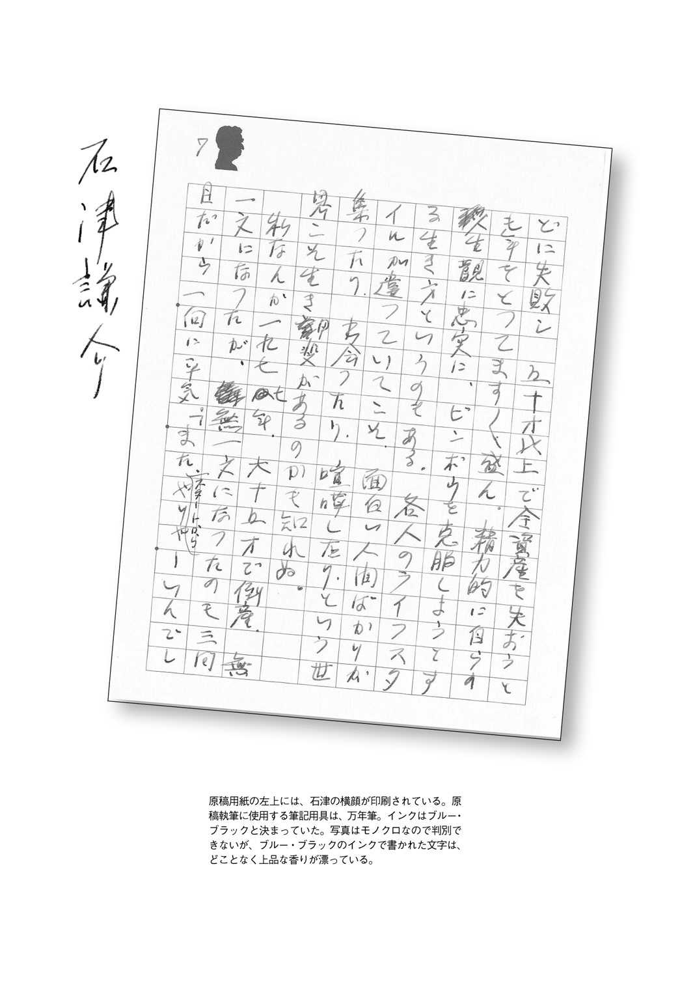
石津は、「食」に対するスタイルに独自の哲学を持ち合わせていた。私と過ごした時間は、必ず「食」が介在していたと言っても過言ではない。そこには「食」を超えた〝文化〟があった。本節では、石津的「食文化」哲学が特に垣間見える「寿司」「上海蟹」「故郷の味」を中心に、石津の食エピソードを紹介してみたい。
◆コハダ
石津との会食で、最も頻度の高い食べ物は寿司であった。特別な理由はなく、単に石津も私も寿司が好きだったからである。そして、最も通う頻度の高い寿司屋が、四谷の「纏 」であった。これは、石津の家の近くという地の利もあったが、なによりも、この店の寿司が旨かったからに他ならない。
石津の、纏での作法は、まず酒を頼む。纏の場合は、岩手の名醸「あさ開」を常温で。後は、何も言わず、石津の好みを知り尽くしている遠藤明店主か、相棒のとしちゃんが出してくれるものを、次々に食べ、かつ飲み、最後に必ず中トロで締める。で、私もそれに倣 うというより、私の前にも石津と同じものが並ぶので、結局は、そういうこととなってしまうのである。ただし、酒量は、私が石津の三倍ほど......。
石津の好みは多様だが、新子（コハダ。石津は、食物に関する文章を書くとき、必ずコハダと片仮名で書き、小肌のような当て字は使わなかった。したがって、品書きにそのように記されている店は敬遠するのが常だった）と、大蒜 で食べるほとんど生のしめ鯖は、特にお気に入りだった。
◆マグロ
しかし、一番好きなのはやはり中トロであった。とはいっても、二貫以上は食べなかった。
石津は常々、纏を東京一の寿司舗として挙げていた。その理由は、
「なぜ、ボクが纏が東京一の寿司屋だという理由はね、いつだったか、築地の河岸に本マグロが一本しか上がらないことがあってね、それが一本六〇〇万だか七〇〇万だかの高値で売れたことがあって、新聞にまで載ったんだ。その日、たまたま纏に行って、その話を親父としたことがある。親父は『へえ？』なんて顔をして聞いていたけど、後になって人から、あのマグロは纏が仕入れたと聞いてびっくりした。となれば、あの日食べた中トロは、そいつだったんだが、親父はそんなこと、おくびにも出しはしない。つまり、あの日には、東京中の高級寿司屋といえども、本マグロは出せなかったってことだ。東京の寿司屋は、なんと言ってもマグロが表看板だから、こんな芸当ができる家は、当然、東京一っていうことになるじゃないか」
というものであった。
マグロに関しては、こんなこともあった。
いつものように、石津と二人、纏のカウンターで一杯やりながら駄弁を振るっていると、やはり四谷の住人、名優・岩井半四郎丈がふらりと入ってきた。「やあやあ」ということになって三人で飲み始めた。いつもダンディな半四郎丈、今日は大きなアタッシェ・ケースを持っている。石津が、
「お珍しいですな」
と言うと、半四郎丈は、
「いや、今日、私のコレクションという、雑誌の取材がありましてね」
と言って、アタッシェ・ケースをカウンターに載せて開けた。
中を見ると、膨大な数の万年筆。石津は万年筆が大好き、私も物書きの端くれなので、ご同様に万年筆は大好き。そこで万年筆談義に花が咲く。やがて杯も重なり、話題は食べ物に移り、当然ながらマグロ談義が始まった。
口火を切ったのは半四郎丈。
「江戸っ子ってぇのは、マグロは赤身か、漬けしか喰わねぇんだ。大トロなんてぇのは、こんな脂の強いもんが食えるかってんで、捨てちまうか、葱の青いとこと煮てネギマにするくらいのもん」
と、「マグロは漬け・大トロ排斥論」を展開する。次いで私が、先年、旧友のロバート・パーカーに教えられたボストンの寿司屋で食べた、まだ若いボストン・マグロの漬けの旨さを吹聴する。ボストン・マグロの話が出ると、待ってましたとばかりに、石津が話し始める。
「そのボストン・マグロがだんだん南下して、ニューヨーク沖あたりへ来ると、結構大きくなって、スポーツ・フィッシングの対象となる。で、夕刻、彼らが帰ってくる頃、フルトンの魚市場辺りへ行くと、釣り上げたマグロを市場に売る連中がたくさんいる。彼らにとってマグロはあくまでもゲームの対象で、食べるなんてもともと考えてないから、その値段はタダ同然。
もうずいぶん昔になるけれど、ボクは、ニューヨークでそのマグロを一本丸ごと買ってきて寿司パーティを開いたことがある。調理道具や寿司飯は友人の奥さんを煩 わせてホテルに持ってきてもらった。で、マグロなんだけど、こいつがでかい。で、どうやってこいつを解体するか、考えに考えた挙句、バス・タブの中でやることに決めた。ところで、マグロってのは、ご存知のとおり脂っぽいから、包丁がすぐ切れなくなる。それを、ニューヨーク・タイムスかなんかの新聞紙で拭いながら、なんとか切り身にし、それを刺身に作って、寿司に握る。それをすべてボク一人でやるんだから、とにかく大騒ぎ。
その頃のニューヨークは、『斉藤』とかなんとか、とにかく日本料理屋が数軒しかなく、それも、ものすごく高かった頃だから、おかげさまで寿司パーティは大好評。用意した寿司はあっという間になくなった。ところが、問題はその後で、解体に使ったバス・タブが生臭く、脂と血でギトギトでヌルヌル、ホテルの親父に、酷くしかられてね」
「ボストンのマグロは旨いそうですね」
突然、漬け台の向こうで親爺の声がした。
「......、私の親類にマグロをやっているのがいましてね、で、そいつが言うには、フィリピン近くで獲れるマグロが馬鹿に旨いって言うんです。それで、飛行機で送るから、いっぺん食べてみてくれって、で、それがたぶん、明日くらい届くことになってるんです」
「明日？」
と石津が念を押す。
「はい、そんな段取りに」
「じゃ、明日は、午後五時からそのフィリピン・マグロ三昧ということにしよう」
半四郎丈も私も、否やはない。その日はそれでお開きとなった。その後、ルーティンの荒木町のバー「ピガール」へ寄って、石津を家まで送り、帰宅した。
翌日の午後五時、我々三人は纏のカウンターに勢ぞろいしたが、どうも親爺の様子がおかしい。石津が、
「例のヤツは？」
と尋ねると、
「まだ、届かないんですよ。空港に電話したら、確かにその荷物は到着してるってことなんですが......」
それじゃ仕方がないってんで、また、駄弁と酒宴。で、また、翌日の午後五時に......ということで、その日もお開き。そして、このパターンがさらに二日続いた。そして、四日目、三人が揃うと、親爺が面目なさそうに、
「どういうわけか、検疫に手間取っちゃって、日にちが経ちすぎて、あのマグロ腐っちゃったんで、処分しましたという連絡が入りましてね......」
我々三人、思わず顔を見合わせて、大笑い。というよりも、腹は立つわ、悔しいわ、ばかばかしいわで、笑って済まさなければ収まりがつかない。それでも、飲むものは飲み、食べるものは食べて、落語のような大団円。帰り道、石津の、
「もう、しばらく寿司はいいね」
の一言で、幻のフィリピン・マグロは一件落着した。
◆食べ物で遊ぶ
あるとき、電話で、
「花房さん、石津です。今日はね、寿司屋で遊びたいと思ってね。じゃ、五時に纏で......」
と呼び出しがあった。石津からの電話は、常に唐突で性急である。取る物もとりあえず纏へ行くと、石津はお茶（石津は、あがり、むらさき、しゃりなどという、いわゆる寿司屋の符 牒 は決して使わなかった）を飲みながら、すまし顔でカウンターに座っている。隣に腰を下ろし、前を見ると、珍しいことに食べ物が突き出し一つ出ていない。
私が、不思議な顔をしていると、石津はおもむろに、
「じゃ、新子を握って......」
と注文する。纏の新子はとにかく旨い。その日はごく小さいのを三枚づけ。しかし、たった二貫だから、あっという間に終わってしまう。食べ終えると、石津は、
「じゃ、そろそろ出よう。親爺さん、ここはこのままにしておいてね」
と言い置いて、さっさと店を出てしまった。あわててあとを追いかけると、石津はすでに、新宿通りに出てタクシーを停めて待っている。
タクシーに乗り込むと、一言、
「神保町へ」
と言ってすましている。
「今日は、どういう趣向なんですか？」
と尋ねると、石津は、にやっと笑って、
「あのね、食べ物で遊んじゃいけない......」
と言う。私が怪訝そうな顔をしていると、
「......と昔から言われている。確かにそのとおりで、食べ物自体を遊びの対象としてはいけない。しかし、食べることを遊びにすることは、ボクくらいの歳になれば、許されると思っている。あのね、前々から思っていたんだけど、世の中に絶対とか完全ってものは存在しない。で、話は寿司屋なんだが、寿司屋だって、完璧な寿司屋なんてのは存在しない。それは纏だってそうなんだ。つまり、店によって、得意のネタがあり、看板になっている。だから、本当に旨い寿司を食べたいと思ったら、一軒の寿司屋じゃ駄目なんだ......」
そこまで聞いて、私は石津の意図に気がついた。
「じゃ、鶴八ですか？」
「うん」
神田神保町の交差点近くでタクシーを捨て、鶴八の暖簾をくぐる。
「ヒラメと玉子を」
確かに旨いヒラメと玉子を一貫ずつ食べ終えると、親爺の
「なんてぇ客だ......」
という捨て台詞を背に店を出て、再びタクシーを拾って銀座に向かう。
「お次は？」
「新富」
銀座四丁目の交差点近くでタクシーを降り、新富寿司の客となる。
「煮烏賊と煮蛤、それから蝦 蛄 を握って。ツメは多めに刷いてね」
ここでも、それだけ食べて店を出る。再びタクシーに乗り、纏へ舞い戻る。親爺の、
「お帰りなさい」の声を聞きながら、石津は、
「中トロ」
と一言。ここで、お決まりの中トロ二貫でしめ。食べ終え、勘定を済ませると、
「さ、次だ」
と言って、店を出て、再度タクシーへ。
「先生、中トロでしめたんでしょ。これからどちらへ？」
という私の問いに答えず、石津は、
「一番町へ」
と、運転手に指示を出す。
その言葉を聞いて、私は腑に落ちた。石津の計画はまだまた終わってはいなかったのだ。
行き先は、一番町の「オー・バトー・イーブル」。
かつての「倶楽部東京」の真ん前に建つ、まるでたった今、パリから出前しましたというような瀟 洒 でこじんまりした、私の友人・故樋口良平がオーナー・シェフのフランス料理屋である。石津と食べ歩くようになって、私が石津を最初に連れて行った店である。以来、石津は夫人共々、私にも増してこの店を贔屓にしていた。
「いや、食事の後はデザートでしょう。樋口君、今日は何がある？」
看板後にもかかわらず、こんなわがままの聞く店であった。コーヒーと小さなケーキを前にして、今日の遊びの講評が始まる。
「纏の新子は絶品だったね。で、ヒラメは纏でもよかったんだが、今日は昆布じめしかなかったんで、鶴八にしたんだが、こいつはペケだった。だから、纏は昆布じめにしたんだ。玉子はよかったよ。それから、新富。あそこの煮物はお江戸一だね。あれが、江戸前の仕事というもんだね。濃いツメの味も抜群だ。纏もいいけど、煮物はちょっと上品過ぎる。中トロは言うことなし。それでしめて一〇貫、勘定はこれだけだから、一軒で食べるのと変わりはない。ま、タクシー代だけが余分だけど、それでこれだけ楽しめれば、かえってお釣りが来るって言うもんだよ。
ところで、もう一つ足りないものがある。樋口君、頼むよ」
脇で、ニヤニヤしながら聞いていた店主は、待ってましたとばかりにバーからカルヴァドスを持ち出してきた。コニャック・グラスに注ぐと、自らも席に加わり、話の輪に参加する。こうして、楽しい遊びは深更に及ぶ。
あらゆる意味で、石津は自身も楽しみ、周りにいる人間も楽しませる、まさに遊びの達人であった。
◆日本三大寿司屋はどこだ!?
寿司屋の話を続けよう。
纏のカウンターで、相変わらず愚にもつかぬことをさも面白そうに話していると、石津が急に真顔になって、こんなことを話し出した。
「今、日本中に何軒寿司屋があるか知らないが、その中には、我々の知らない、とびきり旨い寿司を食べさせる店があるはずだ。そこで考えたんだが、あなたとボクとで日本三大寿司屋を決めようじゃないか」
それを聞いてか、つけ台の向こうで親爺がチラリと石津の顔を見た。それに気づいてか、石津は、
「いや、日本三大寿司屋と言っても、お江戸は別。なにせ、お江戸は本家本元だから、お江戸を除いた日本三大寿司屋を......」
「しかし、そんな膨大の数の寿司屋の中からたった三軒を選ぶなんて、先生、そりゃ不可能ですよ」
「いや、できないこともないよ。というのは、それぞれの町にはやはり一番旨いとされてる寿司屋があるはずだろ」
「はあ......」
「で、その町の集まった市の一番という店があるはずだ。で、それらの市の集まった各都道府県での一番があるはずで、となれば、最終候補はわずか四七軒ということになる」
どうやら、石津は本気のようである。以降、北海道から九州まで、石津と旅をするたびに、前もって調べておいた店をかたっぱしから食べ歩いた。とはいえ、四七都道府県のすべてを経巡ることはできずに、石津は世を去ってしまった。日本三大寿司屋選びは、道半ばにして頓挫してしまったが、それでも二人で選んだ暫定版日本三大寿司屋は一応決まっている。石津の遺志を発表するのも無駄ではないと思い、あえてここに記しておく。
岐阜の「すし徳」、神戸の「新富」、小倉の「銀寿司」。これが、石津が定めた暫定版日本三大寿司屋である。
◆最後の会食
さて、楽しい話はいつまでも続かない。
第一章でも述べたように、私は母親介護のため、足掛け七年の間、郷里の名古屋に引きこもっていた。とはいっても、なんらかの用で月に一度ほどは上京しており、そのときは必ず石津の元を訪ねるのを常とした。
私が帰郷する少し前から、石津は衰えを見せ始めていた。記憶が少しずつ減退していたのである。
あるとき、上京して石津を訪ねると、
「おや、珍しい人が来たね」
と言って歓迎してくれた。しかし、話題は昔の話が多く、たびたび重複する。ああ、衰えは進行しているのだなと思っていると、夫人が、
「花房さんのことはちゃんと覚えているのね。最近は、人のことを忘れてしまうことが多くなって」
と言う。
「いい機会だから、外に連れ出して。最近はめったに外出しなくなって......」
と依頼された。さっそく、
「先生、たまには、表で食事をしましょう」
と言って、外へ出た。
石津の足取りは昔のままで、しっかりしている。駄弁を振るいながら、三栄町の通りをブラブラ外堀通りまで行って右折し、今度は新道通りを右に折れて纏の前へ出る。
迷わず暖簾をくぐり、いつものカウンターの端に座を占める。そして次の瞬間、石津の発した一言で、私は驚愕で打ちのめされた。
「花房さん、いい店だね。ここ、なんていう店？」
親爺もまた、この言葉に驚いたようで、無言で私に目を向けた。私もまた、無言でうなずくばかりだった。さらに、出てくるものネタの名を親爺に尋ねた。その夜、石津は纏で驚異的な食欲を見せ、飲み、かつ食べた。
適当なところで切り上げ、石津を連れて表へ出た。その途端、石津から出た言葉に再び驚かされた。
「久しぶりに行ったのに、親爺はどうしてあんなにしゃべらなかったのかねえ。しかし、纏の中トロはおいしいねえ。さ、じゃ行こう」
と言って、先に立って歩き始めた。行き先は、昔からのルーティン「ピガール」。ここでの石津は、完璧な石津謙介であった。私はあっけにとられながらも、本当にうれしかった。しばらく飲んで、石津を家まで送り、ホテルに戻った。
そしてこれが、石津との最後の会食となった。
しばらくして、石津が入院したという知らせがもたらされた。私はお留守見舞いと称して、状況のたびに石津邸の夫人を見舞うことにしていた。お土産は、纏の寿司折であった。が、その夫人もまた鬼籍に入られた。
平成一九（二〇〇七）年八月、「纏」の遠藤明店主が突然鬼籍に入ってしまい、石津が愛し、たっぷり詰まった思い出は、石津と共に、永遠の彼方に去ってしまった。
◆無類の上海蟹好き
「中国の通人はね、上海蟹を食べるとき、まず甲羅を外して、その中にある味噌を食べて、空になった甲羅を自分の前に置き、ガニを外して甲羅に入れ、それから、脚、身の順番で食べ進む。当然、食べ殻が出るから、それを前の甲羅に順番に詰めていく。食べ終えたときに、食べ殻が形よく甲羅の中にきちんと納まれば、その人は蟹食いの達人として認められるんだよ。で、上海蟹で旨いのは、シーズン初めの雄の味噌と精巣。そして、シーズン後半になると、雌の卵がいい。身はガザミ（渡り蟹）のほうが旨いと思うけれど、味噌と精巣、そして卵の濃密さは上海蟹に軍配を上げる」
石津は、自他共に許す大の蟹好きであり、私もまた、それに引けをとらない蟹好きである。さらに、ガザミを蟹中の第一とすることも同様であり、毛蟹、鱈場蟹、ずわい蟹などにはほとんど食指を動かさなかったのも、また同様である。
そんな石津が、時としてガザミ以上に情熱を持って食べ続けたのが、この上海蟹である。
上海蟹は、中国は上海近くの洋 澄 湖 を棲息地とするのを最優等とする、鋏 に毛を生やした淡水産の中型の蟹で、地元では「大 閘 蟹 」と呼ばれている。日本では「藻 屑 蟹 」とか、「津 蟹 」と呼ばれている蟹と同種のものである。
九月の下旬、上海蟹の捕獲が解禁になると、上海の街のレストランには大閘蟹到来の幟 が立ち、おりしも立ち始める涼風とともに、この街に秋の到来を告げる。
蟹の一番荷はまず北京に送られ、それから上海のしかるべきレストラン、香港、アメリカ、そして日本にも送られてくる。かつては香港の次が日本であったが、米中国交回復以後は、華僑の絶対数が多いアメリカが第四番荷を輸入している。しかし最近では、グルメ・ブームとやらで、経済力に物を言わせる日本が、香港と並び、第三番荷を輸入できるようになった（拙著『シェフの髭』より）。
上海蟹の解禁日は、何時幾日という定めがない。おそらく、上海の役人が気まぐれや思いつきで決めるのだろう。そのため、日本にいつ出荷されるかはまったく見当がつかない。
しかし、世の中には上海蟹好きが大勢いて、だれよりも先に一番蟹を食べたということが自慢の種となる。これは、かつてのボジョレー・ヌーボーの大騒ぎに似ていないこともないが、上海蟹のほうは、今述べたように、解禁日が不定なだけに始末が悪い。しかし、石津は、上海蟹到着の時期に関する情報のシンジケートを構築していた。
九月下旬から一〇月の五日くらいまでに一番荷が成田に到着することはわかっているので、その間は上海蟹のことで頭が一杯になり、仕事が手につかないような始末。そんななか、石津から電話がかかる。
「花房さん、今日の三時便だよ」
三時に到着ということは、検疫、税関を経て、都内に入るのは午後八時過ぎ。午後九時過ぎには......ということで、一番荷が入る「中国飯店」に直行することになる。
◆「上海蟹」巡礼
石津と私は、毎年こんな騒ぎを続けていたが、あるとき、誰よりも先に上海蟹を食べるためには上海へ行けばよいという、ごく当たり前の理屈に気づいた。二人で上海へ出かけ、蟹料理で名高い「緑波廊」へ行って思いっ切り食べたが、上海で食べる上海蟹は意外に小振りで、味もまた今ひとつであった。
その後も、
「大きいのが食べたかったら香港に限る」
という人の言葉を信じて、香港に飛び、何軒も上海蟹のはしごをした。しかし、大きいことは確かに大きかったが、こちらも大味で、感心しなかった。
「いや、知らないだろうが、上海蟹の穴場は、実はシンガポールだよ」
という言葉を信じて、さっそくシンガポールへ飛び、「良園酒家」で山盛りの上海蟹にむしゃぶりついた。味は......、確かに香港よりは旨いと思った。
上海蟹を求める二人の巡礼は、ついに病 膏 肓 の状態となり、ついには上海蟹を求めてニューヨークへ飛ぶことになる。
まず、北野ホテルのキチネット（キッチン付の客室）へ腰を落ち着ける。チャイナ・タウンへ行って、蒸籠 と中華鍋、食器と黒酢を買い、上海蟹ニューヨーク第一便の到着を待つ。といっても、さすがの石津にもニューヨークには蟹シンジケートはないらしく、朝起きるとチャイナ・タウンの魚屋へ行って、上海蟹の入荷を尋ねる。
「蟹、入ったかい？」
「没 有 （ないよ）」
こんな問答の繰り返しが続いた四日目のこと。とうとう上海蟹のニューヨーク初荷にありついた。一〇匹ほど買い求め、さっそくホテルに持ち帰って蒸して食べた。待ちかねたせいもあるが、これは旨かった。
このような蟹騒動も、上海からの荷が石津のもとにダイレクトに入るルートが開け、一挙に六〇匹ほどが手に入るようになってからは、二人の上海蟹に対する情熱は嘘のように冷めてしまった。
◆ディナーを安上がりにする知恵
蟹を求めて、毎日ニューヨークのチャイナ・タウンをほっつき歩いていたとき、石津が突飛な行動に出た。
大きな中華料理屋の裏で、従業員が四、五人ほど地面に座り込んで何か作業をしている。
それを見た石津は、突然彼らに声をかけた。自分もその中に加わり、私を呼ぶ。行ってみると、従業員たちはペンチで田 螺 の殻の先端を、ポキン、ポキンと折っている。石津は、その場にあったペンチを取り上げて、自身もまた、ポキン、ポキンと折り始めた。私にも手伝えという。わけもわからぬままに、私も見よう見まねで作業を手伝った。
大量の田螺の尻ポキリ作業が終わると、石津は彼らに何かを言って握手をすると、場を立ち去った。そのあとをあわてて追いかけ、
「先生、ありゃ、なんですか？」
と尋ねた。すると石津は、
「あれはね、空気穴を作るんだ。田螺の殻の先っぽを切っておくと、チュッと吸えば身がスルッと出てくる。しかし、あれは彼らの賄い料理で、メニューにはないはずだ。ま、細工は流々仕上げを御覧じろ......だよ」
と言って、ニヤニヤしている。
夕刻、石津が、
「さ、旨い晩飯を食べに行こう」
と言い、我々はタクシーで、再びチャイナ・タウンに向かった。
着いたのは、先刻、田螺のポキン作業をやった店。中に入ると、昼間の従業員たちが支配人やウエイターとなって、我々を出迎えてくれた。
「やあやあ、本当に来たのか」
というわけで、それからは、田螺をはじめ、家鴨の水掻きや舌など、次から次へと珍しい料理が出てくる。石津は、従業員たちと楽しそうに話しこんでいるが、こちらは中国語がわからないので、チンプンカンプン。まるで狐につままれた気分ではあったが、旨い料理を充分に堪能することができた。
さらに、その夜の勘定はものすごく安かった。どうしてなのかと石津に尋ねると、
「いやね、これはボクが天津時代に覚えたことでね、ああやって昼間手伝っておくと、妙な仲間意識が生まれるんだ。だから、初めての店でも昼間の一件が利いているから、十年の知己みたいに扱ってくれる。ま、旨いものが食べたかったら、このくらいの努力が必要だってことさ」
「なるほど......」
私は、チャイナ・タウンの雑踏の中で一人ごちた。
その後、私は母親介護のため、一時、実家の名古屋に戻ることとなり、石津夫妻は我々夫婦のために心づくしの送別会を開いてくださった。場所は、神田神保町の「新世界菜館」。このときに供されたのはもちろん、上海蟹であった。
◆天津生活と中華料理
天津生活での経験もあるのだろうが、石津は、中華料理に目がなかった。
「ボクの中華料理事始は、岡山での中学校時代。『広珍軒』という店で、今ではびっくりするような大きな店になってしまったけど、当時は屋台に毛が生えたような店だった。でも、ラーメンやワンタン、チャーハンなど、何を食べても旨かった。当時、ボクは中学校で野球部のマネージャーをやっていた。本当は選手になりたかったんだが、当時はチビだったんであきらめてマネージャーになった。で、選手を引き連れて、この店へ連れて行っておごる。ま、確かに旨いは旨かったんだけど、なにしろ質より量の年代だから、今食べたら旨いと思うかは保証の限りではない。
天津時代は、なにしろ本場だからいろいろ食べた。ボクが天津にいたと言うと、いろんな人が『本場の天津甘栗は美味しいですか？』とか、あるいは『本場の天津飯はどんなものですか？』と聞く。
天津にも秋から冬にかけて焼き栗の屋台が出ていたが、天津の栗は小さくてあまり旨くはなかった。焼き栗は、やはり北京が旨いと思う。
天津飯、時には天津井、天津麺なども聞かれるが、ボクが天津にいた頃には、そんな食べ物はなかった。きっと日本の中華屋さんがいいかげんにつけたものだと思っている。
中国は広いから、食べ物も千差万別。
言えることは、南部は米ができるから、主食はご飯。北部は米ができないので、麺や饅頭などの小麦粉製品が主食となる。天津は北だから小麦粉製品が主流で、『狗不狸』という店にはよく通った。この『狗不狸』が東京に店を出したと聞いて、懐かしくて飛んでいったが、中身はひどいものでがっかりした。
天津でよく食べたものに、餃子がある。
日本では焼き餃子が主流だが、中国では水餃子か蒸し餃子が主流、というより、焼き餃子はちゃんとした食べ物として認識されていなかった。
中国では、餃子は年越しの縁起物だから、あの形は昔のお金の形になぞらえてある。大晦日、北部中国の家庭では、餃子を大量に作り、年越しの礼と正月の、日本で言えば雑煮のような感覚だ。大量に作るので、当然あまる......、というよりも、最初から余らせるように作る。そして、元日を過ぎると、余った餃子を貧しい人たちに施すのである。
餃子をもらった人々は、それを自分で食べるのではなく、街頭にドラム缶を持ち出して火を入れ、その上に鉄板を置いてもらってきた餃子を焼き、それをまた道行く人に売る。これが『鍋 貼 』、つまり焼き餃子である。
身も心も凍るような天津の正月の街頭に流れる焼き餃子のにおいは、いやがうえにも食欲をそそる。しかし、その材料は余りもの、つまり廃物利用で、衛生観念の行き届かない当時のこと、剣呑だから、ボクは食べたことがなかった。
天津にはロシア人も多く住んでいた。実は、ボクの当時の彼女もロシア人だった。それは余談だが、ロシア料理のレストランにも旨い店が何軒もあった。今でも当時を思い出して、ロシア料理の前菜『ザクスカ』を作ることがある」
◆鮑
石津は、本当に中華料理が好きだった。石津と海外を旅行する際は、行く先々の都市で必ず一度は中華料理を食べた。パリの「東星楼」、ニューヨークの「ダブル・ヘイ」、フィレンツェの「青年中国」といった決まった店もあるが、たいていは行きずりにフラリと入ることが多かった。
先に述べたように、上海蟹を食べるためだけに香港に飛んだこともある。
また、あるとき、極めつけの鮑 を食べるために、石津夫妻、そして我々夫婦四人で再び香港に渡った。最高の鮑料理を食べるためには最高のホテルに泊まらなければならないという、わけのわからない石津の理屈で、我々は「ペニンシュラ・ホテル」に宿をとった。
香港の啓徳空港に到着し税関を出ると、制服制帽のショーファーが我々を待ち構えており、ブリティッシュ・グリーンのロールス・ロイスに案内をする。
その晩は、翌晩の鮑に備えて簡単にホテルの名物のカレーで済ませた。翌日の朝食、昼食も軽く飛ばして、午後六時、目的の「福臨門海鮮酒家」の客となる。予約はすでに東京から入れてあった。
自慢のフカヒレ、ツバメの巣、そしてメインの鮑と、この店の最高のコースを堪能した。この味の旨さを言葉で表現することは、愚かな行為である。
美味に陶酔した夢のような三時間はあっという間に過ぎ去り、勘定書きを前にして、予想はしていたが、改めてびっくりした。一生に一度という覚悟の下、わかってはいたが、改めてその高額さに驚いた。ここで金額はあえて示さないが、ここの勘定、ペニンシュラの勘定、その他諸々の出費は、それから半年近くも我が家の家計を圧迫し続けた。
ニューヨークへ行くと、石津と私は、ほとんどの夕食をチャイナ・タウンでとったといっても過言ではない。石津は、「ダブル・ヘイ」という小さな店の鳩の焼き物が好物だった。
「ここの鳩はね、セントラル・パークから黙って獲ってくるから、元手かからず。だから安くて、その分旨いんだよ」
と、毎回同じ冗談を言いながら、青島ビールを飲んだ。
一度だけ、石津の手作りの餃子を御馳走になったことがある。
小振りで、やや肉厚の皮に包まれた、餃子というよりもロシア料理の「ペリメニ」に似た感じ。もちろん、水餃子でいただいた。水餃子といっても、日本で出す茹でた餃子に醤油や酢を入れたものをつけて食べるのではなく、青菜を入れた薄味のスープに浮かべ、スープごと食べるスタイルだった。
このとき、石津自慢のザクスカも御馳走になった。こちらは人参が多く入った、ピーマンの肉詰めのようなものであった。
◆楼外楼
そういえば、石津夫妻と我々夫婦が最初に会食したのも中華料理だった。赤坂にあった「海皇」という店で、鯛の刺身のピーナッツ和えと、生きた車海老を老酒でしめる酔っぱらい海老が旨かったことを覚えている。
石津と付き合い始めた頃、お互いに好きな飲食店の情報を交換することに熱中した時期がある。
当時、私が役員を務める会社のオフィスが、原宿、表参道と明治通りの交差点のすぐ近くのビルにあった。その真向かいに赤坂の「楼外楼」の支店があり、私はその店をよく利用していた。
楼外楼は、メニューの数が三六五種もある名店だった。当時、支配人をしていた黄 成 恵 とは、そのレシピを巡って時には口喧嘩をするほどに親しくなっていた。この店には、馬場さんという超一流の名料理人がいて、当時は本店をしのぐとの評判を得ていた。
そんなわけで、私は石津をこの店に案内した。石津は、本店は知っていたが、この店は知らなかった。
当日、私は料理をすべて黄に任せた。
その日に出されたメニューは、すべて店のメニューには載っていないものばかりだった。石津はそれらのすべてに満足し、珍しく多めに飲んだ紹興酒のせいもあってご機嫌で、やたら饒舌であった。
「中国ではね、勘定を頼むときは、右手の人差し指で、こう、テーブルをトントンとたたく。それでもわからないときは、大声で『マイタン』と叫ぶ。漢字では、『賣単』と書くんだ。それから、なにか旨いものを食べたいときは、店の人に聞くのが一番だが、中国語は、北京語、上海語、広東語、福建語など、場所によってまったく発音が違う。だから、わからないときはこうやってテーブル・クロスに直接、字を書く。たとえば、魚料理の種類を知りたいときは、こうやって、魚と書いて、次に『？』をつける」
そう言いながら、石津は、内ポケットからボールペンを取り出して、いきなりテーブル・クロスの上に字を書き出した。それには温厚な黄も、さすがに怒り出した。
が、それも、一瞬のことで、黄もボールペンを取り出して、テーブル・クロスに「田鰻」と書き、
「先生、私も言葉はわかりますから、次回からは言葉でおっしゃってください」
と言って、ニヤッと笑った。
最近、当時のことを思い出して、黄は私にこんなことを言った。
「あのとき先生は、中国語は、君よりボクのほうがうまい......、こんなことを言ったんですよ。中国人の私にですよ」
以来、石津と黄は、肝胆相照らす仲となり、以降、我々は、中華料理といえば原宿の「楼外楼」へ行くことが不文律となった。
ところが、それからしばらくして「楼外楼」へ行ってみると、黄の姿が見えなくなり、味もまったく変わってしまった。
さて、これは困った。かけがえのない店を喪失した我々は、代替の店を探すでもなく、しばらくは中華料理から遠ざかってしまった。
それほど、当時の「楼外楼」が旨かったからである。
◆料理人・黄成恵の店
そんなある日、突然、黄から案内状が舞い込んだ。
六本木の芋洗い坂下、スウェーデン大使館の近くに、新しい店「彩威門」をオープンするとの知らせだった。
私はすぐに石津に電話をかけて日時を定め、さらに黄に予約の電話を入れた。
「彩威門」の料理もまた、ずば抜けて旨かった。聞いてみると、黄は支配人業が好きではなかったらしい。実は料理人として生きたく、長く準備をしてようやく自分の店をオープンさせたとのことだった。
石津と私は、これでまた旨い中華料理にありつける、と胸をなでおろした。
好事魔多し。
しばらくして「彩威門」もまた閉店してしまった。まさに、我々は掌中の珠を失った気分であった。そんなとき、原宿の楼外楼で、黄の下で料理長をしていた馬場と、当時副支配人であった中西が、六本木に「豫園」という店を開いたとの知らせがあった。さっそく石津を誘って行ってみると、これが原宿以上の出来で、しばらくはこの店に入り浸るようになった。が、この店もまた、しばらくして閉められてしまった。
また、しばらくして（やたら、しばらくしてが続くが、実にそのとおりなので仕方がない）、今度は、黄本人から横浜の中華街にある「三洸園」で料理長兼マネージャーをやっているという連絡があった。さっそく行ってみると、これがなかなかたいした店で、特に小さなフカヒレを塩味で仕上げた一品は絶品であった。
そうこうしているうちに、また黄の消息が途絶えた。が、それはわずかの間で、桜木町の「揚子江」という店にいるという知らせがあった。とりあえず行ってみると、そこは駅前のビルの地下二階にあった。一見するところ、ラーメンやチャーハンが主力の、いわゆる町の中華料理屋さんといった佇まいで、ちょっと驚いた。中に入っても、そのとおり。訝しがっている私を見て、黄が出てきて、こう説明した。
「ここは、実は私の母親の店なのです。私が三洸園にいたとき、ここを手伝っていた弟が独立することになりました。それで、私の中華料理の原点でもあるこの店を潰すわけにもいかず、結局ここへもどってきたのです」
そういえば、かつて黄から母上の店の話を聞いたことがあった。
「母の店はね、日本式にまったく妥協しない店で、夜、仕事を終えた中華街の料理人たちが食事をしにくるような店で......」
これを聞いて、旨そうだなあと思ったことを覚えている。
私はさっそくこのニュースを石津に伝え、夫妻と我々夫婦四人で食べに行った。石津夫妻がＪＲに乗って遠出するなど、稀有なことであった。
そして、黄の腕は冴え、味は前にも増して深みを出していた。
そうこうしているうちに、私は母親介護のため名古屋に戻り、黄の店ともしばらく疎遠になった。
ある晩、突然、名古屋の自宅に、黄から電話があった。
「石津先生ご夫妻が今日、店に来てくれたんですよ。息子さんの車でいらしゃって、で、とても旨いと」
石津の来店がよほど嬉しかったのだろう、黄が興奮しているのは、その口ぶりからよくわかった。
数年後、母親の三回忌を済ませた私は、名古屋から横浜に居を移した。その移転のお披露目のため、友人知人を招き、馬車道近くに移転した「揚子江」で開いた。
本来なら最上席に座っていただくはずの石津はすでに入院しており、参加は望むべくもなかった。しかし、穂積和夫、林田昭慶、伊藤紫朗など、参会してくださった方々の多くが石津とは旧知の間柄であり、話題は自然と石津との思い出話となった。
揚子江には、石津の写真が何点か掲げてあった。黄も、
「若い頃は結構不良で、本 牧 （横浜市）では知らない人がいなかったくらいでした。その頃、着るものといえば、ＶＡＮ。私は、今でも何点かあの頃の服を持っています。私にとって先生は、神様のような存在でした。ですから花房さんに連れられて、先生が最初に店に来られたときは、本当に嬉しくて......」
と、その思い出話を語った。
石津が愛してやまなかった料理人・黄成恵と、彼の店「揚子江」は、今も弁天通で孤高の味を守り続けている。
◆春──鰤、しろうお、べたら、蝦蛄など
「瀬戸内海というのは、読んで字の如しで、まさに内海。大雑把に言うと、潮水がゆったりと流れる大きな川のようなもの。それでいて、両端の関門海峡と鳴門海峡は急流で、つまりは、あらゆる海の要素が詰まっているし、餌が豊富だから、海産物が旨い。岡山は、瀬戸内のほぼ真ん中だから、特に旨い。
岡山の初春、正月の祝い魚は鰤 。といっても、残念ながら瀬戸内海で鰤は獲れないので、日本海側から運ばれてきた塩鰤が、賀の膳に供されることになる。塩鰤は、雑煮の具にも使われる。これは石津家の家例だから、東京に移ってからも、我が家はずっと鰤雑煮を食べている。
春になると、まず『しろうお』。岡山では『しろいお』と呼ぶ。漢字では『素魚』と書き、東京あたりでいう『しらうお』（白魚）とは、まったく違う種類だ。
ボクの生家の近くを流れる旭川の河口あたりに、そう、二月から三月頃、あがってくるのを四 手 網 で獲る。透き通って消え入りそうなやつを、生きたまま二、三匹、口に放り込むと、舌の上で踊り、これがなんともエロチックな感触。昔はよく獲れたから、味噌汁の具や、これも岡山特産の黄韮と玉子とじにして食べた。今考えると夢みたいな話だ。
昔の人は〝しろうおは雄でなければならない〟などと、難しいことを言っていたが、ボクはそんなことは構わず、友人に頼んで、毎年生きたままビニール袋に入れたのを送ってもらい、季節の口福を楽しんでいる。
春はまた、『べらた』の季節。これは穴子の稚魚。獲れたては、腹の中まで見えるほど透き通って、実に美しい。こいつは酢味噌で食べる。べらたには苣 （キク科の野菜）の葉を添えるのが岡山のしきたりだ。
それから、『あいなめ』『さより』、そしてボクの大好物の『いかなご』。小さいのは佃煮にする。これは煮えあがったときの姿が折れ釘に似ているから『釘煮』という。釘煮にならなくなった大振りのヤツは、さっと茹でて、二杯酢なんかでやっつける。
そうこうするうちに『べか』が獲れはじめる。本当は、『べいか』というらしいんだが、岡山では、べか。子持ちを薄味に煮あげたのは、いくつでも食べられる。さっと茹でて酢味噌和えや木の芽和えにしても旨い。
その頃、玉島の乙 島 では『乙島じゃく』が獲れる。いわゆる『穴蝦蛄 』で、こいつは獲り方が面白い。潮の引いた潟の泥地に小さな穴がやつらの住処。まず、穴の周りをチョンチョンと固める。それから古い筆を穂先のほうから穴の中にゆっくり差し込むと、その先を挟むから、タイミングを見計らって筆を持ち上げると、穂先にぶら下がったまま出てくる。と書けば簡単なようだが、これにも結構コツがあって、磯遊びの中では面白いほうだ。茹でたり、薄味で煮付けたりして食べるが、特別に旨いというものでもない。ただし、味噌汁にするとだしが出て、こいつは旨い。
もちろん、本物の『蝦蛄』もシーズン。岡山の蝦蛄は少し小ぶりだが、味は濃い」
◆初夏──鰆、鯛
「晩春から初夏にかけて、岡山の魚の二大巨頭、『鰆 』と『鯛』が登場する。
鰆は年間を通じて獲れるけれど、春の魚と書くくらいだから、この頃が一番旨い。岡山で刺身といえば鰆の刺身のこと。鯛はというと、造り、あるいはお造りという。
鰆の刺身はもちろん旨い。しかし、刺身で食べるのは、秋口の脂ののったときのほうが、より旨いと思う。
この時期の鰆料理の真打ちは、なんといっても『炒り焼き』。
底が少し持ち上がった独特の薄い鉄なべを熱して、そこにすき焼きの割り下のような汁を入れる。汁が熱されて、泡立ち、焦げる寸前に、刺身に造った鰆の身を箸で二、三回炒りつけて食べる。ちょっと温まった部分と、冷たい部分が渾然として、なんとも旨い。あるテレビ局の番組でこの炒り焼きを再現することになったんだが、残念なことに、どこを探しても炒り焼き用の鍋が見つからない。で、普通のアルマイトの鍋をトンカチでたたいて似たものを作って、ようやく収録した。食文化もまた、時代につれて変わってしまうと改めて気づかされ、ちょっと淋しく思った。
岡山では、八十八夜から何日くらいだったか、確か一月くらいだったと思うが、その時期を『魚島』（『いおじま』と発音する）と呼ぶ。鰆や鯛が群れをなして泳ぐ季節という意味である。この期間になると、見事な鯛をザルに乗せて、『魚島でございます』といって贈答する習慣があった。
ボクは子供の頃から鯛が好きで、造り、焼き物、煮物、あら煮、兜煮、兜蒸し、潮汁、味噌汁にして、無駄なく食べた。
鯛で一番旨いのは頬身と眼肉。それから、これは造りにするとよくわかるのだが、背、腹、尾の近くでは、味がまったく異なる。
昔の通人は、寿司屋で鯛を握らせる場合、背、腹、尾と指定して三貫握らせた。これは、寿司屋にとって大変な話で、柵にしてない一匹丸ごと使わなければならない。といって断るわけにもいかず、注文どおりに握って出す。通人は、勘定の際、鯛一尾分払って、残った鯛は店の儲けとなる。これは、四谷の『纏』の親方から聞いたのだが、昔はずいぶん粋な人がいたようだ。
このように、鯛は身から皮、子や内臓まで、すべてを食べることができ、残るのは骨だけだが、その骨とてもったいない。煮物の場合には、残った骨と煮汁に湯を注いで骨湯にして飲み、骨はしゃぶりつくす。また、三枚におろした中骨には、骨と骨の間に肉があって、こちらももったいないから、そのまま焼く。骨と骨の間に身が白く見えるので、これを称して『障子焼』という。身の脂が骨に回って、揚げたようになり、骨ごと食べられる。鯛は、まったく無駄のない、まさに魚類の王様だ、とつくづく思う。
ところで、鯛の骨には、大 龍 、小 龍 、三ツ道具、鍬 形 、竹馬、鳴門骨、鯛の福玉、鯛 中 鯛 など、『鯛の道具』と呼ばれる、特別な形をしたものがある。その中の鯛中鯛は、胸ヒレの部分にあって、これが不思議なことに鯛の形をしている。だから鯛の中にある鯛で、一般には『鯛の鯛』と呼ばれている。
ボクは、あるときから自分の食べた鯛の、鯛の鯛をすべて取っておくようになった。それがいつの間にか、かなりの数となった。それを、ある雑誌が取り上げたおかげで、まるでボクが『鯛の鯛コレクター』だと誤解されるようになった。
以来、『こんな大きなのが見つかりました』などと言って、わざわざ届けてくる人が現れるようになった。ボクは、単に自分の食べた鯛の思い出にとって置いただけのことで、人様がしゃぶった鯛の骨などにまったく興味はない。そう言ってお断り願うのだが、あるとき、馬鹿でかい、『マグロのマグロ』を持ち込んだヤツがあって、さすがにそれには驚いた。マグロのマグロは、確かにマグロの形をしている。しかし、それも『今度、鯨の鯨があったら、ぜひ持ってきてください』と言って、丁重にお引き取り願った」
◆夏──オコゼ、穴子、鱧
「夏になると、『あいご』『すずき』『太刀魚』『ちぬ』（黒鯛の子）『ぼら』『鱚 』などが食膳を賑わすようになる。
さて、夏の岡山にも『オコゼ』と『穴子』、そして『鱧 』という三大巨頭がある。
岡山の夏の魚の代表、オコゼは、『虎魚』という文字面でもわかるような、そのいかつく、恐ろしい形相からは想像できないほどの繊細な味を持つ。通常は、河豚 のような薄造りや唐揚げにして食べるが、ボクは煮物、そしてなによりも少し甘めの味噌汁にするのが好きだ。
穴子はボクの大好物で、特に焼き穴子は食卓に欠かせない。大振りのやつは蒲焼風の焼き穴子。小振りのは薄味の焼き穴子がいい。この小振りの焼き穴子は、残念ながら兵庫県の高砂のやつが一番いいようだ。
穴子だけは、日本全国、どこで食べても旨いと思う。愛知県の日 間 賀 島 の小振りなのを醤油干しにしたやつも旨い。あの辺では、穴子のことを『目白』と呼んでいるけれど、よく見ると、他の魚に比べて確かに白目の部分が大きいようだ。
江戸前の穴子も結構。特に羽田沖で獲れるのがいい。第一に天麩羅。一本丸揚げにして、板さんが目の前で長い金箸でサクッと二つに割ってくれると、パッと湯気が上がる。こいつは、濃い目のお江戸風の天つゆでやるに限る。寿司だねの穴子も好物。薄味で煮付けた穴子を食べれば、その店のグレードはすぐに知れる。この煮穴子を温めなおしたり、焼いてくれる店があるけど、酒の肴にはそれでもいいけど、握ってもらうのはやはり冷たいやつに限る。
梅雨を越すと、鱧がめっぽう旨くなる。
魚の中では、ボクは鱧が一番旨いと思う。もちろん鯛も旨いし、鰆も旨い。しかし、鯛も鰆も、一年中手に入る。ところが、鱧は、初夏から初秋にかけての一時期のみ、本当の味がのる。それが梅雨明け、大阪の天神祭りの頃で、この頃になると、鱧が食べたくてたまらなくなる。ところが、東京の人は鱧の旨さをほとんど知らない。というわけで、このシーズンだけは、万障繰り合わせて京都に出かける。この時期、京都のしかるべき店では、ほとんどが鱧料理を出すが、ボクは鱧だけを堪能したいので、二条室町の『堺萬』へ出かける。
ここの鱧は、言うまでもなく瀬戸内産。出てくるものはというと、鱧寿司、鱧と胡瓜の酢の物、鱧の洗い、鱧の落とし、鱧の子の煮たやつ、鱧の信州蒸し、鱧の照り焼き、鱧の柳川、鱧のすまし、そして鱧ご飯......で、まさに鱧オンパレード。充分堪能して東京に戻るのだが、帰ると、またすぐに行きたくなる。つまり、そのくらい鱧には執着心がある。だから、どこへいっても品書きに鱧の一字を見つけると、駄目だとわかってはいても、やっぱり注文したくなる」
◆秋──アミ、鯒、ママカリ
「秋口になると、児島湾口に『アミ』が沸く。アミはアミで、説明のしようがないけれど、言ってみれば極小の海老みたいなもの。このアミが大量発生することを、岡山では『アミが沸く』という。東京では佃煮の具材として知られているが、岡山では甘辛く炊いてご飯のおかずにする。味の濃さは家庭によってまちまちだ。
このアミを塩辛にしたのが『漬けアミ』。岡山の家庭なら、どこの家にもある常備菜で、もちろん我が家でも欠かしたことはない。この漬けアミ、岡山の特産だとばかり思っていたら、韓国に行ったとき、茹でた豚の上に大量に乗せて出された。食べてみたら、これが漬けアミとまったく同じ味で驚いた。
秋になると『鯒 飯』が食べたくなる。
『真 鯒 』は、刺身や煮物にしたり、鍋の具にもよく使われる、上品で淡白な魚だが、岡山ではこれを鯒飯にして食べる。
大振りの鯒の腸とエラを抜き、適当に切って茹でる。茹で上がったら、鯒を取り出し、皮や骨、頭を取り除いて身だけにして、布巾で包んでよく絞り、さらにすり鉢に入れてパラパラにする。茹で汁はこして、醤油と味りんで薄く味付けしておく。
炊き立てのご飯に鯒の身を乗せ、その上に刻んだ芹を大量に乗せて、調味した茹で汁をかける。お茶漬けのようにサラサラやると何杯でもいける。これも岡山の家庭の味だ。
秋はまた『ママカリ』の季節でもある。
あまりに旨いので食が進み、隣の家へご飯を借りに行く──だから『まんま借り』という、もはや伝説の小魚。駅でも酢でしめたのをビンに入れて売っているから知っている人も多いだろう。いずれにしても、岡山を代表する魚であることは間違いない。
ボクは、このママカリを南蛮漬けにする。普通、南蛮漬けは、小魚を一度唐揚げにしてから南蛮酢に浸すのだが、ボクは揚げないで、焼いてから南蛮酢に漬ける。このほうがさっぱりして旨いと思う。しかし、なにしろ小さな魚だから、始末が大変で、結構手間のかかる料理だ。酢でしめたのも悪くはないが、ボクは江戸前のコハダの新子の方に軍配を上げる」
◆冬──ヒラメ、カレイ、ガザミ、牡蠣
「冬は、なんといっても『ヒラメ』に『カレイ』。これはあえて説明の必要もないだろう。
ボクにとって、岡山の冬の楽しみは、『ガザミ』と『牡蠣 』。
ガザミは渡り蟹や菱蟹とも呼ばれ、ボクは、蟹の中の王だと思っている。甲殻類の中では一番旨い。毛蟹、松葉蟹や鱈場蟹なんて、ガザミの前ではたんなる兵卒に過ぎない。まして、鱈場蟹なんか、生より缶詰のほうが旨いと思っている。味噌にしろ、内子にしろ、ほかの蟹に比べると、味が上品だ。身の味は淡白にして濃密。雌の甲羅の中に張り付いた内子はまさに絶品だ。人は二杯酢や三杯酢で食べるが、ボクは何もつけないで、ただ茹でただけのやつを、ひたすらに堪能するまで食べる。甲殻類は持病の通風に悪いのだが、ガザミの前ではそんなことは言っていられない。
岡山の牡蠣は小振りだが、味が濃いとの評判を聞く。ボクは牡蠣が好きだが、食べるのは生かフライに限っている。といって別に理由があるわけではなく、牡蠣そのものの味と、フライとウスター・ソースの（これはリー・ベリンズに限る）味のバランスが好きだからである。
子供の頃、児島湾の堤防のところに小さな牡蠣がびっしりと張り付いていたのを見たことがある。近所の子供たちが、それを取って食べているのを見て羨ましく思った。そのことを親に話すと、『あれはババ垂れ牡蠣で、チブスになるから、絶対に食べてはいけない』ときつく言われた。ババとは、つまり下肥のことで、牡蠣に下肥を掛けると旨くなるといった俗説があったのかもしれない。しかし、いくら衛生観念のない時代とはいえ、まさか、そんなことはしなかったろうと思っていたら、あるとき旧友から、『謙ちゃんも馬鹿だなあ。そんなことをするわけがないじゃないか。あれは、堤防あたりにくっついた牡蠣は、青白くって、細くてしおたれて、子供の垂らす鼻水みたいに見えるから、洟垂れ牡蠣って言ったんだよ』と聞かされて、やっと腑に落ちた。しかし、ババ垂れ牡蠣の呪縛は、いつまでも残り、生牡蠣を最初に食べたのは、それからずいぶん後のことになる」
◆岡山名物「魚島寿司」「祭り寿司」
「さて、岡山の名物に寿司がある。
前に述べた魚島の頃になると、鯛などの海産物と同様に、寿司を作って贈答する習慣がある。これを『魚島寿司』と呼ぶ。これは、いわゆるバラ寿司、ちらし寿司の類だが、この寿司、まず、配られる重箱がすばらしい。それぞれの家の定紋入りの蒔絵のもので、その上に金襴の袱 紗 を被せて配るという大仰なもの。初めて見る人はびっくりする。そして、重箱の蓋を開けて二度びっくり。というのは、重箱の中はぎっしり詰まった寿司飯しか見えないからだ。
その昔の備前岡山は、豊かな米の生産地だったから、町人やお百姓にも裕福な人が多かった。しかし、それにつれて生活が派手になってきたので、お殿様が、贅沢はまかりならん、町人、お百姓の食事は、今後、一汁一菜にすべしとのお触れを出した。そのお触れに、町人やお百姓は、一時、恐慌をきたした。しかし、岡山は反骨精神旺盛なところだから、それならばということで、寿司を作った。つまり、どれだけ贅沢な材料を豊富に使っても、寿司は寿司で、これは一菜と数えるのだから構わないと、ことさらに豪勢な寿司を作った。しかし、これも贅沢であるとのお触れで、いけないことになった。しかし、岡山っ子たちは負けてはいない。今度は、重箱の底に具を敷き詰めて、その上に寿司飯をつめる方法を編み出した。これならば、突然の検査で蓋を開けられても寿司飯しか見えないから、咎められることはない。食べるときは、重箱に皿を当ててひっくり返す。これで、昔のままの寿司が出現する仕掛けだ。
その伝統は現代まで引き継がれ、魚島寿司をはじめ、町内の秋祭りには『祭り寿司』、筍 の季節には『筍寿司』、松茸の季節には『松茸寿司』と、岡山では何かあると寿司を作って配ることになっている。
あるとき、この名物寿司を駅弁にしようという話が持ち上がり、それはいいということで、さっそく作って駅に並べたが、これがさっぱり売れない。考えてみれば当たり前で、駅弁売り場にはサンプルが並べてあるのだが、祭り寿司は、上下逆だから、サンプルにしてもご飯しか見えない。それで、ひっくり返して、具のあるほうをサンプルにしたら、売れ始めたものの、今度はお客さんからのクレームが発生した。具だくさんで旨そうな寿司だと思って買ったのに、具が何も入っていないとの抗議が続き、駅弁屋は頭を抱えた。しかし、頭のいい人はどこにでもいるようで、弁当の底を透明のプラスティックにすれば、底に具があることが一目瞭然というアイデアを出した。これが好評で、今も人気弁当の一つになっているそうだ。
早い話が、最初から具を上に乗せればよいのだが、祭り寿司の伝統を頑なに守るという、昔ながらの岡山人気質がわかって、少し微笑ましい。
岡山の寿司の中で、ボクの苦手なものが一つある。それは『鯖 寿司』。これは大阪の松前寿司やバッテラとは違い、大きな鯖を頭ごと開いて骨をはずして塩をして、しばらく置く。これに炊き立てのご飯を詰めて、桶の中に並べる。そして、重石をして幾日か置くと中のご飯が醸酵して、鯖とご飯が馴れた頃に切って食べるというものだが、その匂いといったら......。ボクもたいていのものは食べるけれど、これだけはご勘弁願っている」
◆淡水魚など──鮎、鯉、鮒、ガラ海老など
「今まで海の魚のことばかり述べてきたが、岡山は淡水魚もよく食べる。まずは高梁の『鮎』。鮎は、お国自慢の強い魚、日本全国どこへ行っても、うちが日本一だといって譲らない。
確かに鮎所では、時期と店さえ間違わなければおいしい鮎が味わえる。しかし、餌が動物性から植物性に変わる一〇センチくらいのやつを塩焼きにして頭から食べる旨さと、子を持った落ち鮎の煮浸しに関しては、やはり高梁の鮎でなくてはならぬと思う。
鮎以外には、『鯉』。これは洗いにして酢味噌で食べる。それに鯉こく。寒中には、『寒鮒』。これは刺身が一番。はちきれんばかりの子を取り出して、ちょっと湯がき、黄金色になったところをパラパラにほぐし、これを細切りにした鮒の刺身にまぶして食べる。普通に刺身に造ったのを、酢味噌で食べるのも悪くない。
鮒で思い出したが、名古屋で食べた『鮒味噌』という食べ物。大きな鮒を名古屋名物の赤味噌で長時間煮込んだもので、仕上がりは、味噌と鮒とが渾然一体となり、頭から尻尾まで、骨も内臓も、エラさえも食べられる。ボクは、これは日本の『パテ』だと思った。
さて、最後に、ガラ海老について述べておきたい。
これは、殻付きの干し海老で、中国あたりでいう干し海老とは大きさが違う。本当の名は知らないが、芝海老やあかしゃ海老といった種類のものと同じ大きさくらいで、干しあがった姿も見事である。毎年、友人、知己から恵贈されて、我が家には常にストックがある。原稿を書き終えてホッとした午後、皮を剥きながら食べるガラ海老は、ボクにとって最高のビールの友である」
人間、ある程度齢を重ねると、子供の頃の味覚に郷愁を覚えるようになる。石津謙介の場合は、それが特に顕著で、彼の味覚に対するレギュレーションは常に、郷里・岡山にあった。
石津の持論である「ＯＫライン」論によれば、食物文化の境目は、富山県と新潟県の境にある親不知 と、三重県の桑 名 を結ぶ線であるという。親不知の頭文字「Ｏ」と桑名の「Ｋ」をとって名付けられた。このラインより東は縄文文化圏として鮭文化圏、豚肉文化圏、蕎麦文化圏であり、それより西は弥生文化圏として鰤文化圏、牛肉文化圏、うどん文化圏であると定義している。となれば、岡山のハレの魚は当然「鰤」ということになる。
第一章で述べたように、私の父は岡山出身であり、終の棲家となった名古屋に移ってからも、正月には鰤を欠かさなかった。その子である私が名古屋で生を受け、高校卒業まで育ったにもかかわらず、岡山の味に共感を持つのは、父親の遺伝子によるものではないかと考えている。
◆東京で「べらた」に手を出すべからず
毎年春の初めになると、「しろうお」が届いたので食べにおいでという石津から電話があった。で、行ってみると、そこには必ず女性の相客が待っていた。石津は、しろうおの入ったビニール袋をテーブルに持ち出し、ガラスの器に開けると、小さな網で二、三匹掬い上げ、まず女性に、
「ほら、指でとって、そのまま口に放り込んでごらん」
と言ってニヤニヤしている。
なにしろ生きたままなので、女性は躊躇するが、意を決して口の中に放り込むと、突然妙な顔をする。それを見て、石津は、
「どう、キッスの味がするだろう」
と言って、大笑いする。その女性の〝妙な顔〟が見たいがための年中行事なので、相客の女性は毎年変わる。若い女性編集者が多かった。
石津も、さすがに「べらた」だけは、東京で食べられるとは考えていなかったようだ。当時は、月に二度、石津邸で石津夫妻と私と家内で会食する機会があり、一度は外食、もう一度は、石津邸で何かを作って食べることになっていた。
そんなある日、話に花を咲かせる夫人と家内を石津邸に残し、石津と私は四谷近くのスーパーに買い物に出かけた。石津は、先に献立を考えるのではなく、素材を見てから献立を決めるので、スーパーの棚という棚を丹念に見て歩く。そして、突然、
「エッ！」
という声を上げ、
「花房さん、ちょっと、ちょっと......」
と手招きする。
「どうしたんですか？」
と尋ねると、石津は棚の一カ所を指差して、
「ほら、べらたがある」
という。
「買いますか？」
と言うとうなずくので、二パックをカゴに入れた。
「すぐに食べたいから、出来合いでいいから酢味噌を探そう。それから苣だ......」
石津は、出来合いの食品を嫌っていたから、これは稀有な発言だ。酢味噌はあったが、残念ながら苣はない。で、結局ほかには何も買わず、飛ぶようにして帰宅した。
家へ帰ると、石津はさっそくべらたを始末して、食膳に乗せた。そして、自らとって置きの酒を取り出し、皆に勧めながら箸をとり、酢味噌で和えたべらたを口に入れた。ところが、妙な顔をしている。そして、立ち上がると台所へ行ってパックを眺めている。
私も、箸を取って一口口に入れた。ヌルッとして、ツルッとして、水のようで、舌の上には酢味噌の味だけが残った。
テーブルにもどった石津に、どうしたのかと聞くと、
「いや、場違いのものには手を出さないほうがいいね」
と言って笑いながら、パックに貼ってあるシールを差し出した。そこには「高知産のれそれ」と書いてある。
「高知は外海だから、味が荒っぽいんだね。『のれそれ』だって」
それ以来、石津はべらたの話をしなくなった。
◆仙台の「鱧」
先の引用文にもあったように、石津は鱧には目がなかった。
あるとき、仙台の「アイビー・クラブ」の会合後の夕方、国分町のあたりを二人でブラブラ歩いていると、突然、石津が、
「花房さん、あれ、鱧じゃないか？」
と言って、居酒屋らしい店の表に向けた水槽を指差した。覗いてみると、確かに鱧らしい魚が一匹泳いでいる。
「先生、ここは仙台、鱧の北限を越えてますよ」
と答えたが、そのとき、石津はすでにその店の暖簾をくぐっていた。石津は、店主に向かって、
「あのね、水槽の中の鱧、あれ、半分は照り焼きに、もう半分は落としにして......」
と注文した。
店主は妙な顔をしていたが、しばらくして水槽から鱧を取り出し、料理を始めた。我々は、突き出しで酒を飲みながらそれを待つ。出てきた皿は間違いなく鱧で、なかなか旨そうだ。だが、一口口に入れて、互いに顔を見合わせた。脂の乗りもなく、身がパサパサで、まるで味がない。できの悪い鱧の干物を食べているようであった。落としのほうも同様で、ひどく不味い。そこで、とにかく勘定を払って、店を出た。
私が、
「迷い鱧でしょうか？やはり場違いは......」
と言いかけると、石津はそれを制し、
「早く行こう。ありゃ、親爺のペットかも知れないぞ」
と、真顔で言った。
べらたの件とご同様に、グルメで知られる石津にもたまにはこのような失敗談もあった。
◆鯒飯
鯒飯は父の好物で、我が家でもよく作ったので、その旨さはよく知っている。
墓参で父の郷里の岡山に行く際には、石津に岡山の旨い店を聞いていくのが常だった。岡山にはいろいろ旨い店があるが、石津に教えられた中で出色なのが「おほり」という小料理屋だった。
カウンターに座り、石津に紹介された旨を話し、料理も石津の指示どおり、おまかせで頼んだ。家内ともども、岡山の恵物に舌鼓を打った。その中に「ママカリの南蛮漬け」があった。石津の言葉どおり、ママカリは揚げずに焼いてあり、とても旨かった。さらに、黄韮の玉子とじが出た。しろうおの時期ではないので、単に黄韮と玉子だけのシンプルな料理だが、これも実に旨かった。しめに、オコゼの味噌汁でご飯を食べていると、二階から、上品な紳士が降りてきた。店主が、我々のことを石津からの紹介できた旨を話すと、紳士は丁寧に挨拶され、
「数ある店の中で、この店を紹介するとはさすがに石津さんだなあ」
と言った。聞けば、紳士は当時の岡山県知事で、この店はつまり、そのような店であった。
翌日に墓参を済ませ、岡山のデパートの地下で特産の黄韮を大量に買い込んだ。今でこそ、中華料理の材料として、黄韮はこのあたりのスーパーでも手に入るが、当時は、東京では手に入らない貴重品であった。
ところが、帰りの新幹線の中で問題が発生した。私たちの席のあたりで妙な臭いがし、周りの人も妙な顔をしている。暖房の温気のせいで、鞄の中の黄韮が発する臭いだと気がついたが、捨てるわけにも行かず、東京まで知らぬ顔の半兵衛をきめこんだ。
ママカリもまた、生のものは東京では手に入らない。そこで、石津はママカリに代えて、同じようなサイズの小鯵で南蛮漬けを作る。こちらも揚げずに焼いてあり、何度も手作りを御馳走になった。今では、我が家の定番のおかずになっている。
◆バーでガザミ料理
ガザミに関する石津の見解は、私もまったく同意見である。ただし、私の場合は岡山産ではなく、愛知県の三河産を一番とする。
石津は、時々、夫人を伴って、当時、西葛西にあった我が家を訪問された。一升瓶をぶら下げて、地下鉄で来られるのだから恐縮する。
我が家の近所には、ダイエーとジャスコという二軒の大きなスーパーがあり、石津はその食料品売り場を見比べるのを楽しみにしていた。当時、ダイエーの傍らに、浦安の漁師がやっていた小さな魚屋があった。ちゃんとした魚屋では扱わないような、さまざまな小魚や貝類、蟹などを売っており、石津は必ずその店に寄った。
あるとき、その店に小振りなガザミが箱に入って置かれていた。もちろん、東京湾で取れたもので、みな生きている。ガザミに目のない石津は、なんと箱ごと買いこみ、半分を我が家で茹で、ただひたすらに食べ、残りは我が家のクーラーに入れて持ち帰った。たぶん、二四、五匹はあっただろう。私もご相伴に預かったが、小さいながら身はしっかりしており、実に旨かった。しかし、後で家内から、せっかく用意したご馳走が無駄になったと、さんざんいやみを言われたことを付記しておく。
またあるとき、小倉の旦 過 市場を二人で歩いているとき、魚屋の店先で、甲羅の差し渡しが三〇センチもあろうかという、巨大な生きたガザミを見つけた石津は、その場で買いこんだ。しかし、買いこんだはよいが、その始末に困ってしまった。というのは、東京に戻るのは翌々日で、冷蔵庫に入れたままで、腐らないまでも死んでしまう。およそ蟹類は、生きてなければ価値がない。
そこで、石津は一計を案じ、逗留中のホテルに戻りバーに入った。カウンターに座り、ビールを飲みながら、しばらくバーテンダーと話していた。やがて、おもむろに新聞紙に包んだガザミを取り出し、これを厨房で茹でてくれないかと頼んだ。バーテンダーは嫌な顔もせず、
「じゃ、聞いてみましょう」
と言って、カウンターの後ろへ入っていった。しばらくして戻り、
「和食の板さんに頼んできました。大きいので三〇分くらいかかるということです」
と言った。
これで一件落着。我々は期待に胸を膨らませながらビールを飲み、蟹の到着を待つ。
しばらくして、見事に茹で上がったガザミがカウンターに運ばれてきた。赤く茹で上がった蟹は、生のときよりもさらに大きく見える。おしぼりをもらって、さっそく解体にとりかかり、後脚の根元の大きな肉にかぶりつく。一瞬、言葉が途絶え、ややあって石津が「ウフフ」と妙な笑い声をもらした。私には、その意味がよくわかった。その蟹、確かにガザミではあった。が、我々が期待していたガザミの味とは似ても似につかぬものであり、二人の手はそこで止まってしまった。
ややあって、カウンターの向こうから、
「いかがでした？」
と誰かが声を掛けた。
「和食の板長です」
とバーテンダーが紹介した。
「いや、ひどいね」
と、石津が答えると、
「それね、地のもんじゃないんです。朝鮮半島のほうで獲れたやつで、あまり旨くないから、土地の者は食べないんですよ」
と言う。
「朝鮮半島の方で獲れたということが、わかるんですか？」
という石津の問いに、
「ええ。この蟹は、鋏をたたんだ状態で見て、その肘にあたる部分が甲羅の先端の尖った部分よりかなり長いでしょ。地のものは甲羅と同じくらいか、わずかに大きいくらいですから、土地の者は一目見ればわかります」
またまた失敗談で恐縮だが、旅はまた、学ぶべきことが多いという教訓でもあった。
◆祭り寿司レシピ
「祭り寿司」は、石津の言うように岡山の人気駅弁である。
石津に聞いて、本物の祭り寿司が食べたくなり、東京で再現を試みようとしたが、こちらでは手に入りにくい具材が多く、残念ながら断念したことがある。
ところが最近、ひょんなことから、正しい祭り寿司の具材が判明した。石津が敬愛してやまなかった郷里岡山の大先輩、百鬼園先生こと内田百 の著書『御馳走帖』（中公文庫版）の中に、「お祭り鮨魚島鮨」という項目に、春の季節の具材が克明に記されているのである。ここに謹んで引用させていただく。
酢ニ酒ヲ適シテさかずニスル
酒酢ノ中ニ鯛ヲ皮ツキノ侭オツクリニ刻ンダノヲ入レテ一晩置キ酢ノ味を調ヘテカラ用ヰル
一 かんべう
二 しひたけ
三 木くらげ
四 高野豆腐
五 湯葉
六 こごり箟蒻以上ハ季節ニ拘ラズイツデモ入レル具ナリぎんなんヲ加ヘタ事モアル
七 さやゑんどう
八 くわゐ
九 うど
十 ふき
十一 竹の子
十二 牛蒡
十三 にんじん
十四 れんこん
十五 カステラオ菓子ニアラズ厚焼ノ類ナリ
十六 蒲鉾
十七 海老
十八 烏賊
十九 鯛又ハ平目マダ白魚（ママ）ノアル季節ナラバ必ズ加ヘル
二十 玉子焼
二十一 のり
二十二 紅生姜
重箱ニ入レル時ハ海老ソノ他色ドリトナル具ヲ一番底ニ敷クウツシタ時ノ姿ヲ崩サヌ為
也岡山風の鮨ハ出来テカラ一晩置いて翌クル日ニ食ベルノガ本当のアジデアル
◆ガラ海老の新メニュー
石津家に行くと、まずビールが出て、このガラ海老が添えられる。その皮を剥きながら食べるガラ海老は、石津の言うように、まさに最高のビールの友である。そして、岡山から届くたびに、我が家にもおすそ分けがあり、それが相当量たまった。
あるとき、ふとこれで茄子を炊いたらどうだろうと思い、さっそくやってみた。我が家には、ガザミと茄子を煮る定番のお菜があり、そこからの思いつきだが、やってみると実にうまい。ガザミの場合も、蟹本体はだし殻だから食べない。ガラ海老で炊いた場合も、もったいないが、海老は捨ててしまう。
このことを石津に話すと、なんともったいないことをすると、いやな顔をされたので、さっそく作って、家内に持たせてやった。すると、石津はことのほか愛でたく賞味され、石津家でも作るようになった。
石津家からは、漬けアミ、白桃、マスカットなど、岡山の名産は季節ごとに恵贈に預かった。そして、岡山の味は、私にとっても故郷の幸の味となった。
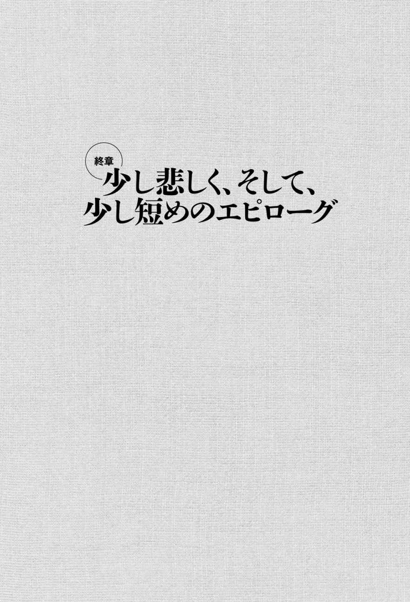
平成一七（二〇〇五）年一〇月、青山の草月会館で、石津を偲ぶ「おかえりなさい石津謙介さん」という会が開かれた。その席で、私は石津の三男、祐介に呼ばれた。
「おふくろ、亡くなりました。この会や何かでスタッフの人たちも忙しいし、だから、このことは、しばらく内緒にしておいてね。あ、それから、最後に会ったのはあなたの奥さんだった。本当にありがとう......」
と、石津夫人・昌子の訃報を知らされた。
私は、一瞬目の前が暗くなり、足がすくんだ。
私は、自身の母の三回忌を済ませたばかりであった。ここにまた、第二の母とも思う夫人の訃報に接し、まさに、鼓琴の悲しみで胸が痛くなった。
当日、私は会の後、ともに石津を知る何人かとささやかな偲ぶ会をするつもりだったのだが、それを断り、家路に着いた。
帰宅して夫人の訃報を家内に告げると、家内もまた、愕然として言葉を失った。
私たち夫婦と、石津夫妻との交流に関しては、先で述べたので繰り返さない。
石津と私と同様、夫人もまた、家内と妙に気が合い、いつしか仲のよい話し相手となっていた。共に映画を鑑賞し、食事をするような仲になっていた。
あるとき夫人は、
「石津は、花房さんのことを本当の友達だと思ってるけど、私は紀美（家内）さんを本当の娘のように思ってるの」
と言って、我々夫婦を喜ばせた。
足掛け七年にわたる、母親介護のための名古屋生活を終え、我々夫婦が横浜に居を移したときには、石津はすでに入院中であった。我々は夫人を見舞うために、四谷の石津家を訪れた。
夫人には若い頃からの喘息と心臓疾患があった。さらに足を悪くされており、しばらくして入院されたという報せに接した。
私もお見舞いに行きたかったが、女性の病室ということで遠慮した。しかし、家内は定期的にお見舞いを続けた。
入院先の病院が三つ変わり、我々はもしやと思い心配していた。しかし、石津の訃報を受けたときも家内が病院に電話し、お元気そうだったということで安心していた。
それからも、何度も家内はお見舞いにうかがった。
平成一七（二〇〇五）年一〇月一四日、家内はいつものようにお見舞いにうかがったが、夫人の容態は悪く、酸素ボンベをつけた状態で眠り続けていたという。
面会時間が過ぎ、看護師に促されて病室を出る前、家内は夫人に
「また来ます。お元気でね......」
と声をかけると、夫人は、うっすらと目を開け、うなずいたようだったという。
祐介の話では、夫人が息を引き取ったのはそれからわずかしかたっていなかったという。
石津は常々、私のことを人に、
「ボクより、ボクのことをよく知ってる花房さん」
と紹介した。
夫人は家内に、
「石津と花房さんは、やることなすこと、食べ物や飲み物のこと、そしてしゃべることまで瓜二つ。そっくりなんでびっくりする」
と言っていたという。実は、不遜ながら、私もそう思っている。
また、石津の入院直後、
「あなたがいなくなっちゃったから、石津があんなになっちゃったのよ」
とも言われた。
平成一七（二〇〇五）年一二月一八日、原宿のダイヤモンド・ホールで「石津謙介会長に、ＶＡＮのＯＢ・ＯＧがお別れをする会」が開催された。私も招かれ列席した。
知った顔がほとんどないその会で、私が居づらそうな顔をしていると、それを見ていたＶＡＮの元常務、高木一雄が、
「花房さん、石津が晩年愉快に過ごせたのはあなたのおかげなんだと、ボクは挨拶の中で皆に言うつもりだ」
と言ってくれた。しかし、私はそれを丁重にお断りした。
以上の四つの言葉は、私にとって過分の言葉であり、まさに私の勲章だと思っている。
今、私の前に石津の最晩年の著書『悠貧ダンディズム』（経済界刊）が開かれている。
その献呈辞には、
お互ひに......二〇〇二年九月二十六日
『そうだそうだ』『全くだ』と、
お互ひに。
青年のような嬉しい話を。
楽しみました。
久し振りに、二人で歌を唄いました。
花房さんと。
石津謙介
と、記されている。
この言葉が我々二人の友情を何よりも強く語ってくれていると信じて、ここで筆を擱く。
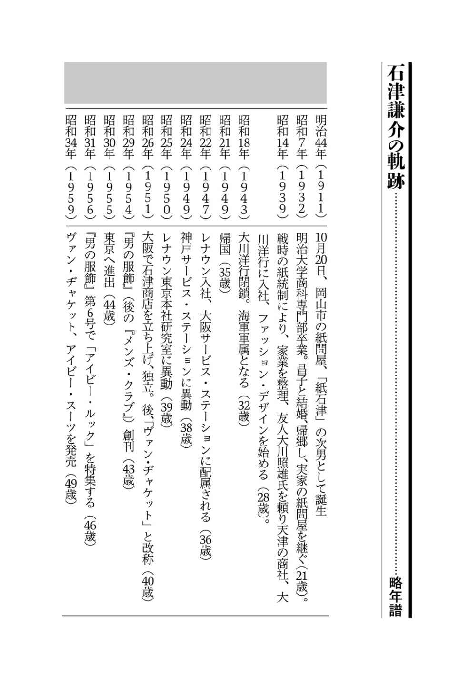
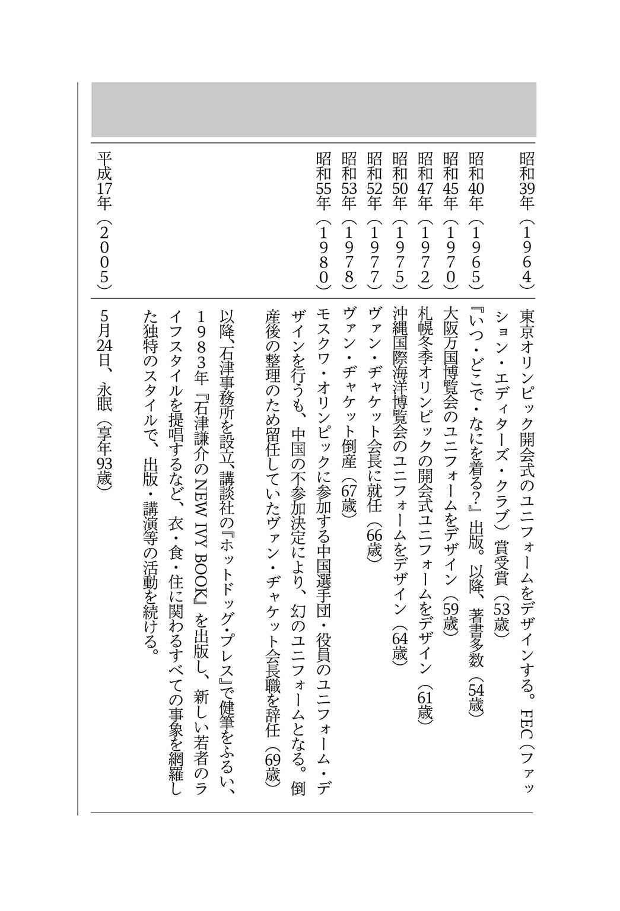
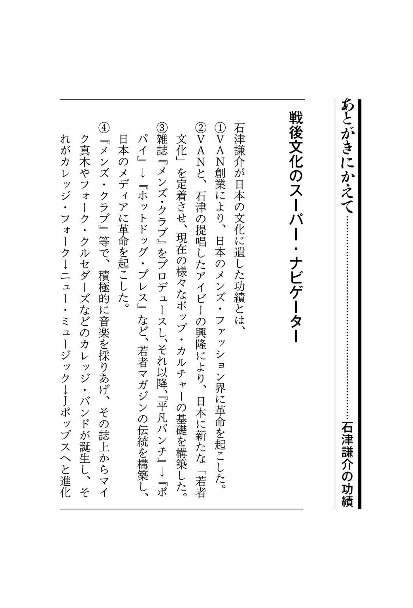
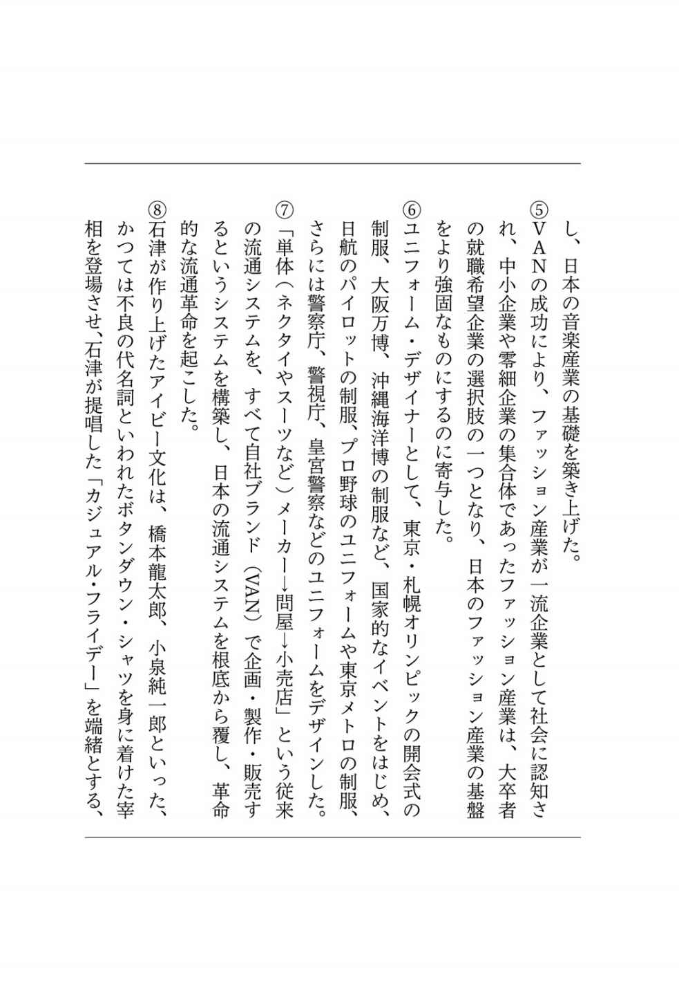
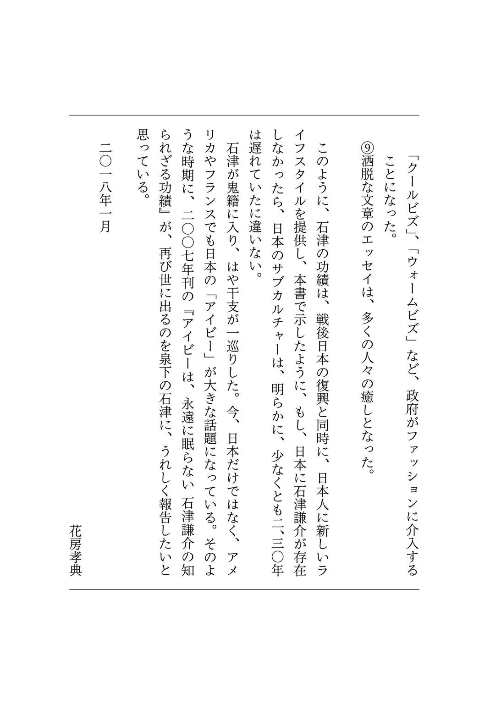
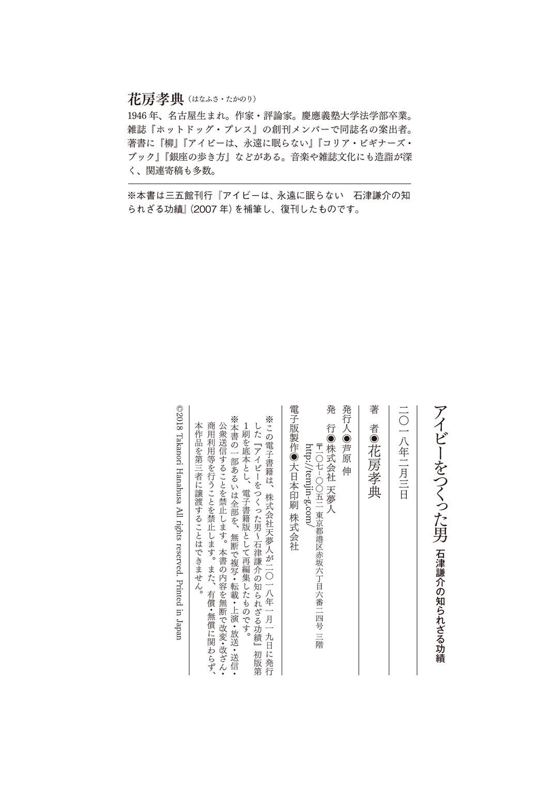